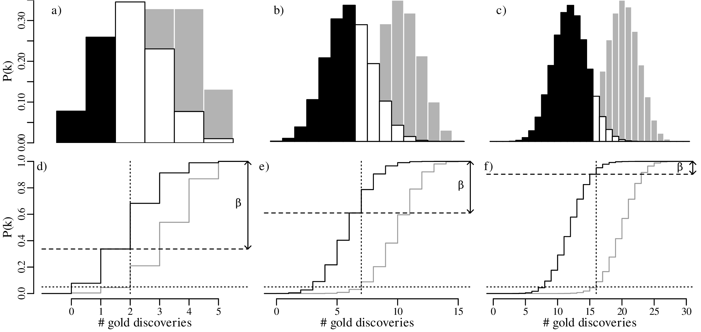

Statistics
for
geoscientists
Pieter
Vermeesch
Department
of
Earth
Sciences
University
College
London
p.vermeesch@ucl.ac.uk
______________
According to the Oxford dictionary of English, the definition of ‘statistics’ is:
The practice or science of collecting and analysing numerical data in large quantities, especially for the purpose of inferring proportions in a whole from those in a representative sample.
The words ‘inferring’ and ‘sample’ are written in bold face because they are really central to the practice and purpose of Science in general, and Geology as a whole. For example:
Thus, pretty much everything that we do as Earth Scientists involves statistics in one way or another. We need statistics to plot, summarise, average, interpolate and extrapolate data; to quantify the precision of quantitative inferences; to fit analytical models to our measurements; to classify data and to extract patterns from it.
The field of statistics is as vast as it is deep and it is simply impossible to cover all its aspects in a single text. These notes are meant as a basic statistical ‘survival guide’ for geoscientists, which may be used as a starting point for further study. There are dozens of statistics textbooks that could be used for this purpose. Two books that I have consulted whilst writing these notes are “Mathematical Statistics and Data Analysis” by John A. Rice (Duxbury Press), which provides an in-depth introduction to general statistics; and “Statistics and Data Analysis in Geology” by John C. Davis (Wiley), which presents an excellent and very detailed introduction to geoscience-specific statistics.
Important though a basic understanding of statistics may be, it is only when this understanding is combined with some programming skills that it becomes truly useful. These notes take a hands-on approach, using a popular statistical programming language called R. To make life easier and lower the barrier to using the statistical methods described herein, a large number of datasets and predefined R functions have been bundled in an accompanying R-package called geostats. To demonstrate the versatility of R, all the 189 figures in these notes were made with R, without involving any other graphics software. Most of these figures can be reproduced using the geostats package.
These notes begin by introducing the basic principles of general statistics, before moving on to ‘geological’ data. Their main purpose is to instill a critical attitude in the student, and to raise an awareness of the many pitfalls of blindly applying statistical ‘black boxes’ to geological problems. For example, Chapters 2 and 3 introduce basic notions of exploratory data analysis using plots and summary statistics. Right from the start they will show that geological data, such as sedimentary clast sizes or reservoir porosity measurements, cannot readily be analysed using these techniques without some simple pre-treatment.
Chapters 4, 5 and 6 introduce the basic principles of probability theory, and uses these to derive two classical examples of discrete probability distributions, namely the binomial and Poisson distributions. These two distributions are used as a vehicle to introduce the important concepts of parameter estimation, hypothesis tests and confidence intervals. Here the text goes into considerably more detail than it does elsewhere. In a departure from many other introductory texts, Section 5.1 briefly introduces the method of maximum likelihood. This topic is revisited again in Sections 6.2, 7.4, 8.4 and 10.3. Even though few geoscientists may use maximum likelihood theory themselves, it is nevertheless useful that they are aware of its main principles, because these principles underlie many common statistical tools.
Chapter 7 discusses the normal or Gaussian distribution. It begins with an empirical demonstration of the central limit theorem in one and two dimensions. This demonstration serves as an explanation of “what is so normal about the Gaussian distribution?”. This is an important question because much of the remainder of the notes (including Chapters 11, 14 and 15) point out that many geological datasets are not normal. Ignoring this non-normality can lead to biased and sometimes nonsensical results.
Scientists use measurements to make quantitative inferences about the world. Random sampling fluctuations can have a significant effect on these inferences, and it is important that these are evaluated before drawing any scientific conclusions. In fact, it may be argued that estimating the precision of a quantitative inference is as important as the inference itself. Chapter 8 uses basic calculus to derive some generic error propagation formulas. However, these formulas are useful regardless of whether one is able to derive them or not. The error propagation chapter points out a strong dependency of statistical precision on sample size.
This sample size dependency is further explored in Chapter 9, which introduces a number of statistical tests to compare one dataset with a theoretical distribution, or to compare two datasets with each other. Useful though these tests are in principle, in practice their outcome should be treated with caution. Here we revisit an important caveat that is also discussed in Section 5.5, namely that the power of statistical tests to detect even the tiniest violation of a null hypothesis, monotonically increases with sample size. This is the reason why statistical hypothesis tests have come under increasing scrutiny in recent years. Chapter 9 advocates that, rather than testing whether a hypothesis is true or false, it is much more productive to quantify ‘how false’ said hypothesis is.
Chapter 10 introduces linear regression using the method of least squares. But whereas most introductory statistics texts only use least squares, these notes also demonstrate the mathematical equivalence of least squares with the method of maximum likelihood using normal residuals. The advantage of this approach is that it facilitates the derivation of confidence intervals and prediction intervals for linear fits, using the error propagation methods of Chapter 8. The method of maximum likelihood also provides a natural route towards more advanced weighted regression algorithms that account for correlated uncertainties in both variables (Section 10.5).
Chapter 11 covers the subjects of fractals and chaos. These topics may seem a bit esoteric at first glance, but do play a key role in the geosciences. We will see that the scale invariance of many geological processes gives rise to data that cannot be captured by conventional probability distributions. Earthquake magnitudes, fracture networks and the grain size distribution of glacial till are just three examples of quantities that follow power law distributions, which do not have a well defined mean. In the briefest of introductions to the fascinating world of deterministic chaos, Section 11.4 uses a simple magnetic pendulum example to introduce the ‘butterfly effect’, which describes the phenomenon whereby even simple systems of nonlinear equations can give rise to unpredictable and highly complex behaviour.
Chapters 12 and 13 introduce some simple algorithms for unsupervised and supervised machine learning, respectively. As the name suggests, unsupervised learning helps scientists visualise and analyse large datasets without requiring any prior knowledge of their underlying structure. It includes multivariate ordination techniques such as Principal Component Analysis (PCA, Section 12.1) and Multidimensional Scaling (MDS, Section 12.2); as well as the k-means (Section 12.3) and hierarchical (Section 12.4) clustering algorithms. Supervised learning algorithms such as discriminant analysis (Section 13.1) and decision trees (Section 13.2) define decision rules to identify pre-defined groups in some training data. These rules can then be used to assign a dataset of new samples to one of these same groups.
Chapter 14 discusses compositional data, which are one of the most common data types in the Earth Sciences. Chemical compositions and the relative abundances of minerals, isotopes and animal species are all strictly positive quantities that can be renormalised to a constant sum. They cannot be safely analysed by statistical methods that assume normal distributions. Even the simplest statistical operations such as the calculation of an arithmetic mean or a standard deviation can go horribly wrong when applied to compositional data. Fortunately, the compositional data conundrum can be solved using a simple data transformation using logratios (Section 14.2). Following logratio transformation, compositional datasets can be safely averaged or analysed by more sophisticated statistical methods.
Directional data such as compass bearings and geographical coordinates are another type of measurement that is probably more common in the Earth Sciences than in any other discipline. Chapter 15 shows that, like the compositional data of Chapter 14, also directional data cannot be safely analysed with ‘normal statistics’. For example, the arithmetic mean of two angles 1∘ and 359∘ is 180∘, which is clearly a nonsensical result. Chapter 15 introduces the vector sum as a better way to average directional data, both in one dimension (i.e., a circle, Sections 15.1–15.2) and two dimensions (i.e., a sphere, Sections 15.3–15.4).
The spatial dimension is crucially important for the Earth Sciences. Geostatistics is a subfield of statistics that specifically deals with this dimension. Chapter 16 provides a basic introduction to kriging interpolation, which is a widely used method to create topographical and compositional maps from a set of sparsely distributed measurements. This chapter concludes the theoretical half of these notes. The remainder of the text (Chapters 17–19) is dedicated to practical exercises.
Chapter 17 provides an extensive introduction to the R programming language. It comprises 16 sections, one for each preceding chapter, and reproduces most of the examples that were covered in the first half of the text. Fortunately, several statistical procedures that are quite complicated to do manually, turn out to be really simple in R. For example, the binomial hypothesis test of Section 5.2 involves six different manual steps, or one simple R command called binom.test. And the Poisson test of Section 6.3 is implemented in an equally simple function called poisson.test.
Despite this simplicity, learning R does present the reader with a steep learning curve. The only way to climb this curve is to practice. One way to do so is to solve the exercises in Chapter 18. Like the R tutorials of Chapter 17, these exercises are also grouped in 16 sections, one for each of the 16 theory chapters. Most of the exercises can be solved with R, using the functions provided in Chapter 17. Fully worked solutions are provided in Chapter 19, which again comprises 16 sections.
I am grateful to my students Peter Elston, Veerle Troelstra and Shiqi Zheng for pointing out mistakes and inconsistencies in earlier versions of these notes. I would also like to thank Jianmei Wang for thoroughly checking Chapters 1–6. The source code of the geostats package and of these notes are provided on GitHub at https://github.com/pvermees/geostats/. Should you find any remaining mistakes in the text or bugs in the software, then you can correct them there and issue a pull request. Or alternatively, you can simply drop me an email. Thanks in advance for your help!
Pieter Vermeesch
University College London
October 2024
A picture says more than a thousand words and nowhere is this more true than in statistics. So before we explore the more quantitative aspects of data analysis, it is useful to visualise the data. Consider, for example, the following four bivariate datasets (Anscombe’s quartet1 ):
| I | II | III | IV | ||||
| x | y | x | y | x | y | x | y |
| 10.0 | 8.04 | 10.0 | 9.14 | 10.0 | 7.46 | 8.0 | 6.58 |
| 8.0 | 6.95 | 8.0 | 8.14 | 8.0 | 6.77 | 8.0 | 5.76 |
| 13.0 | 7.58 | 13.0 | 8.74 | 13.0 | 12.74 | 8.0 | 7.71 |
| 9.0 | 8.81 | 9.0 | 8.77 | 9.0 | 7.11 | 8.0 | 8.84 |
| 11.0 | 8.33 | 11.0 | 9.26 | 11.0 | 7.81 | 8.0 | 8.47 |
| 14.0 | 9.96 | 14.0 | 8.10 | 14.0 | 8.84 | 8.0 | 7.04 |
| 6.0 | 7.24 | 6.0 | 6.13 | 6.0 | 6.08 | 8.0 | 5.25 |
| 4.0 | 4.26 | 4.0 | 3.10 | 4.0 | 5.39 | 19.0 | 12.50 |
| 12.0 | 10.84 | 12.0 | 9.13 | 12.0 | 8.15 | 8.0 | 5.56 |
| 7.0 | 4.82 | 7.0 | 7.26 | 7.0 | 6.42 | 8.0 | 7.91 |
| 5.0 | 5.68 | 5.0 | 4.74 | 5.0 | 5.73 | 8.0 | 6.89 |
For all four datasets (I – IV):
the mean (see Chapter 3) of x is 9
the variance (see Chapter 3) of x is 11
the mean of y is 7.50
the variance of y is 4.125
the correlation coefficient (see Chapter 10) between x and y is 0.816
the best fit line (see Chapter 10) is given by y = 3.00 + 0.500x
So at the summary level, it would appear that all four datasets are identical. However, when we visualise the data as bivariate scatter plots, they turn out to be very different:
Consider the following data table, which reports six different properties of twenty fictitious river catchments:
| # | lithology | age | springs | pH | Ca/Mg | vegetation |
| 1 | basalt | Cz | 0 | 6.2 | 0.35 | 5.8 |
| 2 | granite | Mz | 1 | 4.4 | 11.00 | 28 |
| 3 | basalt | Mz | 0 | 5.6 | 6.00 | 12 |
| 4 | sandstone | Cz | 6 | 5.2 | 1.80 | 27 |
| 5 | shale | pC | 3 | 4.5 | 2.30 | 40 |
| 6 | basalt | Mz | 1 | 5.4 | 0.59 | 12 |
| 7 | shale | Pz | 2 | 4.8 | 8.40 | 3.8 |
| 8 | basalt | Pz | 0 | 5.9 | 2.90 | 6.3 |
| 9 | shale | Mz | 1 | 3.8 | 5.90 | 17 |
| 10 | shale | Mz | 2 | 4.0 | 2.10 | 16 |
| 11 | sandstone | Pz | 4 | 5.0 | 1.20 | 95 |
| 12 | shale | pC | 2 | 4.1 | 2.10 | 94 |
| 13 | sandstone | Mz | 4 | 5.2 | 1.10 | 92 |
| 14 | basalt | Cz | 1 | 5.5 | 1.60 | 88 |
| 15 | sandstone | Pz | 4 | 5.3 | 0.90 | 88 |
| 16 | granite | Pz | 0 | 4.6 | 1.70 | 70 |
| 17 | basalt | Mz | 0 | 5.7 | 3.40 | 92 |
| 18 | shale | Pz | 1 | 4.6 | 0.53 | 72 |
| 19 | granite | Mz | 0 | 4.6 | 2.20 | 74 |
| 20 | basalt | Cz | 1 | 5.6 | 7.70 | 84 |
The first three columns contain discrete data values and can be visualised as bar charts or histograms.
Discrete (categorical, ordinal and count) data naturally fall into bins and the most obvious way to visualise them is as bar charts (Figure 2.2). Likewise, continuous (Cartesian, Jeffreys, proportions) data can also be collected into bins and plotted as histograms (Figure 2.3). However, this binning exercise poses two practical problems.
The number of bins strongly affects the appearance of a histogram. Figure 2.4 shows the pH data on two histograms with the individual measurements marked as vertical ticks underneath. This is also known as a rug plot, and allows us to better assess the effect of bin width on the appearance of histograms:
A number of rules of thumb are available to choose the optimal number of bins. For example, Excel uses a simple square root rule:
| (2.1) |
where n is the number of observations (i.e. n = 20 for the pH example) and ⌈∗⌉ means the ‘ceiling’ of ∗, i.e. the value rounded up to the next integer. R uses Sturges’ Rule:
| (2.2) |
however no rule of thumb is optimal in all situations.
Even when the number of bins has been fixed, just shifting them slightly to the left or to the right can have a significant effect on the appearance of the histogram. For example:
There is no optimal solution to the bin placement problem. This reflects a limitation of histograms as a way to present continuous data.
To overcome the bin placement problem, let us explore a variant of the ordinary histogram that is constructed as follows:
Normalising the area under the resulting curve produces a so-called Kernel Density Estimate (KDE). The mathematical definition of this function is:
| (2.3) |
where xi is the ith measurement (out of n), h is the ‘bandwidth’ of the kernel density estimator (h = 1 in Figure 2.6), and K(u) is the ‘kernel’ function. For the rectangular kernel:
| (2.4) |
where ‘|∗|’ stands for “the absolute value of ∗”. Applying this method to the pH data:
Instead of a rectangular kernel, we could also use triangles to construct the KDE curve, or any other (symmetric) function. One popular choice is the Gaussian function:
| (2.5) |
which produces a continuous KDE function:
Using the Gaussian kernel to plot the pH data:
Although kernel density estimation solves the bin placement problem, it is not entirely free of design decisions. The bandwidth h of a KDE fulfils a similar role as the bin width of a histogram. Changes in h affect the smoothness of the KDE curve:
Bandwidth selection is a similar problem to bin width selection. A deeper discussion of this problem falls outside the scope of text. Suffice it to say that most statistical software (including R) use equivalent rules of thumb to Sturges’ Rule to set the bandwidth. But these values can be easily overruled by the user.
As discussed in Section 2.1, Jeffreys quantities such as the Ca/Mg ratios of Figure 2.3.b exist within an infinite half space between 0 and +∞. However, when we visualise them as a KDE, the left tail of this curve may extend into negative data space, implying that there is a finite chance of observing negative Ca/Mg ratios:
This problem can be solved by transforming the Jeffreys quantities to the entire infinite space of numbers by applying a logarithmic transformation:
| (2.6) |
After constructing the KDE, the results can then be mapped3 back to linear space using an exponential transformation:
| (2.7) |
Jeffreys quantities are just one example of constrained measurements. As another example, consider the vegetation data of Figure 2.3.c. Again, the Gaussian KDE of the data plots into physically impossible values of < 0 and > 100%:
Using a similar approach as before, the dataspace can be opened up from the constraints of the 0 to 1 interval to the entire line of numbers, from −∞ to +∞. For proportions, this is achieved by the logistic transformation:
| (2.8) |
After constructing the density estimate (or carrying out any other numerical manipulation), the results can be mapped back to the 0 to 1 interval with the inverse logit transformation:
| (2.9) |
We will see in Chapter 14 that the logistic transformation is a special case of a general class of logratio transformations that are useful for the analysis of compositional data.
KDEs can be generalised from one to two dimensions. For example, consider a dataset of eruption timings from the Old Faithful geyser in Yellowstone national park (Wyoming, USA):
It is generally not possible to visualise datasets of more than two dimensions in a single graphic. In this case there are two options:
The second strategy is also known as “ordination” and will be discussed in detail in Section 12.1.
Both histograms and kernel density estimates require the selection of a ‘smoothing parameter’. For the histogram, this is the bin width; for the KDE, it is the bandwidth (h in Equation 2.3). Despite the existence of rules of thumb to automatically choose an appropriate value for the smoothing parameter, there nevertheless is a level of arbitrariness associated with them. The empirical cumulative distribution function (ECDF) is an alternative data visualisation device that does not require smoothing. An ECDF is step function that jumps up by 1∕n at each of n data points. The mathematical formula for this procedure can be written as:
| (2.10) |
where I(∗) = 1 if ∗ is ‘true’ and I(∗) = 0 if ∗ is ‘false’. The y-coordinates of the ECDF are values from 0 to 1 that mark the fraction of the measurements that are less than a particular value. Plotting the pH, Ca/Mg, vegetation and geyser data as ECDFs:
The visual interpretation of ECDFs is different from that of histograms or KDEs. Whereas different clusters of values stand out as ‘peaks’ in a histogram or KDE, they are marked by steep segments of the ECDF. For example, the two peaks in the KDE of the geyser data (Figure 2.15) correspond to two steps in the ECDF (Figure 2.16.d).
After a purely qualitative inspection of the data, we can now move on to a more quantitative description. This chapter will introduce a number of summary statistics to summarise larger datasets using just a few numerical values, including:
Before proceeding with this topic, it is useful to bear in mind that these summary statistics have limitations. The Anscombe quartet of Table 2.1 and Figure 2.1 showed that very different looking datasets can have identical summary statistics. But with this caveat in mind, summary statistics are an essential component of data analysis provided that they are preceded by a visual inspection of the data.
There are many ways to define the ‘average’ value of a multi-value dataset. In this chapter, we will introduce three of these but later chapters will introduce a few more.
| (3.1) |
| (3.2) |
If n is an even number, then the median is the average of the two numbers on either side of the middle. Graphically, the median can be identified as the value that corresponds to the halfway point of the ECDF.
Applying these three concepts to the pH data, the mean is given by:
|
|
The median is obtained by ranking the values in increasing order, and marking the two middle values in bold:
3.8, 4.0, 4.1, 4.4, 4.5, 4.6, 4.6, 4.6, 4.8, 5.0, 5.2, 5.2, 5.3, 5.4, 5.5, 5.6, 5.6, 5.7, 5.9, 6.2
Then the median is the average of these two values (median[x] = 5.1). The most frequently occurring pH value in the dataset is 4.6, but this is a rounded value from a continuous distribution. If instead we use a KDE to identify the mode, then this yields a value of 5.4:
Calculating the same three summary statistics for the Ca/Mg data:
Finally, repeating the exercise one more time for the vegetation and geyser eruption data:
It is rare for all the observations in a dataset to be exactly the same. In most cases they are spread out over a range of values. The amount of spread can be defined in a number of ways, the most common of which are:
| (3.3) |
where is the arithmetic mean (Equation 3.1). The square of the standard deviation (i.e. s[x]2) is also known as the variance.
| (3.4) |
Calculating the standard deviation of the pH data (whose mean is = 5.0):
| i | 1 | 2 | 3 | 4 | 5 | 6 | 7 | 8 | 9 | 10 | 11 | 12 | 13 | 14 | 15 | 16 | 17 | 18 | 19 | 20 |
| x i | 6.2 | 4.4 | 5.6 | 5.2 | 4.5 | 5.4 | 4.8 | 5.9 | 3.8 | 4.0 | 5.0 | 4.1 | 5.2 | 5.5 | 5.3 | 4.6 | 5.7 | 4.6 | 4.6 | 5.6 |
| (xi −) | 1.2 | -.6 | .6 | .2 | -.5 | .4 | -.2 | .9 | -1.2 | -1.0 | .0 | -.9 | .2 | .5 | .3 | -.4 | .7 | -.4 | -.4 | .6 |
| (xi −)2 | 1.44 | .36 | .36 | .04 | .25 | .16 | .04 | .81 | 1.44 | 1.0 | .0 | .81 | .04 | .25 | .09 | .16 | .49 | .16 | .16 | .36 |
Taking the sum of the last row:
from which we get:
Sorting the pH values in increasing order and recalling that med(x) = 5.1:
| i | 1 | 2 | 3 | 4 | 5 | 6 | 7 | 8 | 9 | 10 | 11 | 12 | 13 | 14 | 15 | 16 | 17 | 18 | 19 | 20 |
| x i | 3.8 | 4.0 | 4.1 | 4.4 | 4.5 | 4.6 | 4.6 | 4.6 | 4.8 | 5.0 | 5.2 | 5.2 | 5.3 | 5.4 | 5.5 | 5.6 | 5.6 | 5.7 | 5.9 | 6.2 |
| xi − med(x) | -1.3 | -1.1 | -1.0 | -0.7 | -0.6 | -0.5 | -0.5 | -0.5 | -0.3 | -0.1 | 0.1 | 0.1 | 0.2 | 0.3 | 0.4 | 0.5 | 0.5 | 0.6 | 0.8 | 1.1 |
| |xi − med(x)| | 1.3 | 1.1 | 1.0 | 0.7 | 0.6 | 0.5 | 0.5 | 0.5 | 0.3 | 0.1 | 0.1 | 0.1 | 0.2 | 0.3 | 0.4 | 0.5 | 0.5 | 0.6 | 0.8 | 1.1 |
| sorted | 0.1 | 0.1 | 0.1 | 0.2 | 0.3 | 0.3 | 0.4 | 0.5 | 0.5 | 0.5 | 0.5 | 0.5 | 0.6 | 0.6 | 0.7 | 0.8 | 1.0 | 1.1 | 1.1 | 1.3 |
The MAD is given by the mean of the bold values on the final row of this table, yielding a value of MAD = 0.5.
The 25 and 75 percentiles are obtained by averaging the two pairs of bold faced numbers on the second row of the table. They are 4.55 and 5.55, respectively. Therefore, IQR = 5.55 - 4.55 = 1.00. Showing the same calculation on an ECDF:
The skewness of a distribution is defined as:
| (3.5) |
To assess the meaning of this new summary statistic, let us plot the pH and Ca/Mg datasets alongside the distribution of Covid-19 death rates (in deaths per 100,000 people) in the UK:
A box-and-wisker plot is a compact way to jointly visualise the most important summary statistics in a dataset:
Probability is a numerical description of how likely it is for an event to occur or how likely it is for a proposition to be true. In the context of a random experiment, in which all outcomes are equally likely, the probability of an outcome A can be defined as:
| (4.1) |
For example, the probability of tossing an unbiased coin and observing a head (H) is

The probability of tossing the same coin three times and obtaining two heads and one tail (T) is:
| (4.2) |
Similarly, the probability of throwing two fair dice and obtaining a two (⚁ ) and a six (⚅ ) is:
| (4.3) |
The multiplicative rule of probability states that the probability of two combined independent1 experiments is given by the product of their respective probabilities. Thus, if one were to carry out a coin tossing and a dice throwing experiment, then the probability of obtaining two heads and one tail for the first experiment and throwing a two and a six in the second experiment is:
where ∩ stands for ‘and’ in the sense of “the intersection of two sets of outcomes”. Similarly, the likelihood of throwing an unbiased coin twice and obtaining two heads can be calculated as:
The additive rule of probability states that the probability of observing either of two outcomes A and B is given by:
| (4.4) |
For example the probability of observing two heads for the first experiment or throwing a two and a six in the second experiment is:
For two mutually exclusive experiments, the third term in Equation 4.4 disappears. For example, the probability of obtaining two heads and one tail or throwing three heads is:
A permutation is an ordered arrangement of objects. These objects can be selected in one of two ways:
| (4.5) |
| (4.6) |
possible sequences, where ‘!’ is the factorial operator.
Let us apply these two formulas to a classic statistical problem: “what is the probability that at least two students in a classroom of k celebrate their birthdays on the same day?”. The solution is as follows.

If k = 23, then P(> 1 overlapping birthdays) = 0.507. In other words, there is a greater than 50% chance that at least two students will share the same birthday in a classroom of 23.
Having considered coins, dice and lottery balls, we will now (literally!) deal with a fourth archetypal source of statistical experiments, namely playing cards. Equation 4.6 showed that there are 52!∕49! = 132600 unique possible ways to select three cards from a deck. Suppose that we have drawn the following cards:
then there are 3! = 6 ways to order these cards:
Suppose that we don’t care in which order the objects (cards) appear. How many different unordered samples (hands) are possible?
(# ordered samples) = (# unordered samples) × (# ways to order the samples)
There are n!∕(n−k)! ways to select k objects from a collection of n, and there are k! ways to order these k objects. Therefore

The formula on the right hand side of this equation gives the number of combinations of k elements among a collection of n. This formula is also known as the binomial coefficient and is often written as (pronounce “n choose k”):
| (4.7) |
Applying this formula to the card dealing example, the number of ways to draw three cards from a deck of 52 is
Revisiting the two examples at the start of this chapter, the number of ways to arrange two heads among three coins is
which is the numerator of Equation 4.2; and the number of combinations of one ⚀ and one ⚅ is
which is the numerator of Equation 4.3.
So far we have assumed that all experiments (coin tosses, throws of a dice) were done independently, so that the outcome of one experiment did not affect that of the other. However this is not always the case in geology. Sometimes one event depends on another one. We can capture this phenomenon with the following definition:
| (4.8) |
Let P(A) be the probability that a sedimentary deposit contains ammonite fossils. And let P(B)
be the proportion of our field area that is covered by sedimentary rocks of Bajocian age (170.3 –
168.3 Ma). Then P(A|B) is the probability that a given Bajocian deposit contains ammonite
fossils. Conversely, P(B|A) is the probability that an ammonite fossil came from a Bajocian
deposit.
The multiplication law states that:
| (4.9) |
Suppose that 70% of our field area is covered by Bajocian deposits (P(B) = 0.7), and that 20% of
those Bajocian deposits contain ammonite fossils (P(A|B) = 0.2). Then there is a 14% (= 0.7 × 0.2)
chance that the field area contains Bajocian ammonites.
The law of total probability states that, given n mutually exclusive scenarios Bi (for 1 ≤ i ≤ n):
| (4.10) |
Consider a river whose catchment contains 70% Bajocian deposits (P(B1) = 0.7) and 30% Bathonian2 deposits (P(B2) = 0.3). Recall that the Bajocian is 20% likely to contain ammonite fossils (P(A|B1) = 0.2), and suppose that the Bathonian is 50% likely to contain such fossils (P(A|B2) = 0.5). How likely is it that the river catchment contains ammonites? Using Equation 4.10:
Equation 4.9 can be rearranged to form Bayes’ Rule:
| (4.11) |
or, combining Equation 4.11 with Equation 4.10:
| (4.12) |
Suppose that we have found an ammonite fossil in the river bed. What is its likely age? Using Equation 4.12, the probability that the unknown fossil is Bajocian (B1) is given by:
Thus there is a 48% chance that the fossil is Bajocian, and a 52% chance that it is Bathonian.
A Bernoulli variable takes on only two values: 0 or 1. For example:
Consider five gold diggers during the 1849 California gold rush, who have each purchased a claim in the Sierra Nevada foothills. Geological evidence suggests that, on average, two thirds of the claims in the area contain gold (1), and the remaining third do not (0). The probability that none of the five prospectors find gold is
The chance that exactly one of the prospectors strikes gold is
where
| P(10000) = | (2∕3)(1∕3)4 = 0.0082 | ||
| P(01000) = | (1∕3)(2∕3)(1∕3)3 = 0.0082 | ||
| P(00100) = | (1∕3)2(2∕3)(1∕3)2 = 0.0082 | ||
| P(00010) = | (1∕3)3(2∕3)(1∕3) = 0.0082 | ||
| P(00001) = | (1∕3)4(2∕3) = 0.0082 |
so that
in which we recognise the binomial coefficient (Equation 4.7). Similarly:
| P(2 × gold) | = (2∕3)2(1∕3)3 = 10 × 0.016 = 0.16 | ||
| P(3 × gold) | = (2∕3)3(1∕3)2 = 10 × 0.033 = 0.33 | ||
| P(4 × gold) | = (2∕3)4(1∕3) = 5 × 0.066 = 0.33 | ||
| P(5 × gold) | = (2∕3)5(1∕3)0 = 1 × 0.13 = 0.13 |
These probabilities form a probability mass function (PMF) and can be visualised as a bar chart:
The generic equation for the PMF of the binomial distribution is
| (5.1) |
where p is the probability of success and k is the number of successes out of n trials. Equivalently, the results can also be shown as a cumulative distribution function (CDF):
| (5.2) |
The previous section assumed that the probability of success (p in Equation 5.1) is known. In the real world, this is rarely the case. In fact, p is usually the parameter whose value we want to determine based on some data. Consider the general case of k successes among n trials. Then we can estimate p by reformulating Equation 5.1 in terms of p instead of k:
| (5.3) |
This is called the likelihood function. The only difference between the probability mass function (Equation 5.1) and the likelihood function (Equation 5.3) is that former calculates the probability of an outcome k given the parameters n and p, whereas the latter is used to estimate the parameter p given the data n and k. The most likely value of p given n and k can be found by maximising ℒ(p|n,k). This can be achieved by taking the derivative of Equation 5.3 with respect to p and setting it to zero:
which gives
The symbol indicates that p is an estimate for the true parameter value p, which is unknown. Dividing by and rearranging:
Dividing both sides by pk(1 −p)n−k:
which can be solved for p:
| (5.4) |
Let us apply Equation 5.4 to our gold prospecting example. Suppose that only two of the five claims produce gold. Then our best estimate for p given this result is
So based on this very small dataset, our best estimate for the abundance of gold in the Sierra Nevada foothills is 40%. This may be a trivial result, but it is nevertheless a useful one. The derivation of Equation 5.4 from Equation 5.3 follows a recipe that underpins much of mathematical statistics. It is called the method of maximum likelihood. Of course, the derivation of parameter estimates is not always as easy as it is for the binomial case.
Let us continue with our gold prospecting example. Given that only two of the five prospectors found gold, our best estimate for the abundance of gold-bearing claims in the prospecting area is p = 2∕5 (40%). However the introductory paragraph to this chapter mentioned that geological evidence suggests that 2/3 (67%) of the claims should contain gold. Can the discrepancy between the predicted and the observed number of successes by attributed to bad luck, or does it mean that the geological estimates were wrong? To answer this question, we follow a sequence of six steps:
HA (alternative hypothesis):
p < 2∕3
| k | 0 | 1 | 2 | 3 | 4 | 5 |
| P(T = k) | 0.0041 | 0.0411 | 0.1646 | 0.3292 | 0.3292 | 0.1317 |
| P(T ≤ k) | 0.0041 | 0.0453 | 0.2099 | 0.5391 | 0.8683 | 1.0000 |
The p-value1 is the probability of obtaining test results at least as extreme as the result actually observed, under the assumption that the null hypothesis is correct. For our one-sided test, the p-value is 0.2099, which corresponds to the probability of observing k ≤ 2 successful claims if p = 2∕3.
| k | 0 | 1 | 2 | 3 | 4 | 5 |
| P(T = k) | 0.0041 | 0.0411 | 0.1646 | 0.3292 | 0.3292 | 0.1317 |
| P(T ≤ k) | 0.0041 | 0.0453 | 0.2099 | 0.5391 | 0.8683 | 1.0000 |
k = 0 and k = 1 are incompatible with H0 because the probability of finding gold in k ≤ 1 claims is only 0.0453, which is less than α. Therefore our rejection region contains two values:
which means that we cannot reject H0. Alternatively, and equivalently, we can reach the same conclusion by observing that the p-value is greater than α (i.e., 0.2099 > 0.05). Note that failure to reject the null hypothesis does not mean that said hypothesis has been accepted!
Displaying the rejection region graphically:
The above hypothesis test is called a one-sided hypothesis test, which refers to the fact that HA specifies a direction (‘<’ or ‘>’). Alternatively, we can also formulate a two-sided hypothesis test:
HA (alternative hypothesis):
p≠2∕3
| k | 0 | 1 | 2 | 3 | 4 | 5 |
| P(T = k) | 0.0041 | 0.0411 | 0.1646 | 0.3292 | 0.3292 | 0.1317 |
| P(T ≤ k) | 0.0041 | 0.0453 | 0.2099 | 0.5391 | 0.8683 | 1.0000 |
| P(T ≥ k) | 1.000 | 0.9959 | 0.9547 | 0.7901 | 0.4609 | 0.1317 |
| k | 0 | 1 | 2 | 3 | 4 | 5 |
| P(T = k) | 0.0041 | 0.0411 | 0.1646 | 0.3292 | 0.3292 | 0.1317 |
| P(T ≤ k) | 0.0041 | 0.0453 | 0.2099 | 0.5391 | 0.8683 | 1.0000 |
| P(T ≥ k) | 1.000 | 0.9959 | 0.9547 | 0.7901 | 0.4609 | 0.1317 |
which yields a smaller rejection region than before, because P(T ≤ 1) = 0.0453, which is greater than α∕2 = 0.025. The same is true for P(T ≥ k) for any k. Therefore:
Displaying the two-sided hypothesis test graphically:
Again, H0 cannot be rejected at an α = 0.05 significance level. So in this case the one-sided and two-sided hypothesis tests produce exactly the same result, as the observed value k = 2 is not in the rejection region for either test. However this is not always the case, as will be shown next.
Suppose that not five but fifteen gold prospectors had purchased a claim in the same area as before. Further suppose that six of these prospectors had struck gold. Then the maximum likelihood estimate for p is:
which is the same as before. The one-sided hypothesis test (H0 : p = 2∕3 vs. HA : p < 2∕3) proceeds as before, but leads to a different table of probabilities:
| k | 0 | 1 | 2 | 3 | 4 | 5 | 6 | 7 |
| P(T = k) | 7.0×10−8 | 2.1×10−6 | 2.9×10−5 | 2.5×10−4 | 0.0015 | 0.0067 | 0.0223 | 0.0574 |
| P(T ≤ k) | 7.0×10−8 | 2.2×10−6 | 3.1×10−5 | 2.8×10−4 | 0.0018 | 0.0085 | 0.0308 | 0.0882 |
| k | 8 | 9 | 10 | 11 | 12 | 13 | 14 | 15 |
| P(T = k) | 0.1148 | 0.1786 | 0.2143 | 0.1948 | 0.1299 | 0.0599 | 0.0171 | 0.0023 |
| P(T ≤ k) | 0.2030 | 0.3816 | 0.5959 | 0.7908 | 0.9206 | 0.9806 | 0.9977 | 1.0000 |
The rejection region is shown in bold and consists of
| (5.5) |
which includes k = 6. Therefore H0 is rejected.
For the two-sided hypothesis test (H0 : p = 2∕3 vs. HA : p≠2∕3):
| k | 0 | 1 | 2 | 3 | 4 | 5 | 6 | 7 |
| P(T = k) | 7.0×10−8 | 2.1×10−6 | 2.9×10−5 | 2.5×10−4 | 0.0015 | 0.0067 | 0.0223 | 0.0574 |
| P(T ≤ k) | 7.0×10−8 | 2.2×10−6 | 3.1×10−5 | 2.8×10−4 | 0.0018 | 0.0085 | 0.0308 | 0.0882 |
| P(T ≥ k) | 1.0000 | 1-7.0×10−8 | 1-2.2×10−6 | 1-3.1×10−5 | 1-2.8×10−4 | 0.9982 | 0.9915 | 0.9692 |
| k | 8 | 9 | 10 | 11 | 12 | 13 | 14 | 15 |
| P(T = k) | 0.1148 | 0.1786 | 0.2143 | 0.1948 | 0.1299 | 0.0599 | 0.0171 | 0.0023 |
| P(T ≤ k) | 0.2030 | 0.3816 | 0.5959 | 0.7908 | 0.9206 | 0.9806 | 0.9977 | 1.0000 |
| P(T ≥ k) | 0.9118 | 0.7970 | 0.6184 | 0.4041 | 0.2092 | 0.0794 | 0.0194 | 0.0023 |
The rejection region (which includes both tails of the distribution) is:
| (5.6) |
This region does not include k = 6. Therefore we cannot reject the two-sided null hypothesis that p = 2∕3 at α = 0.05.
Let us increase our ‘sample size’ (number of prospectors) even more, from 15 to 30, and suppose once again that only 40% of these found gold even though the geological evidence suggested that this should be 67%. The lookup table of probabilities would be quite large, so we will just show the distributions graphically:
In summary, we have compared the same outcome of 40% successes with the null hypothesis p = 2∕3, using three different sample sizes (n):
In statistical terms, the increase in sample size has increased the ‘power’ of the test to reject the hypothesis test. A formal mathemathical definition of this concept will be given in Section 5.4.
There are four possible outcomes for a hypothesis test, which can be organised in a 2 × 2 table:
| H0 is ... | false | true |
| rejected | correct decision | Type-I error |
| not rejected | Type-II error | correct decision |
To appreciate the difference between the two types of errors in this table, it may be useful to compare statistical hypothesis testing with a legal analogue. The jury in a court of justice are in a situation that is similar to that of a statistical hypothesis test. They are faced with a suspect who has either committed a crime or not, and they must decide whether to sentence this person or acquit them. In this case our ‘null hypothesis’ is that the accused is innocent. The jury then needs decide whether there is enough evidence to reject this hypothesis in favour of the alternative hypothesis, which is that the accused is guilty. Casting this process in a second 2 × 2 table:
| the accused is ... | guilty | innocent |
| convicted | correct decision | Type-I error |
| acquitted | Type-II error | correct decision |
A type-I error is committed when a true null hypothesis test is erroneously rejected. This is akin to putting an innocent person in prison. For our gold prospecting example, this means that we reject the expert opinion of the geologist (whose assessment indicated a 2/3 chance of finding gold) when this geologist is in fact correct.
A type-II error is committed when we fail to reject a false null hypothesis. This is akin to letting a guilty person get away with a crime for lack of evidence. In the geological example, this means that we conclude that the geological assessment is right despite it being wrong.
The probability of committing a type-I error is controlled by one parameter:
Using the customary value of α = 0.05, there is a 5% chance of committing a type-I error. So even if the null hypothesis is correct, then we would still expect to reject it once every 20 times. This may be acceptable in geological studies, but probably not in the legal system! The principle that guilt must be proven “beyond any reasonable doubt” is akin to choosing a very small significance level (α ≪ 0.05). However it is never possible to enforce α = 0 unless all suspects are aquitted, so it is inevitable that some innocent people are convicted.
The probability of committing a type-II error (β) depends on two things:
In our geological example, 40% of the prospectors found gold in their claim, so there clearly was some gold present in the area. Suppose that the actual abundance of gold in the prospecting area was indeed 40% (p = 2∕5) instead of p = 2∕3. Then the expected distribution of outcomes would follow a binomial distribution with p = 2∕5. As shown in Section 5.2, the rejection region for the one-sided hypothesis test of H0 : p = 2∕3 vs. HA : p < 2∕3 is R = {0,1} for n = 5. If the actual value for p is 2/5, then the probability of observing a value for k that falls in this rejection region is P(k < 2|n = 5,p = 2∕5) = 0.34. This is known as the power of the statistical test. The probability of committing a type-II error is given by:
| (5.7) |
Next, suppose that the true probability of finding gold is even lower, at p = 1∕5. Under this alternative distribution, the probability of finding gold in k ≤ 1 out of n = 5 claims (i.e., the power) increases to 74%. Therefore, the probability of committing a type-II error has dropped to only 26%.
Finally, consider an end member situation in which the prospecting area does not contain any gold at all (p = 0). Then the probability of finding gold is obviously zero, because F(x = 2) = 0. Under this trivial scenario, the power of the test is 100%, and the probability of committing a type-II error is zero.
Plotting these results graphically:
The effect of sample size was already discussed in Section 5.3. Comparing the predicted outcomes for the null hypothesis H0 : p = 2∕3 to those of the alternative hypothesis HA : p = 2∕5 for sample sizes of n = 5, 15 and 30:

All hypotheses are wrong ... in some decimal place – John Tukey (paraphrased)
All models are wrong, but some are useful – George Box
Statistical tests provide a rigorous mathematical framework to assess the validity of a hypothesis. It is not difficult to see the appeal of this approach to scientists, including geologists. The scientific method is based on three simple steps:
It is rarely possible to prove scientific hypotheses. We can only disprove them. New knowledge is gained when the results of an experiment do not match the expectations. For example:
From this experiment we still don’t know what the lower mantle is made of. But at least we know that it is not olivine. Let us contrast this outcome with a second type of hypothesis:
What have we learned from this experiment? Not much. We certainly did not prove that Earth’s lower mantle consists of perovskite. There are lots of other minerals that are stable at lower mantle pressures. The only thing that we can say is that the null hypothesis has survived to live another day. The scientific method is strikingly similar to the way in which a statistical hypothesis test is carried out. A null hypothesis, like a scientific hypothesis, cannot be proven. It can only be disproved. Rejection of a null hypothesis is the best outcome, because it is the only outcome that teaches us something new. Our understanding of the natural world continues to improve by falsifying current hypotheses using scientific experiments, which leads to revised hypotheses that are closer to the truth.
It may seem natural to use the statistical approach to test scientific hypotheses. However doing so is not without dangers. To explain these dangers, let us go back to the power analysis of Section 5.3. The power of our hypothesis test to reject H0 : p = 2∕3 increases with sample size. A small sample may be sufficient to detect large deviations from the null hypothesis. Smaller deviations require larger sample sizes. But no matter how small the violation of the null hypothesis is, there always exists a sample size that is large enough to detect it.
Statistical tests are an effective way to evaluate mathematical hypotheses. They are less useful for scientific hypotheses. There is a profound difference between mathematical and scientific hypotheses. Whereas a mathematical hypothesis is either ‘right’ or ‘wrong’, scientific hypotheses are always ‘somewhat wrong’. Considering our gold prospecting example, it would be unreasonable to expect that p is exactly equal to 2/3, down to the 100th significant digit. Estimating the proportion of gold in the area to be within 10% of the truth would already be a remarkable achievement. Yet given enough data, there will always come a point where the geological prediction is disproved. Given a large enough dataset, even a 1% deviation from the predicted value would yield an unacceptably small p-value:

As another example, suppose that we have analysed the mineralogical composition of two samples of sand that were collected 10 cm apart on the same beach. Our null hypothesis is that the composition of the two samples is the same. Plausible though this hypothesis may seem, it will always be possible to reject it, provided that enough grains are analysed. We may need to classify a hundred, a thousand or even a million grains from each sample, but at some point a ‘statistically significant’ difference will be found. Given a large enough sample, even the tiniest hydraulic sorting effect becomes detectable.
In conclusion, formalised hypothesis tests are of limited use in science. There are just two exceptions in which they do serve a useful purpose:
The previous section showed that simple binary hypothesis tests are of limited use in geology. The question that is relevant to scientists is not so much whether a hypothesis is wrong, but rather how wrong it is. In the context of our gold prospecting example, there is little use in testing whether p is exactly equal to 2∕3. It is far more useful to actually estimate p and to quantify the statistical uncertainty associated with it.
Equation 5.4 showed that, given k successful claims among n total claims, the most likely estimate for p is k∕n. For example, if we observe k = 2 successful claims among n = 5 trials, then our best estimate for the abundance of gold is p = 2∕5. However this does not rule out other values. Let us now explore all possible values for p that are compatible with the observed k = 2 successful claims:
which is greater than α∕2. Consequently, the observation k = 2 falls outside the rejection region of the two-sided hypothesis test, and the proposed parameter value p = 0.1 is deemed to be compatible with the observation.
which is less than the α∕2 cutoff, and so p = 0.9 is not compatible with the observation.
The set of all values of p that are compatible with the observed outcome k = 2 forms a confidence interval. Using an iterative process, it can be shown that the lower and upper limits of this interval are given by:
Repeating this procedure for a different result, for example k = 4, yields a different confidence interval, namely:
What happens if we increase the sample size from n = 5 to n = 30, and the number of successful claims from k = 2 to k = 12? Then the maximum likelihood estimate remains p = 2∕5 as in our first example, but the 95% confidence interval narrows down to
To further explore the trend of decreasing confidence interval width with increasing sample size, let us evaluate the 95% confidence intervals for p = k∕n estimates of 2/3 and 1/5, respectively, over a range of sample sizes between n = 3 and n = 300:
The confidence intervals become progressively narrower with increasing sample size. This reflects a steady improvement of the precision of our estimate for p with increasing sample size. In other words, large datasets are ‘rewarded’ with better precision.
The confidence intervals of Figure 5.14 are asymmetric but become more symmetric around the estimate with increasing sample size. In fact, for large n (> 20, say) and p not near to 0 or 1, the 95% confidence interval can be approximated as
| (5.8) |
where
| (5.9) |
A derivation of and justification for this approximation will be provided in Section 8.4.
Example 1
A declustered earthquake catalog1 of the western United States contains 543 events of magnitude 5.0 and greater that occurred between 1917 and 2016:
Note how the mean and the variance of this dataset are similar.
Example 2
5000 grains of sand have been mounted in an uncovered thin section and imaged with a scanning electron microscope (SEM). The SEM has identified the locations of zircon (ZrSiO4) crystals that are suitable for geochronological dating:

Like the earthquake example, also this zircon example is characterised by similar values for the mean and the variance. This turns out to be a characteristic property of the Poisson distribution.
The Poisson distribution expresses the probability of a given number of events occurring in a fixed interval of time or space if these events occur with a constant mean rate and are independent of the time since the last event. Examples of Poisson variables include the number of
The number of earthquakes including aftershocks and the number of floods per year are not Poisson variables, because they are clustered in time. The Poisson distribution predicts the probability of observing the number of ‘successes’ k given the long term average of successes λ:
| (6.1) |
Thus the Poisson distribution is characterised by a single parameter, λ. Exploring the distribution for different values of this parameter:
| n | 10 | 20 | 50 | 100 | 200 | 500 | 1,000 | 10,000 |
| p | 0.5 | 0.25 | 0.1 | 0.05 | 0.025 | 0.01 | 0.005 | 0.0005 |
| P(k = 2) | 0.0439 | 0.0669 | 0.0779 | 0.0812 | 0.0827 | 0.0836 | 0.0839 | 0.0842 |
The Poisson distribution has one unknown parameter, λ. This parameter can be estimated using the method of maximum likelihood, just like the parameter p of the binomial distribution (Section 5.1). As before, the likelihood function is obtained by swapping the parameter (λ) and the data (k) in the PMF function (Equation 6.1):
| (6.2) |
And as before, we can estimate λ by maximising the likelihood function. Thus, we take the derivative of ℒ with respect to λ and set it to zero:
| (6.3) |
Alternatively, we can also maximise the log-likelihood:
| (6.4) |
and set its derivative w.r.t. λ to zero:
| (6.5) |
Both approaches give exactly the same result because any parameter value λ that maximises ℒ also maximises ℒℒ. Thus:
| (6.6) |
which leads to
| (6.7) |
and, hence
| (6.8) |
In other words, the measurement itself equals the ‘most likely’ estimate for the parameter. However, this does not mean that all other values of λ are unlikely. In fact, other values of λ may also be compatible with k, and vice versa. The next section explores which values of λ are reconcilable with a given value of k.
Hypothesis testing for Poisson variables proceeds in exactly the same way as for binomial variables (Section 5.2). For example:
HA (alternative hypothesis):
λ > 3.5
| k | 0 | 1 | 2 | 3 | 4 | 5 | 6 | 7 | 8 | 9 | 10 |
| P(T = k) | 0.030 | 0.106 | 0.185 | 0.216 | 0.189 | 0.132 | 0.077 | 0.038 | 0.017 | 0.007 | 0.002 |
| P(T ≥ k) | 1.000 | 0.970 | 0.864 | 0.679 | 0.463 | 0.275 | 0.142 | 0.065 | 0.027 | 0.010 | 0.003 |
| k | 0 | 1 | 2 | 3 | 4 | 5 | 6 | 7 | 8 | 9 | 10 |
| P(T = k) | 0.030 | 0.106 | 0.185 | 0.216 | 0.189 | 0.132 | 0.077 | 0.038 | 0.017 | 0.007 | 0.002 |
| P(T ≥ k) | 1.000 | 0.970 | 0.864 | 0.679 | 0.463 | 0.275 | 0.142 | 0.065 | 0.027 | 0.010 | 0.003 |
Displaying the rejection region graphically:
The observant reader may have noticed that the hypothesis test of Section 6.3 referred to the zircon counting example of Figures 6.3 – 6.4. The average number of observations per bin in this example was 3.5. Therefore, according to Section 6.2, the maximum likelihood estimate for λ is 3.5 as well. According to our hypothesis test, a value of k = 9 is incompatible with a parameter value of λ = 3.5. Yet the observant reader may also have noticed that a value of k = 9 appears in the dataset (Figure 6.4)!
Does this mean that our data do not follow a Poisson distribution?
The answer is no. The apparent contradiction between the point-counting data and the hypothesis test is a result of multiple hypothesis testing. To understand this problem, we need to go back to the multiplicative rule of page 32. The probability of incurring a type-I error is α. Therefore, the probability of not making a type-I error 1 − α = 0.95. But this is only true for one test. If we perform two tests, then the probability of twice avoiding a type-I error is (1 − α)2 = 0.9025. If we do N tests, then the probability of not making a type-I error reduces to (1 − α)N. Hence, the probability of making a type-I error increases to 1 − (1 − α)N. Figure 6.4 contains 4 × 12 = 48 squares. Therefore, the likelihood of a type-I error is not α but 1 − (1 − α)48 = 0.915.
In other words, there is a 91.5% chance of committing a type-I error when performing 48 simultaneous tests. One way to address this issue is to reduce the confidence level of the hypothesis test from α to α∕N, where N equals the number of tests. This is called a Bonferroni correction. In the case of our zircon example, the confidence level would be reduced from α = 0.05 to α = 0.05∕48 = 0.00104 (1 − α = 0.99896). It turns out that the 99.896 percentile of a Poisson distribution with parameter λ = 3.5 is 10. So the observed outcome of k = 9 zircons in the 48 square graticule is in fact not in contradiction with the null hypothesis, but falls within the expected range of values.
Multiple testing is a common problem in science, and a frequent source of spurious scientific ‘discoveries’. For example, consider a dataset of 50 chemical elements measured in 100 samples. Suppose that you test the degree of correlation between each of these elements and the gold content of the samples. Then it is inevitable that one of the elements will yield a ‘statistically significant’ result. Without a multi-comparison correction, this result will likely be spurious. In that case, repetition of the same experiment on 100 new samples would not show the same correlation. Poorly conducted experiments of this kind are called statistical fishing expeditions, data dredging or p-hacking. Sadly they are quite common in the geological literature, and it is good to keep a sceptical eye out for them.
The construction of confidence intervals for the Poisson parameter λ proceeds in pretty much the same way as it did for the binomial parameter p. Let us construct a 95% confidence interval for λ given the observation that k = 5 magnitude 5.0 or greater earthquakes occurred in the US in 2016.
The lower limit of a 95% confidence interval for the number of earthquakes per year is marked by the value of λ that is more than 2.5% likely to produce an observation of k = 5 or greater. This turns out to be λ = 1.62. The upper limit of the confidence interval is marked by the value of λ that is more than 97.5% likely to produce an observation of k = 5 or smaller. This value is λ = 11.7. Hence, the 95% confidence interval is [1.62,11.7]. Note that this interval includes the average of all the 100 preceding years.
Repeating the exercise for all observations in Figure 6.1 yields the following set of 100 confidence intervals for λ:
With a confidence level of α = 0.05, there should be a 5% chance of committing a type-I error. Therefore, we would expect 5% of the samples to be rejected, and 5% of the error bars to exclude the true parameter value. The observed number of rejected samples (3/100) is in line with those expectations.
The binomial (Chapter 5) and Poisson (Chapter 6) distributions are just two of countless possible distributions. Here are a few examples of other distributions that are relevant to Earth scientists:
The negative binomial distribution models the number of successes (or failures) in a sequence of Bernoulli trials before a specified number of failures (or successes) occurs. For example, it describes the number of dry holes x that are drilled before r petroleum discoveries are made given a probability of discovery p:
| (7.1) |
The multinomial distribution is an extension of the binomial distribution where more than two outcomes are possible. For example, it describes the point counts of multiple minerals in a thin section. Let p1,p2,…,pm be the relative proportions of m minerals (where ∑ i=1mpi = 1), and let k1,k2,…,km be their respective counts in the thin section (where ∑ i=1mki = n). Then:
| (7.2) |
The binomial and Poisson distributions are univariate distributions that aim to describe one-dimensional datasets. However the multinomial distribution is an example of a multivariate probability distribution, which describes multi-dimensional datasets.
The uniform distribution is the simplest example of a continuous distribution. For any number x between the minimum a and maximum b:
| (7.3) |
x does not have to be an integer but is free to take any decimal value. Therefore, f(x|a,b) is not referred to as a probability mass function (PMF) but as a probability density function (PDF). Whereas PMFs are represented by the letter P, we use the letter f to represent PDFs. This is because the probability of observing any particular value x is actually zero. For continuous variables, calculating probabilities requires integration between two values. For example:
| (7.4) |
The cumulative density function (CDF) of a continuous variable is also obtained by integration rather than summation. For the uniform distribution:
| (7.5) |
Earthquakes follow a uniform distribution across the day, because they are equally likely to occur at 3:27:05 in the morning as they are at 17:02:58 in the afternoon, say.
We will not discuss these, or most other distributions, in any detail. Instead, we will focus our attention on one distribution, the Gaussian distribution, which is so common that it is also known as the normal distribution, implying that all other distributions are ‘abnormal’.
Let us revisit the Old Faithful dataset of Figure 2.15.

The next three figures derive three new distributions by taking the sum of n randomly selected values from the geyser eruption durations:
Figure 7.5 has the characteristic bell shape of a Gaussian distribution, which is described by the following PDF:
| (7.6) |
where μ is the mean and σ is the standard deviation. It can be mathematically proven that the sum of n randomly selected values converges to a Gaussian distribution, provided that n is large enough. This convergence is guaranteed regardless of the distribution of the original data. This mathematical law is called the Central Limit Theorem.
The Gaussian distribution is known as the normal distribution because it naturally arises from additive processes, which are very common in nature. It is easy to create normally distributed values in a laboratory environment. There even exists a machine that generates normally distributed numbers:
Additive processes are very common in physics. For example, when a drop of ink disperses in a volume of water, the ink molecules spread by colliding with the water molecules. This Brownian motion creates a Gaussian distribution, in which most ink molecules remain near the original location (μ), with wide tails in other directions.
The binomial, Poisson, negative binomial, multinomial, uniform and univariate normal distributions are but a small selection from an infinite space of probability distributions. These particular distributions were given a specific name because they commonly occur in nature. However the majority of probability distributions do not fall into a specific parametric category. For example, the bivariate distribution of Old Faithful eruption gaps and durations (Figure 2.15) is not really captured by any of the aforementioned distributions. In fact, it is quite easy to invent one’s own distributions. Here are four examples of such creations in two-dimensional data space:
| (7.7) |
This matrix expression is completely described by five parameters: the means μx and μy, the standard deviations σx and σy, and the covariance σx,y. One-dimensional projections of the data on the X- and Y-axis yield two univariate Gaussian distributions.
The univariate normal distribution is completely controlled by two parameters:
μ and σ are unknown but can be estimated from the data. Just like the binomial parameter p (Section 5.1) and the Poisson parameter λ (Section 6.2), this can be done using the method of maximum likelihood. Given n data points {x1,x2,…,xn}, and using the multiplication rule, we can formulate the normal likelihood function as
| (7.8) |
μ and σ can be estimated by maximising the likelihood or, equivalently, the log-likelihood:
| (7.9) |
Taking the derivative of ℒℒ with respect to μ and setting it to zero:
| (7.10) |
which is the same as Equation 3.1. Using the same strategy to estimate σ:
| (7.11) |
which is almost the same as the formula for the standard deviation that we saw in Section 3.2 (Equation 3.3):
| (7.12) |
There are just two differences between Equations 3.3/7.12 and Equation 7.11:
The two differences are related to each other. The subtraction of 1 from n is called the Bessel correction and accounts for the fact that by using an estimate of the mean (), rather than the true value of the mean (μ), we introduce an additional source of uncertainty in the estimate of the standard deviation. This additional uncertainty is accounted for by subtracting one degree of freedom from the model fit.
Finally, for multivariate normal datasets, we can show that (proof omitted):
| (7.13) |
or, if μx and μy are unknown and must be estimated from the data as well:
| (7.14) |
Suppose that the extinction of the dinosaurs has been dated at 65 Ma in one field location, and a meteorite impact has been dated at 64 Ma elsewhere. These two numbers are effectively meaningless in the absence of an estimate of precision. Taken at face value, the dates imply that the meteorite impact took place 1 million years after the mass extinction, which rules out a causal relationship between the two events. However, if the analytical uncertainty of the age estimates is significantly greater than 1 Myr, then such a causal relationship remains plausible. There are two aspects of analytical uncertainty that need to be considered:
accuracy is the closeness of a statistical estimate to its true (but unknown) value.
precision is the closeness of multiple measurements to each other.
Suppose that a physical quantity (z) is calculated as a function (g) of some measurements (x):
| (8.1) |
and suppose that replicate measurements of x (xi, for i = 1...n) follow a normal distribution with mean and standard deviation s[x]. Then these values can be used to estimate s[z], the standard deviation of the calculated value z. If the function g is (approximately) linear in the vicinity of , then small deviations ( − xi) of the measured parameter xi from the mean value are proportional to small deviations ( − zi) of the estimated quantity z from the mean value = g(x).
Recall the definition of the sample standard deviation and variance (Equation 7.12):
| (8.2) |
Let ∂z∕∂x be the slope of the function g with respect to the measurements x (evaluated at )1 then:
| (8.3) |
Plugging Equation 8.3 into 8.2, we obtain:
| (8.4) |
s[z] is the standard error of z, i.e. the estimated standard deviation of the inferred quantity z.
Equation 8.4 is the general equation for the propagation of uncertainty with one variable. Next, let us move on to multivariate problems. Suppose that the our estimated quantity (z) is calculated as a function (g) of two measurements (x and y):
| (8.5) |
and further suppose that x and y follow a bivariate normal distribution (Equation 7.7), then μx, μy, σx, σy and σx,y can all be estimated (as ,ȳ,s[x],s[y] and s[x,y]) from the input data ({xi,yi}, for i = 1...n). These values can then be used to infer s[z], the standard error of z, in exactly the same way as for the one dimensional case.
Differentiating g with respect to x and y:
| (8.6) |
Plugging Equation 8.6 into Equation 8.2:
| (8.7) |
After some rearranging (similar the derivation of Equation 8.4), this leads to:
| (8.8) |
This is the general equation for the propagation of uncertainty with two variables, which can also be written in a matrix form:
| (8.9) |
where the innermost matrix is known as the variance-covariance matrix and the outermost matrix (and its transpose) as the Jacobian matrix. The advantage of the matrix formulation is that it can easily be scaled up to three or more dimensions.

Equation 8.8/8.9 is the generic error propagation formula. This section will apply this formula to some common mathematical functions. It will use the following notation:
a,b,c,… are constants, i.e. values that are known without uncertainty (s[a] = s[b] = s[c] = … = 0);
x and y are measurements whose uncertainties (s[x] and s[y]) were estimated from replicates;
z = g(x,y) is the estimated quantity.
For example, z = x∕2 + y3 can be written as z = ax + yb, where a = 1∕2 and b = 3.
Taking the derivatives of z with respect to x and y:
Plugging these into Equation 8.8:
| (8.10) |
If x and y are uncorrelated (i.e., s[x,y] = 0), then the variance of the sum equals the sum of the variances.
The partial derivatives of z with respect to x and y are
Plugging these into Equation 8.8:
| (8.11) |
Note that, if x and y are uncorrelated, then Equations 8.10 and 8.11 are identical.
The partial derivatives are
Plugging these into Equation 8.8:
Dividing both sides of this equation by z2 = (axy)2:
which simplifies to:
| (8.12) |
(s[x]∕x) and (s[y]∕y) represent the relative standard deviations of x and y. These are also known as the coefficients of variation (CoV). If x and y are uncorrelated, then the squared CoVs of a product equals the sum of the squared CoVs.
The partial derivatives are
Plugging these into Equation 8.8:
Dividing both sides of this equation by z2 = 2:
which simplifies to:
| (8.13) |
If x and y are uncorrelated, then the uncertainty of the quotient (Equation 8.13) equals the uncertainty of the product (Equation 8.12).
The partial derivative of z w.r.t. x is
Plugging this into Equation 8.8:
Dividing both sides by z2 = 2:
which simplifies to
| (8.14) |
The partial derivative of z w.r.t. x is
Plugging this into Equation 8.8:
| (8.15) |
The partial derivative of z w.r.t. x is
Plugging this into Equation 8.8:
Dividing both sides by z2 = 2:
which simplifies to
| (8.16) |
Error propagation for more complicated functions can either be derived from Equation 8.8 directly, or can be done with Equations 8.10–8.16 using the chain rule. For example, consider the following equation:
| (8.17) |
which describes the distance d travelled by an object as a function of time t, where d0 is the position at t = 0, v0 is the velocity at t = 0, and g is the acceleration. Although Equation 8.17 does not directly fit into any of the formulations that we have derived thus far, it is easy to define two new functions that do. Let
| (8.18) |
and
| (8.19) |
then Equation 8.18 matches with the formula for addition (Equation 8.10):
where a ≡ d0, b ≡ v0, x ≡ t, c ≡ 0 and y is undefined. Then uncertainty propagation of Equation 8.18 using Equation 8.10 gives:
| (8.20) |
Similarly, Equation 8.19 matches with the formula for powering (Equation 8.16):

where a ≡ g, b ≡ 2 and x ≡ t. Applying Equation 8.16 to Equation 8.19 yields:
| (8.21) |
Combining Equations 8.18 and 8.19 turns Equation 8.17 into a simple sum:
whose uncertainty can be propagated with Equation 8.10:
Substituting Equation 8.20 for s[x]2 and Equation 8.21 for s[y]2:
which leads to the following expression for the uncertainty of d:
| (8.22) |
To illustrate the use of this formula, suppose that d0 = 0 m, v0 = 10 m/s and g = 9.81 m/s2. Further suppose that we measure the time t with a watch that has a 1/10th of a second precision2 (s[t] = 0.1 s). Then we can predict how far the object will have travelled after 5 seconds:
| (8.23) |
Using Equation 8.22, the uncertainty3 of d is given by:
| (8.24) |
Thus the predicted displacement after 5 seconds can be reported as 295.250 ± 9.861 m, or as 295.2 ± 9.9 m if we round the estimate to two significant digits. Note how Equations 8.23 and 8.24 specifies the units of all the variables. Checking that these units are balanced is good practice that avoids arithmetic errors.
As defined in Section 8.1, the standard error is the estimated standard deviation of some derived quantity obtained by error propagation. The mean of set of numbers is an example of such a derived quantity, and its estimated uncertainty is called the standard error of the mean. Let {x1,x2,…xn} be n measurements of some quantity x, and let be its mean (Equation 3.1):
Applying the error propagation formula for a sum (Equation 8.10):
If all the xis were drawn from the same normal distribution with standard deviation s[x], then
which simplifies to
| (8.25) |
The standard error of the mean monotonically decreases with the square root of sample size. In other words, we can arbitrarily increase the precision of our analytical data by acquiring more data. However, it is important to note that the same is generally not the case for the accuracy of those data (Figure 8.1). To illustrate the effect of the square root rule, consider the statistics of human height as an example. The distribution of the heights of adult people is approximately normal with a mean of 165 cm and a standard deviation of 10 cm. There about 5 billion adult humans on the planet. Averaging their heights should produce a value of 165 cm with a standard error of 10∕ = 1.4 × 10−4 cm. So even though there is a lot of dispersion among the heights of humans, the standard error of the mean is only 1.5 microns.
We used the method of maximum likelihood to estimate the parameters of the binomial (Section 5.1), Poisson (Section 6.2) and normal (Section 7.4) distributions. An extension of the same method can be used to estimate the standard errors of the parameters without any other information. Let ẑ be the maximum likelihood estimate of some parameter z. We can approximate the log-likelihood with a second order Taylor series in the vicinity of ẑ:
By definition, ∂ℒℒ∕∂z = 0 at ẑ. Therefore, the likelihood (ℒ(z) = exp[ℒℒ(z)]) is proportional to:
which can also be written as:

This equation fits the functional form of the normal distribution (Equation 7.6):
which leads to
| (8.26) |
−ẑ is known as the Fisher Information. Equation 8.26 can be generalised to multiple dimensions:
| (8.27) |
where Σ is the estimated covariance matrix and (ℋ)−1 is the inverse of the (‘Hessian’) matrix of second derivatives of the log-likelihood function with respect to the parameters.
To illustrate the usefulness of Equation 8.26, let us apply it to the Poisson distribution. Recalling the log-likelihood function (Equation 6.4) and denoting the maximum likelihood estimate of the parameter by λ:
Taking the second derivative of ℒℒ with respect to λ:
| (8.28) |
Plugging Equation 8.28 into 8.26:
![ˆλ2
ˆσ[λ]2 = ---
k](geostats168x.svg)
Recalling that λ = k (Equation 6.8), we get:
| (8.29) |
Thus we have proved that the variance of a Poisson variable equals its mean, which was already shown empirically in Chapter 6.
Using the same rationale to estimate the standard error of a binomial variable, we take the logarithm of Equation 5.3:
the second derivative of which is:
At the maximum likelihood estimate p = n∕k (Equation 5.4), this becomes:
so that the variance of p is:
which proves Equation 5.9.
The previous chapters have introduced a plethora of parametric distributions that allow us to test hypotheses and assess the precision of experimental results. However, these inferences are only as strong as the assumptions on which they are based. For example, Chapter 5 used a binomial distribution to assess the occurrence of gold in a prospecting area, assuming that the gold was randomly distributed across all the claims; and Chapter 6 used a Poisson distribution to model earthquakes, assuming that the earthquake catalog was free of clusters and that all aftershocks had been removed from it. This chapter will introduce some strategies to test these assumptions, both graphically and numerically.
As the name suggests, a quantile-quantile or Q-Q plot is a graphical method for comparing two probability distributions by plotting their quantiles against each other. Q-Q plots set out the quantiles of a sample against those of a theoretical distribution, or against the quantiles of another sample. For example, comparing the Old Faithful eruption duration dataset (Figure 7.2) to a normal distribution:
Q-Q plots cannot only be used to compare sample distributions with theoretically predicted parametric distributions, but also to compare one sample with another. For example:
The Q-Q plot in Figure 9.4 compared two samples that were normally distributed with different means. However, it may not be clear if the difference between the means is statistically significant or not. Before we address this problem, let us first look at a related but slightly simpler problem. Consider the density of 5 gold coins as an example:
| coin # | 1 | 2 | 3 | 4 | 5 |
| density (g/cm3) | 19.09 | 19.17 | 19.31 | 19.07 | 19.18 |
The density of pure gold is 19.30 g/cm3. We might ask ourselves the question if the five coins are made of pure gold, or if they consist of an alloy that mixes gold with a less dense metal? To answer this question, we assume that the sample mean follows a normal distribution with mean μ and standard deviation σ∕ (following the same derivation as Equation 8.25). Thus, the parameter
| (9.1) |
follows a standard normal distribution whose mean is zero and whose standard deviation is one. As we have seen in Section 7.4, σ is unknown but can be estimated by the sample standard deviation s[x]. We can then replace Equation 9.1 with a new parameter
| (9.2) |
However, t does not follow a normal distribution but a Student t-distribution with (n − 1) degrees of freedom where the (n− 1) plays a similar role as the Bessel correction of Section 7.4. It accounts for the ‘double use’ of the data to estimate both the mean and the standard deviation of the data. The t-distribution forms the basis of a statistical test that follows the same sequence of steps as used in Sections 5.2 and 6.3.
HA (alternative hypothesis):
μ < 19.30
| (9.3) |
where = 19.164, μ∘ = 19.30, s[x] = 0.0948, and n = 5 so that t = −3.2091.
| t | -3.75 | -3.2091 | -2.78 | -2.13 | -1.53 | -0.74 | 0 | 0.74 | 1.53 | 2.13 | 2.78 | 3.75 |
| P(T ≤ t) | 0.01 | 0.0163 | 0.025 | 0.05 | 0.1 | 0.25 | 0.5 | 0.75 | 0.9 | 0.95 | 0.975 | 0.99 |
where the observed value is marked in italics.
| t | -3.75 | -3.2091 | -2.78 | -2.13 | -1.53 | -0.74 | 0 | 0.74 | 1.53 | 2.13 | 2.78 | 3.75 |
| P(T ≤ t) | 0.01 | 0.0163 | 0.025 | 0.05 | 0.1 | 0.25 | 0.5 | 0.75 | 0.9 | 0.95 | 0.975 | 0.99 |
The one-sided rejection region consists of all t < −2.10.
We therefore conclude that the coins are not made of pure gold. Here is a graphical representation of this test:
The comparison between the mean of a sample (of coin densities) and a particular value (19.30 g/cm3) is called a one sample t-test. If we want to compare the mean densities of two samples, then this requires a two sample t-test. For example, consider the following two collections of coins:
| coin # | 1 | 2 | 3 | 4 | 5 |
| density (1st collection) | 19.09 | 19.17 | 19.31 | 19.07 | 19.18 |
| density (2nd collection) | 19.30 | 19.33 | 19.15 | 19.32 |
The average densities of collection 1 and 2 are 19.164 g/cm3 and 19.275 g/cm3, respectively. If we assume that the two collections have the same variance, then we can test whether the difference between the two means is significant or not.
HA (alternative hypothesis):
μ1≠μ2
| (9.4) |
where 1 = 19.164, n1 = 5, 2 = 19.275, n2 = 4, and sp is the pooled standard deviation:
| (9.5) |
in which s[x1] = 0.095 and s[x2] = 0.084 are the standard deviations of the first and second coin collection, respectively. Plugging the data into equations 9.4 and 9.5 yields t = −1.857.
| t | -3.00 | -2.36 | -1.89 | -1.857 | -1.41 | -0.71 | 0.00 | 0.71 | 1.41 | 1.89 | 2.36 | 3.00 |
| P(T ≤ t) | 0.01 | 0.025 | 0.05 | 0.053 | 0.1 | 0.25 | 0.5 | 0.75 | 0.9 | 0.95 | 0.975 | 0.99 |
| P(T ≥ t) | 0.99 | 0.975 | 0.95 | 0.947 | 0.9 | 0.75 | 0.5 | 0.25 | 0.1 | 0.05 | 0.025 | 0.01 |
where the observed value is marked in italics.
| t | -3.00 | -2.36 | -1.89 | -1.857 | -1.41 | -0.71 | 0.00 | 0.71 | 1.41 | 1.89 | 2.36 | 3.00 |
| P(T ≤ t) | 0.01 | 0.025 | 0.05 | 0.053 | 0.1 | 0.25 | 0.5 | 0.75 | 0.9 | 0.95 | 0.975 | 0.99 |
| P(T ≥ t) | 0.99 | 0.975 | 0.95 | 0.947 | 0.9 | 0.75 | 0.5 | 0.25 | 0.1 | 0.05 | 0.025 | 0.01 |
The two-sided rejection region consists of all t < −2.40 and all t > 2.40.
Section 9.2 introduced a powerful way to test whether the mean of a sample was equal to a particular value, or to the mean of another sample. However, Section 5.5 showed that formalised tests such as the t-test have limited practical value. Provided that the sample is large enough, its mean will nearly always be ‘significantly’ different than that of another sample. Suppose that we were to average the densities of not five but five millions coins, then it would be extremely unlikely for the mean to be exactly 19.30 g/cm3. With a sample size of five million, the power of the t-test would be such that even trace amounts of a lighter contaminant would have a detectable effect on the density.
Instead of asking ourselves whether the coins have exactly the same density as pure gold, it is more useful to know what the mean density actually is, and to construct a confidence interval for it. We could then use this information to learn something about the composition of the coins. To construct a confidence interval for the mean, we follow a similar procedure as laid out in Sections 5.6 and 6.5. Let us use the first set of coins as an example, and recall that the one sample t-statistic is defined as (Equation 9.3):
By definition, the 95% confidence interval is the collection of all those values of μ for which
where tdf,α∕2 and tdf,1−α∕2 are the α∕2 and (1 − α∕2) quantiles of a t-distribution with df degrees of freedom, respectively. Hence:
Rearranging:
![s[x] s[x]
¯x− tdf,α∕2√---≥ μ ≥ ¯x− tdf,1−α∕2√---
n n](geostats183x.svg)
Because the t-distribution is symmetric around zero, we can also write:
Hence
or
| (9.6) |
For the gold coin example of Section 9.2, = 19.164, s[x] = 0.0948, df = 4 and t4,0.025 = −2.776. Hence, the 95% confidence interval for μ is 19.16 ± 0.12 g/cm3. Note that this interval does not overlap with the density of pure gold (19.30 g/cm3), confirming again that the coins are not made of pure gold. However, the upper limit of the 95% confidence interval is 19.28 g/cm3, which is not far off the 19.30 g/cm3 value. Therefore, it is possible that the amount of light contaminant is minor.
With increasing sample size, the t-distribution converges towards the normal distribution:
Evaluating tdf,0.975 for different values of df:
| df | 1 | 2 | 3 | 4 | 5 | 6 | 7 | 8 | 9 | 10 | 30 | 100 | 1000 |
| tdf,0.975 | 12.710 | 4.303 | 3.182 | 2.776 | 2.571 | 2.447 | 2.365 | 2.306 | 2.262 | 2.228 | 2.042 | 1.984 | 1.962 |
For large sample sizes, the 95% percentile of the t-distribution is the same as the 95% percentile of the normal distribution (= 1.962, see Section 7.3). In this case Equation 9.6 simplifies to approximately
where s[] is the standard error of the mean (Equation 8.25).
It is important to bear in mind that this procedure only works for sufficiently large samples sizes. For samples sizes of n < 30, the ‘2-sigma’ interval must be replaced with a ‘studentised’ confidence interval (i.e., Equation 9.6).
Comparing the means of two datasets is one way to assess their (dis)similarity. But as we have seen in Chapter 2 and Figure 2.1, summary statistics like the mean do not always capture the data adequately. An alternative approach is to compare the shape of a sample distribution with a theoretical distribution, or with another sample distribution, using a χ2 (chi-square) test.
To illustrate this method, let us go back to example 1 of Chapter 6. Figure 6.2 tallied the number of magnitude ≥ 5.0 earthquakes per year from 1917 to 2016. This histogram represents 100 years, with values ranging from 1 to 12 events per year. Based on the similarity of the mean (5.43) and the variance (6.25), Chapter 6 proceeded under the assumption that the data followed a Poisson distribution. The χ2-test allows us to test this assumption more rigorously.
We begin by counting the number of events in each bin of Figure 6.2:
| earthquakes/year | 0 | 1 | 2 | 3 | 4 | 5 | 6 | 7 | 8 | 9 | 10 | 11 | 12 |
| number of years | 0 | 3 | 8 | 13 | 17 | 13 | 14 | 13 | 5 | 8 | 3 | 1 | 2 |
Next, we calculate the expected number of events per bin using the probability mass function of the Poisson distribution with λ = 5.43 (Equation 6.1):
| earthquakes/year (k) | 0 | 1 | 2 | 3 | 4 | 5 | 6 | 7 | 8 | 9 | 10 | 11 | 12 |
| N × P(k|λ = 5.43) | 0.438 | 2.38 | 6.46 | 11.7 | 15.9 | 17.2 | 15.6 | 12.1 | 8.22 | 4.96 | 2.69 | 1.33 | 0.601 |
where N = 100 years. In order for the χ2-test to work, the bins should contain at least 5 items. We can fulfil this requirement by pooling the smallest bins.
| earthquakes/year | ≤ 2 | 3 | 4 | 5 | 6 | 7 | 8 | ≥ 9 |
| observed counts | 11 | 13 | 17 | 13 | 14 | 13 | 5 | 14 |
| predicted counts | 9.28 | 11.7 | 15.9 | 17.2 | 15.6 | 12.1 | 8.22 | 9.98 |
We can then compute the χ2-statistic:
| (9.7) |
where Oi stands for the observed and Ei for the expected number of counts in the ith out of n = 8 bins.
Finally we compare the value of χ2 with a chi-square distribution with n − 2 degrees of freedom, where one degree of freedom has been removed because we forced ∑ i=1nEi = ∑ i=1nOi, and another degree of freedom was subtracted because we used the data to estimate λ when predicting the expected counts.
Applying the χ2-test to the earthquake data:
H0 (null hypothesis): the earthquake data follow a Poisson distribution
HA (alternative hypothesis): the earthquake data do not follow a Poisson distribution
| (9.8) |
| χ2 | 0.872 | 1.24 | 1.64 | 2.20 | 3.45 | 4.70 | 5.35 | 7.84 | 10.6 | 12.6 | 14.4 | 16.8 |
| P(X ≤ χ2) | 0.01 | 0.025 | 0.05 | 0.1 | 0.25 | 0.417 | 0.5 | 0.75 | 0.9 | 0.95 | 0.975 | 0.99 |
| P(X ≥ χ2) | 0.99 | 0.975 | 0.95 | 0.9 | 0.75 | 0.583 | 0.5 | 0.25 | 0.1 | 0.05 | 0.025 | 0.01 |
where the observed value is marked in italics.
| χ2 | 0.872 | 1.24 | 1.64 | 2.20 | 3.45 | 4.70 | 5.35 | 7.84 | 10.6 | 12.6 | 14.4 | 16.8 |
| P(X ≥ χ2) | 0.99 | 0.975 | 0.95 | 0.9 | 0.75 | 0.743 | 0.5 | 0.25 | 0.1 | 0.05 | 0.025 | 0.01 |
The one-sided rejection region consists of all χ2 > 12.6.
Recall that the t-test of Section 9.2 could either be used to compare the mean of a single sample with a particular value, or to compare the means of two samples. In a similar vein, the χ2-test can be used to compare either one sample to a theoretical distribution, or to compare two samples with each other. For example, let us compare two sets of petrographic observations:
| quartz | plagioclase | alkali feldspar | lithics | |
| sample A | 10 | 5 | 6 | 20 |
| sample B | 25 | 12 | 10 | 35 |
This is a 2 × 4 contingency table. Note that the two samples contain a different number of clasts.
| lithology | quartz | plagioclase | alkali feldspar | lithics | row sum |
| sample A | 10 | 5 | 6 | 20 | 41 |
| sample B | 25 | 12 | 10 | 35 | 82 |
| column sum | 35 | 17 | 16 | 55 | 123 |
If the two samples have the same underlying composition, then the expected counts of each cell in the contingency table should be:
For example, the expected number of quartz grains in sample A would be
Applying this formula to the whole table, the expected counts are
| lithology | quartz | plagioclase | alkali feldspar | lithics |
| sample A | 11.7 | 5.67 | 5.33 | 18.3 |
| sample B | 23.3 | 11.30 | 10.70 | 36.7 |
All the cells in this table exceed 5. Therefore, the observed (table 9.1) and expected (table 9.2) counts can be plugged into Equation 9.7 to calculate a χ2-value. The null distribution of this statistic is χ2 with (nr − 1) × (nc − 1) degrees of freedom, where nr is the number of rows and nc is the number of columns. The χ2-test then proceeds in the same way as the one-sample case of Section 9.4:
H0 (null hypothesis): samples A and B have the same composition
HA (alternative hypothesis): samples A and B do not have the same composition
| (9.9) |
| χ2 | 0.115 | 0.216 | 0.352 | 0.584 | 0.86 | 1.21 | 2.37 | 4.11 | 6.25 | 7.81 | 9.35 | 11.3 |
| P(X ≤ χ2) | 0.01 | 0.025 | 0.05 | 0.1 | 0.157 | 0.25 | 0.5 | 0.75 | 0.9 | 0.95 | 0.975 | 0.99 |
| P(X ≥ χ2) | 0.99 | 0.975 | 0.95 | 0.9 | 0.843 | 0.75 | 0.5 | 0.25 | 0.1 | 0.05 | 0.025 | 0.01 |
where the observed value is marked in italics.
| χ2 | 0.115 | 0.216 | 0.352 | 0.584 | 0.86 | 1.21 | 2.37 | 4.11 | 6.25 | 7.81 | 9.35 | 11.3 |
| P(X ≥ χ2) | 0.99 | 0.975 | 0.95 | 0.9 | 0.843 | 0.75 | 0.5 | 0.25 | 0.1 | 0.05 | 0.025 | 0.01 |
The one-sided rejection region consists of all χ2 > 7.81.
The χ2-distribution only covers positive numbers, from 0 to ∞. Low χ2-values indicate a good fit of the data to the proposed distribution, and high χ2-values indicate a bad fit. This is why the χ2-tests of Section 9.4 were one-tailed tests: we want to identify the bad fits in order to reject the null hypothesis. However it would be wrong to completely ignore the good fits.
Section 5.5 made the case that, in general, the desired outcome of a statistical test is the rejection of the null hypothesis. However, in the context of distributional tests, our life is often easier if the null hypothesis is not rejected. For example, if the data pass a χ2-test for a Poisson distribution, then this allows us to model the data with a single number (λ). If the data fail the χ2-test, then we may have to abandon the simplicity of the Poisson distribution and use a more realistic but complex alternative.
The desire to see the data pass a hypothesis test leads some scientists to cherry pick data. This means that they selectively remove perceived ‘outliers’ from the data until the remaining values pass the null hypothesis. It is important to remember that, even if the null hypothesis is true, we should still expect 5% (if α = 0.05) of all samples fail the null hypothesis. That is, there is always a 5% chance of committing a Type-I error (Section 5.4).
If all samples in a study have p-values exceeding 0.05, then this should raise suspicion. For example, comparing a Poisson null distribution (a) with three samples (b–d):
Let us carry out a similar experiment to Section 9.5, but instead of counting a few sedimentary clasts by hand, we task a machine to classify ∼10,000 grains of sand by image recognition:
| lithology | quartz | plagioclase | alkali feldspar | lithics |
| sample A | 29544 | 14424 | 13706 | 47864 |
| sample B | 29454 | 14788 | 13948 | 47311 |
At first glance, the two samples look very similar in composition. But let us carry out a two-sample χ2-test to be sure.
H0 (null hypothesis): samples A and B have identical compositions
HA (alternative hypothesis): samples A and B have different compositions
| lithology | quartz | plagioclase | alkali feldspar | lithics | row sum |
| sample A | 29544 | 14424 | 13706 | 47864 | 105538 |
| sample B | 29454 | 14788 | 13948 | 47311 | 105501 |
| column sum | 58998 | 29212 | 27654 | 95175 | 211039 |
and combine them to produce the following predicted counts:
| lithology | quartz | plagioclase | alkali feldspar | lithics |
| sample A | 29504 | 14609 | 13829 | 47596 |
| sample B | 29494 | 14603 | 13825 | 47579 |
Plugging tables 9.3 and 9.4 into Equation 9.7 yields
| χ2 | 0.115 | 0.216 | 0.352 | 0.584 | 1.21 | 2.37 | 4.11 | 6.25 | 7.81 | 9.35 | 10.0 | 11.3 |
| P(X ≤ χ2) | 0.01 | 0.025 | 0.05 | 0.1 | 0.25 | 0.5 | 0.75 | 0.9 | 0.95 | 0.975 | 0.9814 | 0.99 |
| P(X ≥ χ2) | 0.99 | 0.975 | 0.95 | 0.9 | 0.75 | 0.5 | 0.25 | 0.1 | 0.05 | 0.025 | 0.0186 | 0.010 |
where the observed value is marked in italics.
| χ2 | 0.115 | 0.216 | 0.352 | 0.584 | 1.21 | 2.37 | 4.11 | 6.25 | 7.81 | 9.35 | 10.0 | 11.3 |
| P(X ≥ χ2) | 0.99 | 0.975 | 0.95 | 0.9 | 0.75 | 0.5 | 0.25 | 0.1 | 0.05 | 0.025 | 0.0186 | 0.010 |
The one-sided rejection region consists of all χ2 > 7.81.
So despite the close similarity of the point counts for samples A and B in table 9.3, the χ2-test convincingly rejects the null hypothesis that they were drawn from the same population. To understand what is going on, we need to go back to Section 5.5. This section explained that the power of a statistical test to evaluate a null hypothesis monotonically increases with sample size.
With more than 100,000 counts per sample, it is not surprising that the χ2-test is able to detect even the tiniest difference between samples A and B. In comparison, the two samples of Section 9.5 only contain 41 and 82 samples, respectively. Consequently, it is more difficult to detect a small difference in composition between them.
The power of a statistical test depends on two things:
The second aspect can be quantified as the effect size. In the case of the χ2-distribution, the effect size is defined as:
| (9.10) |
where oi ≡ Oi∕N and ei ≡ Ei∕N with N ≡∑ inOi = ∑ inEi. Effect sizes can be small, medium or large:
| effect size | small | medium | large |
| w | 0.1 | 0.3 | 0.5 |
For the framework mineral counts,
| lithology | quartz | plagioclase | alkali feldspar | lithics | |
| o = | sample A | 0.1400 | 0.06835 | 0.06495 | 0.2268 |
| sample B | 0.1396 | 0.07007 | 0.06609 | 0.2242 |
and
| lithology | quartz | plagioclase | alkali feldspar | lithics | |
| e = | sample A | 0.1398 | 0.06922 | 0.06553 | 0.2255 |
| sample B | 0.1398 | 0.06920 | 0.06551 | 0.2255 |
Plugging these values into Equation 9.10 yields an effect size of w = 0.00688, which is very small indeed. With a smaller sample size, the difference between A and B would have gone unnoticed. The only reason why the χ2-test failed is the huge size of the two samples. The tiny effect size indicates that, although the difference between samples A and B may be statistically significant, it is not geologically significant.
The t-test and χ2-test make specific parametric assumptions about the data:
The t-test assumes that the population mean follows a normal distribution. This assumption may not be correct for small samples from multimodal distributions. For example, when averaging n = 2 or n = 3 values from the bimodal geyser data (Figures 7.3 and 7.4), the assumption of normality is clearly incorrect.
The χ2-test requires binning the data into a histogram. This makes it well suited for discrete distributions such as the binomial and Poisson distribution. However it is less well adapted to continuous distributions such as the normal distribution. Furthermore, each bin in the histogram requires a sufficient number of counts for the χ2-assumption to be valid. This requirement may not be fulfilled for small samples.
These limitations can be avoided with non-parametric tests, which offer greater flexibility than parametric tests whilst increasing robustness to outliers.
The Wilcoxon test (which is also known as the Mann-Whitney test) is a non-parametric alternative to the t-test. Consider two sets of numbers, representing two different samples:
| sample | 1 | 2 | 3 | 4 | 5 |
| A | A1 | A2 | A3 | A4 | A5 |
| B | B1 | B2 | B3 | B4 |
To calculate the test statistic, merge the two samples and rank them. For example, suppose that A4 < A1 < B3 < A2 < A5 < B1 < A3 < B4 < B2. Then
| rank | 1 | 2 | 3 | 4 | 5 | 6 | 7 | 8 | 9 |
| value | A4 | A1 | B3 | A2 | A5 | B1 | A3 | B4 | B2 |
If the two samples follow the same distribution, then we would expect the values to be randomly shuffled and evenly distributed on either side of the median. However if the two samples follow different distributions, then their values will be unevenly distributed. The test statistic is given by the sum of the ranks of the smallest sample. In our case, sample A contains 5 and sample B 4 items. We therefore calculate the sum of the ranks of sample B:
For sample sizes of nA = 5 and nB = 4, W takes on values between ∑ i=14i = 10 and ∑ i=69i = 30. The closer the W-value is to these extremes, the less likely it is that samples A and B were drawn from the same distribution. The hypothesis test is carried out by comparing W with a lookup table. To understand how this lookup table is constructed, let us consider the smallest possible outcome for W, which is W = 10. This outcome corresponds to the following arrangements:
| arrangement 1: | B1 | B2 | B3 | B4 | A1 | A2 | A3 | A4 | A5 |
| arrangement 2: | B2 | B1 | B3 | B4 | A1 | A2 | A3 | A4 | A5 |
| arrangement 2: | B1 | B2 | B3 | B4 | A2 | A1 | A3 | A4 | A5 |
| etc. |
The total number of arrangements that result in W = 10 is 4!5! (2880 possibilities). To compute the probability of W = 10 under the null hypothesis, we must divide this value by the total number of permutations of the 9 values, which is 9! (see Section 4.1). Therefore:
The probability of other outcomes is computed in a similar fashion.
Let us illustrate the Wilcoxon rank-sum test with the two-sample example of table 9.2:
| coin # | 1 | 2 | 3 | 4 | 5 |
| density (1st collection) | 19.09 | 19.17 | 19.31 | 19.07 | 19.18 |
| density (2nd collection) | 19.30 | 19.33 | 19.15 | 19.32 |
HA (alternative hypothesis):
median(sample 1) ≠ median(sample 2)
| rank | 1 | 2 | 3 | 4 | 5 | 6 | 7 | 8 | 9 |
| density | 19.07 | 19.09 | 19.15 | 19.17 | 19.18 | 19.30 | 19.31 | 19.32 | 19.33 |
where tied values have been given an average rank. The test statistic is then simply the sum of the ranks for the smallest sample:
|
|
which (intentionally) is the same value as the earlier generic example.
| W | 10 | 11 | 12 | 13 | 19 | 20 | 26 | 27 | 28 | 29 | 30 | |
| P(w ≤ W) | 0.008 | 0.016 | 0.032 | 0.056 | 0.45 | 0.55 | 0.944 | 0.97 | 0.98 | 0.99 | 1.0 | |
| P(w ≥ W) | 1.0 | 0.99 | 0.98 | 0.97 | 0.63 | 0.55 | 0.095 | 0.056 | 0.032 | 0.016 | 0.008 |
where the observed value is marked in italics.
| W | 10 | 11 | 12 | 13 | 19 | 20 | 26 | 27 | 28 | 29 | 30 | |
| P(w ≤ W) | 0.008 | 0.016 | 0.032 | 0.056 | 0.45 | 0.55 | 0.944 | 0.97 | 0.98 | 0.99 | 1.0 | |
| P(w ≥ W) | 1.0 | 0.99 | 0.98 | 0.97 | 0.63 | 0.55 | 0.095 | 0.056 | 0.032 | 0.016 | 0.008 |
The rejection region consists of W = {10,11,29,30}.
The Kolmogorov-Smirnov test is a non-parametric alternative to the χ2-test for continuous variables that does not require binning. Given two sets of numbers:
the Kolmogorov-Smirnov statistic is defined as the maximum vertical distance between the ECDFs (Section 2.6) of the two samples:
| (9.11) |
where Fx and Fy are the ECDFs of x and y, respectively. D takes on values from 0 (two identical distributions) and 1 (no overlap between the two distributions).
To illustrate the Kolmogorov-Smirnov method, consider two sand samples from China: one sample from the Yellow River, and one sample from a sand dune in the nearby Mu Us desert. We have separated the mineral zircon from the sand and analysed the crystallisation age of > 100 randomly selected zircon grains with the U–Pb method. The frequency distribution of the zircon dates serves as a characteristic ‘fingerprint’ that can be used to compare the different samples.
The hypothesis test then proceeds as always:
H0 (null hypothesis): samples 1 and 2 were drawn from the same distribution (D = 0).
HA (alternative hypothesis): samples 1 and 2 were drawn from different distributions (D > 0).
| D | 0.061 | 0.061 | 0.070 | 0.078 | 0.087 | 0.104 | 0.130 | 0.157 | 0.174 | 0.191 | 0.209 | 0.301 |
| P(d ≤ D) | 0.01 | 0.025 | 0.05 | 0.1 | 0.25 | 0.5 | 0.75 | 0.9 | 0.95 | 0.975 | 0.99 | 0.99996 |
| P(d ≥ D) | 0.99 | 0.975 | 0.95 | 0.9 | 0.75 | 0.5 | 0.25 | 0.1 | 0.05 | 0.025 | 0.010 | 0.000045 |
where the observed value is marked in italics.
| D | 0.061 | 0.061 | 0.070 | 0.078 | 0.087 | 0.104 | 0.130 | 0.157 | 0.174 | 0.191 | 0.209 | 0.301 |
| P(d ≥ D) | 0.99 | 0.975 | 0.95 | 0.9 | 0.75 | 0.5 | 0.25 | 0.1 | 0.05 | 0.025 | 0.010 | 0.000045 |
The rejection region consists of all D > 0.174.
The Kolmogorov-Smirnov test can not only be used to compare two samples with each other, but also to compare one sample with a theoretical distribution. Here, for the sake of illustration, we compare the dune sample with a normal distribution that has the same mean and standard deviation:
87Rb is radioactive and decays to 87Sr with a decay constant of λ = 1.42 × 10−5 Myr-1. 86Sr is a second isotope of Sr that does not have a radioactive parent. Together these three nuclides form the basis of a geochronometer:
| (10.1) |
where t is the age of the system, in millions of years, and [87Sr∕86Sr]∘ is the non-radiogenic 87Sr/86Sr ratio, i.e. the ratio that was initially present in the sample at t = 0. When applied to multiple measurements, Equation 10.1 fits the generic formula for a straight line:
| (10.2) |
where xi and yi are the 87Rb/86Sr- and 87Sr/86Sr-ratios of the ith aliquot (out of n), respectively. x = {x1,…,xn} is also known as the independent variable and y = {y1,…,yn} as the dependent variable. The following table shows an example of eight Rb–Sr compositions from the same rock:
| i | 1 | 2 | 3 | 4 | 5 | 6 | 7 | 8 |
| [87Rb∕86Sr] = xi | 2.90 | 7.14 | 9.10 | 3.41 | 1.91 | 7.15 | 5.92 | 8.28 |
| [87Sr∕86Sr] = yi | 0.745 | 0.803 | 0.823 | 0.737 | 0.720 | 0.793 | 0.789 | 0.807 |
Visualising the data on a scatter plot:
The dispersion of the data around the straight line can be captured by a slightly modified version of Equation 10.2:
| (10.3) |
where 𝜖i is the residual noise around the best fit line which, in this situation, is attributed to the
dependent variable only.
The linear trend seems quite strong in the Rb–Sr example, but this may not always be the case. The correlation coefficient is a parameter that can be used to quantify the strength and test the significance of an apparent linear trend.
Recall the definition of standard deviation (σx,σy) and covariance (σx,y) from Section 7.3. Then Pearson’s correlation coefficient is defined as:
| (10.4) |
Section 7.4 showed that σx,σy and σx,y are unknown but can be estimated from the data using Equations 7.12 and 7.14:
|
|
where and ȳ are the arithmetic means of x and y, respectively. Then Pearson’s correlation coefficient for samples is defined as:
| (10.5) |
Both ρ and r take on values between −1 and +1. It is also common for the degree of correlation to be quantified as r2, which produces values between 0 and 1. r2 is also known as the coefficient of determination.
| (10.6) |
follows a t-distribution with n − 2 degrees of freedom. Thus we can formally test whether the apparent correlation between the 87Sr/86Sr- and 87Rb/86Sr-ratios in Figure 10.1 is statistically significant. Plugging the data of Table 10.1 into Equation 10.5 yields a correlation coefficient of r = 0.985. This seems high enough but let’s subject it to a hypothesis test anyway:
HA (alternative hypothesis):
ρ≠0
| t | -3.14 | -2.45 | -1.94 | -1.44 | -0.72 | 0 | 0.72 | 1.44 | 1.94 | 2.45 | 3.14 | 13.98 |
| P(t < T) | 0.01 | 0.025 | 0.05 | 0.1 | 0.25 | 0.5 | 0.75 | 0.9 | 0.95 | 0.975 | 0.99 | 0.9999958 |
| P(t > T) | 0.99 | 0.975 | 0.95 | 0.9 | 0.75 | 0.5 | 0.25 | 0.1 | 0.05 | 0.025 | 0.010 | 0.0000042 |
where the observed value is marked in italics.
| t | -3.14 | -2.45 | -1.94 | -1.44 | -0.72 | 0 | 0.72 | 1.44 | 1.94 | 2.44 | 3.14 | 13.98 |
| P(t < T) | 0.01 | 0.025 | 0.05 | 0.1 | 0.25 | 0.5 | 0.75 | 0.9 | 0.95 | 0.975 | 0.99 | 0.9999958 |
| P(t > T) | 0.99 | 0.975 | 0.95 | 0.9 | 0.75 | 0.5 | 0.25 | 0.1 | 0.05 | 0.025 | 0.010 | 0.0000042 |
The rejection region consists of all |t| > 2.40.
Now that we have convinced ourselves that the correlation is significant, we can try to fit a line through the data. In order to find the best possible fit, we first need to define what we need with ‘best’. There are many ways to do this, but the most common of these is the method of least squares.
As the name suggests, the least squares criterion quantifies the misfit of the line through the data as the sum of the squared residuals:
| (10.7) |
Let us take a wild guess and assume that β0 = 0.6 and β1 = 0.03:
| i | 1 | 2 | 3 | 4 | 5 | 6 | 7 | 8 |
| x i | 2.90 | 7.14 | 9.10 | 3.41 | 1.91 | 7.15 | 5.92 | 8.28 |
| y i | 0.745 | 0.803 | 0.823 | 0.737 | 0.720 | 0.793 | 0.789 | 0.807 |
| β0 + β1xi | 0.687 | 0.8142 | 0.873 | 0.7023 | 0.6573 | 0.8145 | 0.7776 | 0.8484 |
| 𝜖i | 0.058 | -0.0112 | -0.05 | 0.0347 | 0.0627 | -0.0215 | 0.0114 | -0.0414 |
Plugging the 𝜖i-values into Equation 10.7 yields a sum of squares ss = 0.013. Evaluating some other values:
| (10.8) |
By solving this system of equations, it can be shown that:
| (10.9) |
For the Rb–Sr data:
| i | 1 | 2 | 3 | 4 | 5 | 6 | 7 | 8 | ∑ i=18 |
| xi | 2.90 | 7.14 | 9.10 | 3.41 | 1.91 | 7.15 | 5.92 | 8.28 | 45.81 |
| yi | 0.745 | 0.803 | 0.823 | 0.737 | 0.720 | 0.793 | 0.789 | 0.807 | 6.217 |
| xi2 | 8.41 | 50.98 | 82.81 | 11.63 | 3.648 | 51.12 | 35.05 | 68.56 | 312.2 |
| xiyi | 2.160 | 5.733 | 7.489 | 2.513 | 1.375 | 5.670 | 4.671 | 6.682 | 36.29 |
so that
|
|
Least squares regression is one way to determine the fit parameters of a straight line. The method of maximum likelihood (Sections 5.1, 6.2, 7.4 and 8.4) is another. This section will show that these two approaches produce exactly the same results. Recall the general formulation of the linear regression problem (Equation 10.3):
|
|
Let us assume that the residuals (𝜖i) are normally distributed with zero mean:
| (10.10) |
In that case, we can estimate β0 and β1 by maximising the (log-)likelihood, in exactly the same fashion as the maximum likelihood estimation algorithm of Section 7.4 and Equation 7.8
| (10.11) |
Minimising Equation 10.7 is equivalent to maximising Equation 10.11:
| (10.12) |
This means that the least squares and maximum likelihood methods produce exactly the same result, and that linear regression works best when the residuals are normally distributed. Error propagation of the estimated regression coefficients (β0, β1) proceeds as in Section 8.4:
| (10.13) |
Equation 10.13 uses the standard deviation of the data around the linear fit (σ). This parameter is generally unknown and must be estimated from the data:
| (10.14) |
Equation 10.14 looks similar to the usual definition of the standard deviation (Equation 7.12)
except that 2 degrees of freedom have been subtracted instead of 1, because two parameters were
estimated (β0 and β1) instead of one ().
Equation 10.13 can be used to construct a confidence interval for the regression coefficients. The procedure for doing this is analogous to the construction of confidence intervals around the mean (Equation 9.6):
| (10.15) |
where df = n− 2. We can then construct a confidence envelope around the best fit line by observing that y = β0 + β1x matches the equation for a sum, and applying the corresponding error propagation formula (Equation 8.10):
| (10.16) |
Applying Equation 10.16 to the Rb–Sr data and evaluating y for the full range of x-values:
Recall that the standard error of the mean decreases with increasing sample size (Section 8.3). Exactly the same phenomenon applies to the standard errors of the regression parameters (Equation 10.13) and, hence, to the width of the confidence envelope. In order to assess the likely range of future outcomes, the confidence envelopes produced by Equation 10.16 need to be enlarged to produce a prediction interval:
| (10.17) |
where σ is given by Equation 10.14. Comparing confidence intervals and prediction intervals for different sample sizes of three synthetic datasets:
Three mistakes are commonly made in regression analysis:

The data clouds in panels d) and e) of Figure 10.9 are strongly correlated even though x, y, z are uncorrelated. This correlation arises because z appears in both axes. This phenomenon was first described by Karl Pearson1 of the eponymous correlation coefficient (r, Equation 10.5), who also showed that it is possible to predict the expected correlation coefficient (or ‘null correlation’) associated with the spurious effect. In the general case of four samples w, x, y and z, the ratio correlation of w∕y and x∕z is given by:
| (10.18) |
Substituting z for y and y for w in Equation 10.18, and considering that ρz,z = 1, we can show that:
| (10.19) |
Similarly, substituting w for z, and setting y = 1 and σy = 0 in Equation 10.18:
| (10.20) |
For the example of Figure 10.9, where ρx,y = ρx,z = ρy,z = 0, the expected null correlation for x∕z and y∕z is obtained from Equation 10.19:
| (10.21) |
which is in excellent agreement with the observed correlation coefficient of Figure 10.9d. Similarly, the null correlation for x∕z and z is obtained from Equation 10.20:
|
|
which explains the strong negative correlation in Figure 10.9e. It is important to be aware of the ratio correlation phenomenon because scatter plots of ratios are commonplace in geology. Two examples are the 87Rb/86Sr – 87Sr/86Sr isochron plot from the beginning of this chapter, and the Zr–Zr/Y tectonic discrimination diagram of igneous geochemistry.
The least squares regression algorithm of Sections 10.2 and 10.3 assumed that the residuals (𝜖i in
Equation 10.3) followed a normal distribution with zero mean and equal standard deviation. Using
statistical jargon, we assumed that the data are homoscedastic. However, real datasets are often
heteroscedastic, i.e. their standard deviation varies between aliquots.
Consider, for example, the case of (Rb–Sr) isochron regression. It is based on 87Rb/86Sr and 87Sr/86Sr isotope measurements that are obtained by mass spectrometry. The uncertainties of these measurements are known and may vary significantly between aliquots. Due to the spurious correlation issue of Section 10.4.3, these uncertainties may also be correlated. To illustrate the effect of these complications, consider a simple three-point example:
| i | X | Y | x | s[x] | y | s[y] | s[x,y] |
| 1 | 10 | 20 | 10.5 | 1 | 20.5 | 1 | 0.9 |
| 2 | 20 | 30 | 19.5 | 1 | 29.9 | 1 | 0.9 |
| 3 | 30 | 40 | 25.1 | 3 | 45.2 | 5 | -13.5 |
The uncertainties can be visualised as error ellipses (see Figures 7.10 and 7.13):
To account for the unequal uncertainties of the three aliquots, we need to replace the likelihood function of the unweighted regression algorithm (Equation 10.11):
![[ ]
n∏ --1--- (yi −-β0 −-β1xi)2
ℒ(β0,β1,σ|x1,y1,...,xn,yn) = σ√2-π-exp − 2σ2
i=1](geostats226x.svg) |
with a different function that is based on the bivariate normal distribution (Equation 7.7):
| (10.22) |
where x1,…,xn are the fitted values for the independent variable x. This is the most likely value for X given the measurement x and the analytical uncertainties. The x-values must be estimated from the data along with the intercept (β0) and slope (β1) of the regression model. Equation 10.22 can be maximised numerically.
The United States Geological Survey (USGS) hosts a catalog1 of global earthquakes. Here is a histogram of the 20,000 most recent earthquakes with magnitude 4.5 or greater, which was downloaded when this text was written.
This distribution is positively skewed (section 3.3), and therefore has a similar appearance as the clast size distribution of Figure 2.11. Recall that the skewness of the Ca/Mg distribution caused the mean and the median to be very different (Figure 3.2). This problem was solved by a simple logarithmic transformation (Figure 2.12). After taking logs, the skewed distribution of clast sizes became symmetric (section 2.4). In fact, we could apply a χ2- or Kolmogorov-Smirnov test to show that the log of the clast sizes follows a normal distribution. This type of skewed distribution, which becomes normal after taking logarithms, is called a lognormal distribution. Let’s see if this procedure also works for the earthquake data:
The logarithmic transformation has not reduced the skewness of the data. This means that the earthquake magnitudes do not follow a lognormal distribution. And it also means that logarithms cannot fix the discrepancy between the mean and the median. It turns out that the distribution of earthquake magnitudes does not have a well-defined mean or median. This phenomenon is very common in geology.
In our attempt to remove the skewness of the earthquake magnitude data, we ignored the fact that earthquake magnitudes are already a logarithmic quantity, which can take negative values. In fact, we will see that most seismic events have negative magnitudes! So instead of taking the logarithm of the earthquake magnitudes, let us take the logarithm of the frequencies:
The transformed data plot on a straight line of the form
| (11.1) |
where a = 5.09 and b = −1.15. Equation 11.1 is called the Gutenberg-Richter Law and is a mainstay of seismology. It is tremendously useful for predictive purposes. Given a record of small seismic events, the Gutenberg-Richter Law allows accurate predictions of seismic hazards posed by larger events. For example, given that the 20,000 earthquakes of Figure 11.1 span a continuous period of 1031 days, we can use Equation 11.1 to predict the likelihood that an earthquake of magnitude 9.0 or greater will happen within the next year:

In other words, there is a 3.9% chance that at least one magnitude earthquake 9.0 or greater earthquake happens per year. This is equivalent to 1 such event occurring per 25 years, or 4 events occurring per century. If we look at the last magnitude ≥ 9.0 earthquakes of the past century:
| location | Japan | Sumatra | Alaska | Chile | Kamchatka |
| year | 2011 | 2004 | 1964 | 1960 | 1952 |
| magnitude | 9.1 | 9.2 | 9.2 | 9.5 | 9.0 |
then that amounts to 5 events. This seems to confirm that the short term earthquake record can indeed be used to make long term predictions.
Power-law relationships are found in many other geoscience fields. For example, in hydrology:
The size-frequency relationship of Finnish lakes looks very similar to the Gutenberg-Richter Law of earthquakes:
Other examples of similar power law relationships in the Earth Sciences include the size-frequency distributions of faults and joints, clasts in glacial till, oil fields and ore deposits, rivers and their tributaries, mountains and floods, to name just a few.
In a famous paper2 , Benoit Mandelbrot showed that it is impossible to unequivocally pin down the circumference of Britain. The answer depends on the length of the measuring rod:
An alternative (and equivalent) way to plot the data is to divide the measured length of the coastline by the length of the measuring rod to obtain the number of linear segments that approximate the British coast. Plotting this number against the length of the measuring rod on a log-log plot also produces a straight line:
Box counting is another way to obtain this result. Instead of approximating the British coast with a set of line segments, this method covers the coast with a set of boxes. Varying the box size and counting the number of boxes needed to cover the entire coast:
The box counting method is more flexible, and therefore more widely used, than the line segment method. For example, applying the same technique to a river network:
This section will introduce some simple geometric patterns that match the statistical properties of geological patterns such as the coastlines, lakes and river networks of section 11.2. The first of these synthetic patterns is the Koch curve, which is created by a simple recursive algorithm.

This procedure can be repeated ad infinitum, producing an intricate curve that is endlessly detailed. It is similar in many ways to the British coast line, which also produces ever more detail as we zoom into the map. Measuring the length of a Koch curve presents the same difficulty as measuring the length of the British coastline: the answer depends on the length of the measuring rod. Applying the box counting method to the Koch curve:
The similarity of Figures 11.10 and 11.18 suggest that the Koch curve serves as an artificial coastline. The Koch curve is just one of many artificial fractals. Here is another one:
Because it consists of boxes, the Sierpinski carpet is ideally suited for box counting. We can either cover the black areas with boxes, or do the same with the white areas. Here is the resulting log-log plot:
Mathematically, the linear fit of the log-log plots can written as
| (11.2) |
The slope magnitude of the line (D, which is independent of the logarithmic base) is also known as the fractal dimension of the pattern. It is called a dimension because it has all the characteristics of the spatial dimensions, which can be used to chacterise a point (D = 0), a line (D = 1), a plane (D = 2) or a cube (D = 3). But whereas these traditional notions of dimension are tied to integer numbers, the dimensionality of fractals is quantified by non-integer fractions. Formalising the box-counting procedure leads to an alternative definition of the fractal dimension:
| (11.3) |
where 𝜖 is the normalised3 size of the box and N(𝜖) is the number of boxes needed to cover the feature of interest. Equation 11.3 can be used to obtain exact analytical expressions for deterministic fractals. Thus, it can be shown that the fractal dimension of a Koch curve is D = log 3(4) = 1.262. This is a number between D = 1 (a line) and D = 2 (a plane). It reflects the intricate curvature of the Koch curve, which partly ‘fills’ the 2-dimensional plane. The Sierpinski carpet has a fractal dimension of D = log 3(8) = 1.893. This number, too, falls between the dimensionalities of a line and a plane. But it is more similar to a plane than it is to a line.
Other shapes exist that have fractal dimensions between 0 < D < 1 or between 2 < D < 3. Consider, for example, the Cantor set:

Plotting the size distribution of the Cantor set on a log-log scale:
Consider the following experimental setup:
Despite the simplicity of this setup, it can lead to some complex behaviour.
Moving the initial position of the bob slightly to the south of the previous position results in a different outcome:
We can repeat the experiment for any other initial position. Evaluating the outcomes along a 512 × 512 grid of initial values:
The strong sensitivity of the outcome on the initial conditions of the magnetic pendulum experiment is the hallmark of deterministic chaos. It is the phenomenon whereby “the present determines the future, but the approximate present does not approximately determine the future”.
The magnetic pendulum is just one example of a simple system of coupled equations that produces complex outcomes. It is a geologically relevant example, because the gravitational interaction between the planets and moons in our solar system produces similar chaotic behaviour. The interplay between the multitude of gravitational fields in our solar system is responsible for the ejection of meteors from the asteroid belt, which have been linked to some of the largest mass extinctions in the history of life. Gravitational interactions also destabilise the orbital parameters of planets such as Mars. The obliquity of Mars’ spin axis is chaotic. Its evolution can be predicted thousands of years into the future, but becomes unpredictable over million year timescales. Rapid changes in the obliquity of Mars have caused its polar ice caps to shift over time.
Chaos theory originates from the work of atmospheric scientist Edward Lorenz. Lorenz formulated a simplified mathematical model for atmospheric convection, based on three nonlinear equations. Like the three magnets of the pendulum example, the interactions between the three Lorenz equations produce outcomes that were extremely sensitive to the initial conditions. Lorenz called this the butterfly effect.
In the magnetic pendulum example there were just three outcomes, but in the real world there are countless numbers of them. The butterfly effect raises the theoretical possibility that the flap of a butterfly’s wings in Brazil may change the initial conditions of the global atmosphere and thereby cause a tornado in Texas. Of course the vast majority of butterfly wingflaps won’t have this outcome, but some of them may. The outcome is impossible to predict far in advance. This phenomenon limits the ability of meteorologists to forecast the weather more than 10 or so days in advance.
The simple plots of chapter 2 are useful for visualising simple datasets of one or two dimensions. However many Earth Science datasets span multiple dimensions. For example, a geochemist may have measured the concentration of 20 elements in 50 samples; or a palaeoecologist may have counted the relative abundances of 15 species at 30 sites. This chapter will introduce some tools that can help us see some structure in such ‘big’ datasets without any prior knowledge of clusters, groupings or trends. This is called unsupervised learning, as opposed to the supervised learning algorithms that will be introduced in Chapter 13.
Principal Component Analysis (PCA) is an exploratory data analysis method that takes a high dimensional dataset as input and produces a lower (typically two-) dimensional ‘projection’ as output. PCA is closely related to Multidimensional Scaling (MDS), which is introduced in Section 12.2. To explain the mathematical mechanism behind PCA, let us begin with a simple toy example. Consider the following bivariate (a and b) dataset of three (1, 2 and 3) samples:
| (12.1) |
Displaying these three points on a scatter diagram reveals that two of the three samples plot close together while the third one plots further away:
Imagine that you live in a one-dimensional world and cannot see the spatial distribution of the three points represented by X. Then PCA allows us to visualise the two-dimensional data as a one-dimensional array of numbers. PCA involves the following steps
| (12.2) |
| (12.3) |
| (12.4) |
where the diagonal elements of Λ are called the eigenvalues, and the columns of Q are the eigenvectors, which are also referred to as the loadings in the context of PCA.
| (12.5) |
The first column of Q defines the direction of maximum variance of the bivariate dataset X (direction of the line labelled PC1 in Figure 12.2). It separates sample 1 from samples 2 and 3. Projecting the data onto this direction yields a new set of numbers, corresponding to the first column of P (PC1 in Figure 12.3). The variance of these new coordinates is 120, i.e. the first eigenvalue of Λ. The second column of Q defines a direction that is orthogonal (perpendicular) to that defined by the first column (direction of the line labelled PC2 in Figure 12.2). This direction accounts for the remaining variance of the dataset, separating samples 2 and 3. Projecting the three samples on the second principal direction yields a second set of principal components, corresponding to the second column of P (PC2 in Figure 12.2). The variance of these numbers is 10, i.e. the second eigenvalue of Λ.
The first column of P yields the desired one-dimensional simplification of the data:

Using the eigenvalues Λ in Equation 12.4, it can be shown that the first principal component (PC1) captures 120∕(120 + 10) = 92% of the variance in the dataset, and the second principal component (PC2) accounts for the remaining 10∕(120 + 10) = 8% of the variance. So relatively little information is lost by discarding PC2. Then PC1 tells us that, to a first approximation, sample 1 is very different from samples 2 and 3, which are identical to each other. PC2 captures the remaining information, which shows that samples 2 and 3 are, in fact, not exactly identical. In the second principal component, sample 1 falls in between samples 2 and 3.
The scores P and loadings Q contain information about the samples (1, 2 and 3) and the variables (a and b), respectively. We can graphically combine all this information in a biplot:
Although the two-dimensional example is useful for illustrative purposes, the true value of PCA obviously lies in higher dimensional situations. As a second example, let us consider one of R’s built-in datasets:
| Murder | Assault | Rape | UrbanPop | |
| Alabama | 13.2 | 236 | 21.2 | 58 |
| Alaska | 10.0 | 263 | 44.5 | 48 |
| Arizona | 8.1 | 294 | 31.0 | 80 |
| Arkansas | 8.8 | 190 | 19.5 | 50 |
| California | 9.0 | 276 | 40.6 | 91 |
| Colorado | 7.9 | 204 | 38.7 | 78 |
| Wisconsin | 2.6 | 53 | 10.8 | 66 |
| Wyoming | 6.8 | 161 | 15.6 | 60 |
Applying PCA to Table 12.1 yields four principal components, the first two of which represent 62% and 25% of the total variance, respectively. Visualising the PCA results as a biplot:
States that plot close together (such as West Virginia & Vermont, or Arizona & New York, etc.) have similar crime and urbanisation statistics. States that plot at opposite ends of the diagram (such as North Dakota & Florida, or Mississipi & California) have contrasting crime and/or urbanisation statistics. The vectors for murder, assault and rape all point in approximately the same direction, towards the left hand side of the diagram. This tells us that the crimes are all correlated with each other. So states that have a lot of assaults (such as Florida), also have a lot of rape and murder. States that plot on the right hand side of the diagram (such as North Dakota), have low crime statistics in all categories. The vector with the urban population (UrbanPop) is perpendicular to the crime vectors. This tells us that crime and degree of urbanisation are not correlated in the United States.
Multidimensional Scaling (MDS) is a multivariate ordination technique that is similar in many ways to PCA. MDS aims to extract two (or higher) dimensional ‘maps’ from tables of pairwise distances between objects. Let us illustrate the method with the synthetic dataset of Equation 12.1. Using the Euclidean distance (d[i,j], where 1 ≤{i,j}≤ 3):
| (12.6) |
we can populate a 3 × 3 table of distances:
| (12.7) |
Table 12.7 has the following properties:
Given a table of this form, MDS reconstructs the original set of plot coordinates:
| (12.8) |
Note that Equation 12.8 is identical to Equation 12.5 apart from the sign of the x-column. So in this example MDS is essentially identical to PCA. The only difference is that MDS takes a table of distances as input, whereas PCA uses the raw data. This makes MDS more flexible than PCA. As a second (non-trivial) example, consider the following table of pairwise distances between European cities:
| Athens | Barcelona | Brussels | … | Rome | Stockholm | Vienna | |
| Athens | 0 | 3313 | 2963 | … | 817 | 3927 | 1991 |
| Barcelona | 3313 | 0 | 1326 | … | 1460 | 2868 | 1802 |
| Brussels | 2963 | 1318 | 0 | … | 1511 | 1616 | 1175 |
| Rome | 817 | 1460 | 1511 | … | 0 | 2707 | 1209 |
| Stockholm | 3927 | 2868 | 1616 | … | 2707 | 0 | 2105 |
| Vienna | 1991 | 1802 | 1175 | … | 1209 | 2105 | 0 |
Plugging this table into an MDS algorithm produces the following output:
We can measure the distances between the cities on the MDS map (in cm, inches or any other unit) and plot them against the input distances (in km) from Table 12.2. This produces a so-called Shepard plot:
The scatter of the fitted data relative to the true distances can be quantified as the Stress:
| (12.9) |
where d[i,j] is the input distance between objects i and j (e.g., the Euclidean distance of Equation 12.7), δ[i,j] is the fitted distance measured on the MDS configuration, and f is a monotonic transformation that essentially maps d[i,j] to the same scale as δ[i,j]. The European city distance dataset is characterised by a Stress values of 7.5%, which corresponds to a ‘good’ fit:
| fit | poor | fair | good | excellent | perfect |
| S | 0.2 | 0.1 | 0.05 | 0.025 | 0 |
So far we have only discussed the graphical output of MDS, but we have not yet explained how this output is produced. It turns out that there are several ways to do so. In its simplest form (classical MDS), the method consists of a simple sequence of matrix operations that are similar to the PCA algorithm outlined in Equations 12.2 – 12.5. An alternative and more widely used approach (nonmetric MDS) uses an iterative gradient search algorithm to minimise Equation 12.9.
Nonmetric MDS is more flexible than classical MDS because it accommodates unconventional ‘dissimilarity’ measures that do not necessarily have to behave like conventional distances. So instead of physical distances expressed in kilometres or miles, we can also use MDS to interpret differences in chemical concentration, density, degree of correlation, and many other numerical quantities. Consider, for example, the detrital zircon U–Pb geochronology data of Section 9.8. Figure 9.13 showed that we can express the ‘dissimilarity’ between two U–Pb age spectra using the Kolmogorov-Smirnov (K-S) statistic. Repeating this exercise for a collection of 13 samples yields a 13 × 13 matrix of K-S values:
| (12.10) |
where the K-S values have been multiplied with 100 to remove the decimal points. Square boxes mark the two samples shown in Figure 9.13. Equation 12.10 is a symmetric matrix containing positive values and a zero diagonal. It fulfils the requirements for MDS analysis:
K-means clustering is an unsupervised learning algorithm that tries to group data based on their similarity. As the name suggests, the method requires that we pre-specify the number of clusters (k) to be found in the dataset. We will introduce this algorithm using a simple 2-dimensional dataset:
The k-means algorithm then proceeds as follows:
The k-means algorithm can easily be generalised from two to more dimensions because the Euclidean distance (Equation 12.6) can easily be generalised to any number of dimensions.
The k-means algorithm is an unsupervised learning algorithm. This means that it is meant to be applied to data for which we do not know the correct classification. However, to get an idea of the success rate of the algorithm, it is useful to apply it to a dataset for which we do know the correct answer. One dataset that is particularly useful for this purpose was first introduced to statistics by R.A. Fisher. The dataset contains the measurements in centimetres of the sepal length and width, plus the petal length and width of 50 flowers from 3 species of iris:
We already know which iris species each of the 150 flowers belongs to. For the sake of illustration, we can ignore this information and apply the k-means algorithm to the four dimensional measurements. Afterwards, we can compare the resulting classification to the true species and visualise them on a 3 × 3 contingency table:
| cluster | setosa | versicolor | virginica |
| 1 | 50 | 0 | 0 |
| 2 | 0 | 48 | 14 |
| 3 | 0 | 2 | 36 |
Table 12.4 shows that all flowers of the setosa species were collected in the same group (cluster 1). This is not suprising when one considers that, in Figure 12.14, the circle symbols form a distinct group in all the panels. 48 out of 50 versicolor flowers were classified into the second cluster, with the remaining two flowers being misclassified into the third cluster. Finally, 36 out of 50 virginica flowers were classified into the third cluster, whilst 14 ended up in cluster 2. The difficulty in separating the versicolor and virginica flowers is caused by the overlap between their four dimensional data clouds of measurements.
The k-means clustering algorithm of Section 12.3 requires that we pre-specify the number of groups. It is not always obvious how to choose this number, although exercise 3 of Chapter 18.12 explores a method to help pick an optimal number of clusters. Hierarchical clustering is an alternative approach that builds a hierarchy from the bottom-up, and does not require the number of groups to be specified beforehand. Let us again use a simple 2-dimensional example to introduce the method:
|
|
The algorithm works as follows:
|
|
|
|
where the distance between cluster 13 (which groups samples 1 and 3) and the other points is calculated as
|
|
Applying the same algorithm to Fisher’s iris datasets produces a tree with 150 ‘leaves’, each corresponding to a single flower:
| cluster | setosa | versicolor | virginica |
| 1 | 50 | 0 | 0 |
| 2 | 0 | 23 | 49 |
| 3 | 0 | 27 | 1 |
The algorithm has done a good job at classifying setosa and virginica but struggles with versicolor.
Consider a collection of fresh basalt samples originating from different tectonic settings (e.g., mid
ocean ridges, ocean islands and island arcs). Suppose that we have analysed the chemical composition
of these samples (i.e., the concentration of SiO2, Al2O3, etc). Further suppose that we have also
analysed a basaltic rock from an ophiolite of unknown origin. Can we recover the original tectonic
setting of the ophiolite?
This is one example of a supervised learning problem. Whereas the unsupervised learning
algorithms of chapter 12 do not require prior knowledge about the data, the supervised learning
algorithms of this chapter use training data to classify samples into pre-defined categories. Once the
classification is complete, the same decision rules can then be used to assign a new sample of unknown
affinity to one of these categories.
This chapter will introduce two supervised learning techniques. Discriminant analysis (Section 13.1) is a method that is similar in some ways to PCA (Section 12.1), whereas decision trees (Section 13.2) are similar in some ways to the hierarchical clustering algorithm of Section 12.4.
Consider a dataset X containing a large number of N-dimensional data, which belong to one of K classes. We are trying to decide which of these classes an unknown sample x belongs to. This question is answered by Bayes’ Rule (Section 4.3): the decision d is the class G (1 ≤ G ≤ K) that has the highest posterior probability given the data x:
| (13.1) |
This posterior probability can be calculated using Bayes’ Theorem (Equation 4.11):
| (13.2) |
where P(X|G) is the likelihood of the data in a given class and P(G) the prior probability of the class, which we will assume to be uniform; i.e., P(G = 1) = P(G = 2) = … = P(G = K) = 1∕K. Therefore, plugging Equation 13.2 into Equation 13.1 reduces Bayes’ Rule to a comparison of likelihoods. We now make the simplifying assumption of multivariate normality:
| (13.3) |
where μk and Σk are the mean and covariance of the kth class and (x − μk)T indicates the transpose of the matrix (x − μk). Using Equation 13.3 and taking logarithms, Equation 13.1 becomes:
| (13.4) |
Equation 13.4 forms the basis for quadratic discriminant analysis (QDA). Let us illustrate this
procedure with a simple bivariate dataset comprising three classes:
Usually, μk and Σk are not known, and must be estimated from the training data. If we make the additional assumption that all the classes share the same covariance structure (i.e., Σk = Σ for all k), then Equation 13.1 simplifies to:
| (13.5) |
This is the basis of linear discriminant analysis (LDA), which has some desirable
properties. Because Equation 13.5 is linear in x, the decision boundaries between the different
classes are straight lines. Figure 13.2 illustrates this phenomenon with a second bivariate
dataset:
Suppose that we have a new flower with a sepal length of 6.0 cm, a sepal width of 3.0 cm, a petal length of 5.0 cm and a petal width of 1.5 cm. What species does the flower belong to?
A more precise classification can be obtained by plugging the measurements of the new flower into Equation 13.2 and calculating the posterior probabilities for the three species. This produces the following result:
| virginica | versicolor | setosa | |
| P(G|X) | 0.19 | 0.81 | 3.2 × 10−27 |
In conclusion, there is an 81% chance that the new flower is versicolor and a 19% chance that it is virginica.
Discriminant analysis is a parametric learning algorithm, which assumes that the different classes in a dataset are grouped in multivariate normal clusters (Figures 13.1.b and 13.2.b). Here is an example of a dataset for which this assumption is invalid:
Decision trees are a nonparametric learning algorithm that is better able to handle complex multimodal datasets like this. It uses recursive binary partitions to describe the data, with a piecewise constant function. The first step of the algorithm exhaustively searches all the possible split points s (−∞ < s < ∞) and variables (x and y in our example) to minimise the impurity Q:
| (13.6) |
where p∘ and p∙ are the proportions of class 1 and class 2 objects in one half of the partition.
Equation 13.6 is also known as the Gini index of diversity. Figure 13.7 evaluates a few possible split
points using this criterion. The optimal solution is found by exhaustive searching:
The recursive partitioning process can be repeated until all the nodes of the decision tree are ‘pure’,
i.e. they contain only ∘ or only ∙:
The maximum sized tree thus obtained contains 35 terminal nodes and perfectly describes the training data. In other words, it has zero bias. However, for the purpose of prediction, this tree is not optimal, because it overfits the training data, causing high variance. One way to estimate the misclassification rate is to use a separate set of test data whose affinities (∘ or ∙) are known, but which were not used to train the decision tree. Another method is cross validation. This method works as follows:
The tree with optimal predictive power is smaller than the largest possible tree, and can be found by ‘pruning’ it. Define the “cost-complexity criterion” of a tree T as
| (13.7) |
where |T| is the number of terminal nodes in the tree T, Nm the number of observations in the mth terminal node; Qm the impurity of the mth node, defined by Equation 13.6; and α a tuning parameter. For a given α ≥ 0, it is possible to find the subtree Tα ⊂ T0 that minimises cpα(T) over all possible subtrees of the largest possible tree T0:
| (13.8) |
Repeating this procedure for a range of values 0 ≤ α < ∞ produces a finite nested sequence of trees {T0,Tα1,...,Tαmax}. Except for T0, these trees no longer have only pure end-nodes. Impure end-nodes are assigned to the class that dominates in them. We then choose the value α∗ that minimises the cross validation error. For the bivariate example dataset:
For the bivariate example, this procedure generates a tree with four splits and five terminal nodes:
Like the discriminant analysis of Section 13.1, also decision trees can be applied to, and are most useful for, datasets that comprise more than two dimensions. Applying the method to Fisher’s iris data:
Suppose that we have a new flower with a sepal length of 6.0 cm, a sepal width of 3.0 cm, a petal length of 5.0 cm and a petal width of 1.5 cm. To which species does the flower belong? The petal length of the new flower is greater than the 2.45 cm cutoff of the first split and its petal width is less than the 1.75 cm cutoff of the second split. Therefore the flower ends up in second terminal node of the tree, suggesting that it belongs to species versicolor. This is the same conclusion as the LDA classification shown in Figure 13.5.
The normal distribution (chapter 7) plays a key role in linear regression (chapter 10), PCA (Section 12.1), discriminant analysis (Section 13.1) and many other standard statistical techniques. Although Gaussian distributions are common in nature, it is dangerous to assume normality for all datasets. In fact, more often than not, the normality assumption is invalid for geological data. Ignoring this non-normality can lead to counter-intuitive and plainly wrong results.
To illustrate the dangers of blindly assuming normality, let us consider the simple case of positive ratio data, which are quite common in the Earth Sciences. Take, for example, the ratio of compressional and shear-wave velocity (V p∕V s) in seismology, which can be used to infer lithology. Or consider the ratio of 87Sr to 87Rb in geochronology (chapter 10). We have already seen that ratios can lead to spurious correlations in regression analysis (section 10.4). This section will show that even basic summary statistics such as the mean and standard deviation can produce counter-intuitive results when applied to ratios of Jeffreys quantities. Consider the following two datasets of ten random numbers between 0 and 1:
| 1 | 2 | 3 | 4 | 5 | 6 | 7 | 8 | 9 | 10 | |
| A | 0.27 | 0.37 | 0.57 | 0.91 | 0.20 | 0.90 | 0.94 | 0.66 | 0.63 | 0.062 |
| B | 0.21 | 0.18 | 0.69 | 0.38 | 0.77 | 0.50 | 0.72 | 0.99 | 0.38 | 0.780 |
Forming two sets of ratios by dividing A by B and B by A:
| 1 | 2 | 3 | 4 | 5 | 6 | 7 | 8 | 9 | 10 | |
| A∕B | 1.30 | 2.10 | 0.83 | 2.40 | 0.26 | 1.80 | 1.30 | 0.67 | 1.70 | 0.079 |
| B∕A | 0.78 | 0.47 | 1.20 | 0.42 | 3.80 | 0.55 | 0.76 | 1.50 | 0.60 | 13.0 |
Simple arithmetic dictates that the reciprocal of A∕B equals B∕A:
| 1 | 2 | 3 | 4 | 5 | 6 | 7 | 8 | 9 | 10 | |
| A∕B | 1.30 | 2.10 | 0.83 | 2.40 | 0.26 | 1.80 | 1.30 | 0.67 | 1.70 | 0.079 |
| B∕A | 0.78 | 0.47 | 1.20 | 0.42 | 3.80 | 0.55 | 0.76 | 1.50 | 0.60 | 13.0 |
| 1∕(A∕B) | 0.78 | 0.47 | 1.20 | 0.42 | 3.80 | 0.55 | 0.76 | 1.50 | 0.60 | 13.0 |
However when we calculate the mean of the ratios:
| 1 | 2 | 3 | 4 | 5 | 6 | 7 | 8 | 9 | 10 | mean | |
| A∕B | 1.30 | 2.10 | 0.83 | 2.40 | 0.26 | 1.80 | 1.30 | 0.67 | 1.70 | 0.079 | 1.20 |
| B∕A | 0.78 | 0.47 | 1.20 | 0.42 | 3.80 | 0.55 | 0.76 | 1.50 | 0.60 | 13.0 | 2.30 |
then we find that the mean of A∕B does not equal the reciprocal of the means of B∕A!
The solution to the ratio averaging conundrum is to take logarithms:
| 1 | 2 | 3 | 4 | 5 | 6 | 7 | 8 | 9 | 10 | |
| ln[A∕B] | 0.25 | 0.75 | -0.18 | 0.86 | -1.30 | 0.59 | 0.27 | -0.41 | 0.50 | -2.50 |
| ln[B∕A] | -0.25 | -0.75 | 0.18 | -0.86 | 1.30 | -0.59 | -0.27 | 0.41 | -0.50 | 2.50 |
Taking the average of the logarithms and exponentiating produces a geometric mean:
| mean | exp[mean] | ||||||||||
| ln[A∕B] | -0.12 | 0.88 | |||||||||
| ln[B∕A] | 0.12 | 1.13 | |||||||||
We then find that:
where g(∗) stands for the “geometric mean of ∗”. This is an altogether more satisfying result than the arithmetic mean.
Like the ratios of the previous section, the chemical compositions of rocks and minerals are also expressed as strictly positive numbers. They, however, do not span the entire range of positive values, but are restricted to a narrow subset of that space, ranging from 0 to 1 (if fractions are used) or from 0 to 100 (using percentage notation). Compositions are further restricted by a constant sum constraint:
for an n-component system. Consider, for example, a three-component system {x,y,z}, where x + y + z = 1. Such compositions can be plotted on ternary diagrams, which are very popular in geology. Well known examples are the Q–F–L diagram of sedimentary petrography, the A–CN–K diagram in weathering studies, and the A–F–M, Q–A–P and Q–P–F diagrams of igneous petrology. Treating the ternary data space as a regular Euclidean space with Gaussian statistics leads to wrong results, as illustrated by the following example:
To obtain an average composition for the 20 samples, our natural instinct is to calculate the arithmetic mean of their A–CN–K values:
Plotting this result on the ternary diagram reveals that it is physically meaningless:
To quantify the dispersion of the data, we might be tempted to calculate the standard deviation of the A–CN–K values:
If the assumption of normality holds, then we would expect ∼95% of the data to fall into a ‘2-sigma’ interval around the mean (Section 7.3):
Note how the lower limits of the confidence regions for (CaO + Na2O) and K2O have physically impossible negative values. Visualising these limits as a 2-sigma ‘confidence polygon’:
The synthetic example shows that even the simplest summary statistics do not work as expected when applied to compositional data. The same is true for more advanced statistical operations that are based on the normal distribution. This includes linear regression (Section 10.3), principal component analysis (Section 12.1) and discriminant analysis (Section 13.1). These problems have long been known to geologists, but a comprehensive solution was not found until the 1980s, by Scottish statistician John Aitchison.
The solution to the compositional data conundrum is closely related to the solution of the ratio averaging problem discussed in Section 14.1. The trick is to map the n-dimensional composition to an (n − 1)-dimensional Euclidean space by means of an additive logratio transformation (alr). For example, in the ternary case, we can map the compositional variables x, y and z to two transformed variables v and w:
| (14.1) |
After performing the statistical analysis of interest (e.g., calculating the mean or constructing a confidence region) on the transformed data, the results can be mapped back to compositional space with the inverse logratio transformation. For the ternary case:
| (14.2) |
Applying this method to the A–CN–K dataset:
The logratio transformation makes intuitive sense. The very fact that it is possible to plot a ternary diagram on a two-dimensional sheet of paper already tells us that it really displays only two and not three dimensions worth of information. The bivariate logratio variables more faithfully represent the true information content of the compositional data. The logratio transformation can easily be generalised from three to more variables. For example, four-component compositional datasets are constrained within a three dimensional triangle or tetrahaedron. The general mathematical term for a constrained dataspace like a ternary diagram or tetrahaedron is the simplex. The additive logratio transformation maps data from the simplex to an ordinary Euclidean data space.
Table 14.1 shows the concentration of 10 major oxides in 16 samples of dune sand from the Namib sand sea:
| SiO2 | Al2O3 | Fe2O3 | MgO | CaO | Na2O | K2O | TiO2 | P2O5 | MnO | |
| N1 | 82.54 | 6.14 | 3.18 | 1.65 | 2.24 | 1.16 | 1.35 | 0.44 | 0.11 | 0.06 |
| N2 | 83.60 | 6.42 | 2.55 | 1.25 | 1.83 | 1.21 | 1.48 | 0.36 | 0.08 | 0.04 |
| N13 | 79.96 | 6.41 | 3.19 | 1.31 | 2.10 | 1.09 | 1.62 | 0.51 | 0.06 | 0.05 |
| N14 | 73.62 | 9.96 | 4.07 | 2.01 | 3.45 | 1.86 | 2.29 | 0.44 | 0.10 | 0.07 |
| T8 | 85.70 | 5.89 | 1.82 | 0.81 | 1.44 | 1.12 | 1.67 | 0.23 | 0.07 | 0.03 |
| T13 | 82.54 | 6.02 | 2.30 | 1.42 | 3.07 | 1.19 | 1.46 | 0.34 | 0.11 | 0.04 |
It is not possible to plot this multivariate dataset on a single two-dimensional diagram. Section 12.1 introduced principal component analysis as an effective way to address this issue by projecting the data onto a two-dimensional subspace. Unfortunately we cannot directly apply PCA to compositional data. For example, the first step in the analysis involves the calculation of an arithmetic mean (Equation 12.2). However, Section 14.2 showed that the arithmetic mean of compositional data can produce nonsensical results. This Section will show that this problem can be solved using logratio transformations.
Before we apply PCA to the data of Table 14.1, let us first illustrate the logratio solution using a simple toy example, which is similar to the toy example that was used in Section 12.1. Consider the following trivariate (a, b and c) dataset of three (1, 2 and 3) compositions that are constrained to a constant sum (ai + bi + ci = 100% for 1 ≤ i ≤ 3):
| (14.3) |
Plot the data on a ternary diagram:
Although the alr-transformation solves the closure problem, it is not suitable for PCA because the axes of alr-coordinate spaces are not orthogonal to each other:
For example, calculate the distance between the alr-coordinates of samples 2 and 3 of Equation 14.3, first using b as a common denominator (d[2,3]b), and then using c as a common denominator (d[2,3]c):
|
|
The fact that distances are not uniquely defined in alr-space spells trouble for PCA. Recall the equivalence of PCA and classical MDS, which was discussed in Section 12.2. MDS is based on distance matrices, and so if dissimilarities are not well defined, then neither are the MDS configuration and, hence, the principal components. This issue can be solved by using a different type of logratio transformation, the centred logratio transformation (clr):
| (14.4) |
where gi is the geometric mean of the ith sample:
Unlike alr-coordinate axes, clr-coordinate axes are orthogonal and unequivocally define a set of well behaved distances. Applying the clr-transformation to the data of Equation 14.3 yields a new trivariate dataset:
| (14.5) |
where g stands for the geometric mean of each row. Note that each of the rows of Xc adds up to zero. Thanks to the symmetry of the clr-coordinates, whose three-dimensional axes are perpendicular to each other, the distances between the rows (which are also known as Aitchison distances) are well defined. Subjecting Equation 14.5 to the same matrix decompositions as Equations 12.2–12.5 yields:
| (14.6) |
Note that, even though this yields three principal components instead two, the scores of the third component in matrix P are all zero. Therefore, all the information is contained in the first two components1 .
Applying the same procedure to the Namib dataset of Table 14.1:
With regard to the rays, the key information is contained in the links between them. For example, the link between MgO and CaO on Figure 14.8 is short, which suggests that these two oxides are proportional and their (log)ratios exhibit little scatter. In contrast, the link between K2O and MgO is long, so their logratios are more dispersed. The link between TiO2 and CaO is collinear with that between MnO and MgO. This indicates that the TiO2 – CaO – MnO – MgO subcomposition forms a one dimensional pattern. The link between K2O and CaO is perpendicular to that between TiO2 and P2O5, suggesting that the corresponding subcompositions are independent:
Although the alr and clr transformations act in slightly different ways, they both achieve the same effect, namely to ‘liberate’ the compositional data from the confines of the simplex to a Euclidean space in which values are free to take any value from −∞ to +∞. Logratio transformations allow compositional data to be analysed by a host of standard statistical techniques, including not only PCA, but also clustering and discriminant analysis.
Section 14.3 showed how unsupervised learning techniques such as PCA can be safely applied to compositional data after performing a logratio transformation. Exactly the same procedure can be used for supervised learning techniques such as LDA. We will illustrate this with an example from igneous petrology:
Plotting the same data in logratio space:

Applying LDA to the A–F–M data and visualising the results in both logratio space and the ternary diagram:

The linear boundary between the tholeiitic and calc-alkaline fields of the A–F–M logratio diagram is not only an effective discriminator between these two fields, but it also encodes some real geochemical information about the petrogenesis of igneous rocks. Section 14.5 will show how fundamental compositional processes can lead to simple laws in logratio space.
Consider a magma containing A mass units of Na2O+K2O, F mass units of FeO+Fe2O3, and M mass units of MgO. Suppose that, as the magma cools, it loses components A, F and M at rates that are proportional to the amounts of A, F and M present in the magma:
| (14.7) |
where t is time and λx is a decay constant (for x ∈{A,F,M}). The same mathematical formulation can be used to describe the settling of sediment from a suspension, or the decay of radioactive isotopes. The solution to Equation 14.7 is a set of exponential functions:
| (14.8) |
where A∘, F∘ and M∘ are the initial values of A, F and M in the primitive magma. Different values of λA, λF and λM give rise to different trajectories on the AFM diagram. Combining the three compositional variables A, F and M into two logratio variables ln(A∕F) and ln(M∕F) recasts the exponential functions of Equation 14.8 into two linear functions:
| ln(A∕F) = | ln(A∘∕F∘) + (λF − λA)t | (14.9) |
| ln(M∕F) = | ln(M∘∕F∘) + (λF − λM)t | (14.10) |
which can be combined as follows:
| (14.11) |
Thus, the curved trajectories on the AFM diagram become straight lines in logratio space. This is exactly the behaviour that was observed in Figure 14.12. Evaluating the compositional evolution of three different A–F–M systems:
| starting position | ln[A∘∕F∘] | ln[M∘∕F∘] | λA | λF | λM | |
| 1 | i | -2 | 1 | 4 | 6 | 8 |
| 2 | i | -2 | 1 | 4 | 7 | 8 |
| 3 | ii | 1 | 2 | 4 | 4 | 8 |
produces the following output:
The dashed and solid lines in Figure 14.13 mimic the Fenner and Bowen trends of the tholeiitic and calc-alkaline magma series, respectively. This makes geological sense because it is not hard to imagine how λF could depend on the oxygen fugacity in the magma, which controls the valence state of the Fe-ions and, hence, the minerals that they form.
Strike and dip, azimuth and elevation, latitude and longitude, … directional data are ubiquitous in the Earth Sciences. Just like the compositional data discussed in chapter 14, the statistical analysis of these directional data is fraught with dangers.
Consider the following dataset of directions (in degrees) of thirty glacial striations from Madagascar:
| 44 | 51 | 79 | 65 | 27 | 31 | 4 | 355 | 22 | 352 | 287 | 7 | 287 | 339 | 0 |
| 276 | 342 | 355 | 334 | 296 | 7 | 17 | 351 | 349 | 37 | 339 | 40 | 324 | 325 | 334 |
These values span a range from 0∘ and 360∘, where 0∘ = 360∘. Plotting the data on a circle:
Computing the arithmetic mean of these angles yields a value of 189.2∘. This is a nonsensical result:
The problem is that directional data are ‘wrapped around’ a circle. The difference between 1∘ and 359∘ is not 358∘ but 2∘. So the usual rules of arithmetic do not apply to angular measurements. Better results for the difference between two angles 𝜃 and ϕ are obtained using the following trigonometric relationship:
| (15.1) |
Similarly, the mean of 1∘ and 359∘ should not be 180∘ but 0∘. A more sensible definition of the ‘mean direction’ is again obtained using trigonometry, by taking the vector sum of all the component directions. For example, if 𝜃 = {𝜃1,…,𝜃i,…𝜃n} are n angles, then the resultant direction is obtained by summing the horizontal and vertical components of unit vectors pointing in these directions:
| (15.2) |
where
| (15.3) |
Applying this formula to the glacial striation data:
Dividing the length of the vector sum by the number of measurements yields a new summary statistic, , which is shown as a thick black arrow in Figure 15.4.
| (15.4) |
This arrow shortens with increasing scatter and so is not a dispersion parameter like the standard deviation, but a concentration parameter. To create a dispersion parameter, we can use to define the circular standard deviation:
| (15.5) |
In the extreme case where all the measurements point in the same direction, = 1 and sc = 0. If the data are evenly distributed around the circle, then = 0 and sc = ∞.
The normal distribution is inappropriate for directional data, for the same reason why it was inappropriate for compositional data: its tails go from −∞ to +∞ and do not fit within the constrained data space of the angles. The von Mises distribution does not suffer from this problem:
| (15.6) |
where μ is the location parameter (the mean angle) and κ is the concentration parameter. As the name suggests, large κ-values correspond to narrow distributions, and small κ-values to wide ones.
| (15.7) |
where p marks the number of parameters, namely p = 1 for circular data and p = 2 for spherical data (Section 15.4).
Applying this routine to the glacial striation measurements of Section 15.1 yields a value of of 0.78, which corresponds to a κ-value of 2.8.
The principles of directional statistics can be generalised from the 1-dimensional circular line in 2-dimensional space to a 2-dimensional spherical surface in 3-dimensional space. The coordinates of data in this space can be expressed as latitude (l) and longitude (L):
| (15.8) |
as strike (S) and dip (D):
| (15.9) |
or as azimuth (A) and dip (D):
| (15.10) |
where the x-axis points towards the north, the y-axis towards the east, and the z-axis points downwards. Spherical data can be visualised on a 2-dimensional surface by stereographic map projection, using either a Wulff equal angle or a Schmidt equal area stereonet:
The Wulff net is used in structural geology and the Schmidt net in crystallography. Given the Cartesian coordinates {x,y,z}, the stereographic projection proceeds as follows:
| (15.11) |
for the Wulff net, and
| (15.12) |
for the Schmidt net, where
| (15.13) |
Stereonets can be used to visualise
| declination | 47.9 | 46.3 | 44.7 | 50.9 | 56.4 | 42.6 | 44.9 | 41.5 | 47.9 | 39.6 |
| inclination | 28.6 | 20.1 | 15.6 | 18.1 | 17.5 | 28.7 | 12.2 | 24.5 | 20.6 | 15.0 |
| strike | 226 | 220 | 223 | 222 | 233 | 227 | 234 | 229 | 227 | 224 |
| dip | 28.4 | 35.3 | 41.0 | 39.6 | 48.3 | 34.7 | 34.5 | 36.0 | 34.2 | 28.7 |
The statistical analysis of spherical data is similar to that of the circular data in Sections 15.1 and 15.2. The von Mises – Fisher (vMF) distribution generalises the von-Mises distribution of Equation 15.6. In three dimensions, the density function for the vMF distribution is given by:
| (15.14) |
where μ = {μx,μy,μz} is a unit vector representing the mean of the distribution in Cartesian coordinates, and κ is the concentration parameter. μ and κ are unknown but can be estimated from the data using the vector sum. To average a collection of n spherical measurements:
| (15.15) |
where {xi,yi,zi} are the Cartesian coordinates computed using Equation 15.8, 15.9 or 15.10, and is the concentration parameter:
| (15.16) |
which is related to the (approximate) value for κ by Equation 15.7 (with p = 2).
Then the average latitude and longitude are given by:
| (15.17) |
the average strike and dip:
| (15.18) |
and the average azimuth and dip:
| (15.19) |
Applying this procedure to the palaeomagnetic and structural datasets:
It is important to make a distinction between directions such as ‘north’ or ‘east’ and orientations such as ‘north–south’ and ‘east-west’. The glacial striations of Section 15.1 are a clear example of directional data: on average, the striations point towards the north, suggesting a southerly ice source. In contrast, consider the following dataset of 20 pebble orientations on a beach:
| 32 | 33 | 34 | 37 | 40 | 41 | 42 | 43 | 45 | 53 |
| 210 | 212 | 214 | 217 | 220 | 221 | 222 | 223 | 226 | 230 |
Unlike the striations, there are not one but two ways to measure the pebble orientations. For example, an angle of 45∘ degrees is equivalent to an angle of 225∘. However, the vector mean (Equation 15.2) assumes that they are distinct angles. This can produce nonsensical results:
A better way to average orientational data is to maximise the moment of inertia. Suppose that the circle of Figure 15.14 is a ring, and that the tick marks have a physical weight attached to them. If we were to spin this ring around the y-axis, the it would wobble significantly. The wobble can be eliminated by changing the spin axis to the direction that minimises the moment of inertia of the spinning ring.
The moment of inertia can be minimised by calculating the Cartesian coordinates of the angular data, and calculating their covariance matrix:
| (15.20) |
For the pebble data:
Subjecting their covariance matrix to an eigendecomposition (see Equation 12.4) yields two eigenvalues and eigenvectors:
The first eigenvector defines a direction of = atan(−0.64∕ − 0.77) = 0.70 = 40∘ (see Figure 15.15). It accounts for 98.9% of the data variance, as indicated by the first eigenvalue.
The same procedure can be used to average orientational data on a sphere. For example, consider a structural dataset for a subhorizontal bed. Suppose that some measured surfaces dip gently to the north and others gently to the south:
| strike | 77.1 | 94.9 | 73.2 | 122.8 | 97.3 | 254.7 | 280.4 | 285.6 | 282.5 | 264.0 |
| dip | 5.6 | 1.9 | 10.1 | 7.8 | 3.2 | 0.0 | 8.5 | 2.3 | 3.4 | 6.7 |
Calculating the vector mean with Equation 15.15 yields a nonsensical (subvertical!) result:
The moment of inertia can be minimised for spherical data by generalising Equation 15.20 from two to three dimensions and subjecting the resulting covariance matrix to an eigendecomposition.
“everything is related to everything else, but near things are more related than distant things.” – Waldo R. Tobler (1969)
Geostatistics is a branch of statistics that deals explicitly with data distributed in space and aims at explicitly modelling that spatial relationship between the data. Originally developed in the context of mining geology, the field has applications in petroleum geology, environmental science, oceanography, hydrology, pedology, ecology, epidemiology, and other fields. In this chapter we will use an environmental dataset to introduce some fundamental geostatistical concepts:
# x y Zn z = ln[Zn] 1 181072 333611 1022 6.93 2 181025 333558 1141 7.04 3 181165 333537 640 6.46 50 180199 331591 375 5.93 155 180627 330190 375 5.93 Table 16.1: Locations and zinc concentrations of 155 samples of topsoil, collected in a flood plain of the river Meuse, near the village of Stein (Netherlands). x and y are the Easting and Northing (as metres), respectively, in Rijksdriehoek (RDH, Netherlands topographical) map coordinates. The column labelled ‘Zn’ contains the zinc concentration (in ppm) from composite samples of approximately 15 × 15m areas. Now consider a position {x = 179850,y = 331650} where no measurements was taken. The question that this chapter addresses is: can we use the surrounding data to estimate the Zn-concentration at this new location? Or, bearing in mind the idiosyncrasies of compositional data that were discussed in chapter 14: can we estimate the logarithm1 of the Zr-concentration (z in Table 16.1) at this new location?
Figure 16.1: Location map of the Meuse data. The question mark is located at a position {x = 179850,y = 331650} where no measurement was taken. This chapter will use a geostatistical technique called kriging to estimate the (logarithm of) the zinc concentration at this location from the surrounding measurements. 16.1 The semivariogram
To assess the spatial correlation of the data, we begin by measuring the inter-sample distances between the 155 samples in the Meuse dataset:
1 2 3 4 5 6 7 8 9 10 … 155 1 0 71 120 260 370 470 260 250 380 470 … 3400 2 0 140 280 360 470 230 200 330 440 … 3400 3 0 140 250 360 170 220 320 380 … 3400 4 0 150 240 180 300 350 320 … 3400 5 0 110 150 280 270 180 … 3200 6 0 250 380 330 180 … 3200 7 0 140 170 210 … 3200 8 0 140 280 … 3200 9 0 180 … 3100 10 0 … 3000 155 0 where only the upper triangle is shown because the lower triangle contains exactly the same values. Next, we compute the differences between the (logged) Zn-concentrations of the samples, thus producing a second 155 × 155 matrix:
1 2 3 4 5 6 7 8 9 10 … 155 1 0 2 0.11 0 3 0.47 0.58 0 4 1.4 1.5 0.91 0 5 1.3 1.4 0.87 0.046 0 6 1.3 1.4 0.82 0.089 0.044 0 7 1.1 1.2 0.62 0.30 0.25 0.21 0 8 0.92 1.0 0.46 0.46 0.41 0.37 0.16 0 9 1.1 1.2 0.61 0.30 0.25 0.21 0.0029 0.16 0 10 1.7 1.8 1.3 0.34 0.39 0.43 0.64 0.80 0.64 0 155 1.0 1.1 0.53 0.38 0.33 0.29 0.080 0.079 0.078 0.72 … 0 where we show only the lower triangle because the upper triangle contains exactly the same values. Merging the two tables and selecting all the pairs of samples that are within a distance of 150 m from each other:
1 2 3 4 5 6 7 8 9 10 … 155 1 0 71 120 260 370 470 260 250 380 470 … 3400 2 0.11 0 140 280 360 470 230 200 330 440 … 3400 3 0.47 0.58 0 140 250 360 170 220 320 380 … 3400 4 1.4 1.5 0.91 0 150 240 180 300 350 320 … 3400 5 1.3 1.4 0.87 0.046 0 110 150 280 270 180 … 3200 6 1.3 1.4 0.82 0.89 0.044 0 250 380 330 180 … 3200 7 1.1 1.2 0.62 0.30 0.25 0.21 0 140 170 210 … 3200 8 0.92 1.0 0.46 0.46 0.41 0.37 0.16 0 140 280 … 3200 9 1.1 1.2 0.61 0.30 0.25 0.21 0.0029 0.16 0 180 … 3100 10 1.7 1.8 1.3 0.34 0.39 0.43 0.64 0.80 0.64 0 … 3000 
155 1.0 1.1 0.53 0.38 0.33 0.29 0.080 0.079 0.078 0.72 … 0 Table 16.2: Composite data table with the inter-sample distances shown above the diagonal and the log-contrasts of the corresponding zinc-concentrations shown below the diagonal. Boxed values mark sample pairs that are located within 150 metres of each other. We can then use the boxed values below the diagonal to define the sample semivariance as:
(16.1)
where n(h) is the number of sample pairs that fall within a distance (or ‘lag’) h of each other, and {zi[k],zj[k]} are the ln(Zn) values for the kth sample pair. For the data shown in Table 16.2, there are 166 sample pairs that fall within a distance of 150 m of each other (of which only 9 are shown due to space constraints), and the sample semivariance equals:
We can repeat this calculation for all sample pairs that are within a distance of 150 to 300 metres of each other:
1 2 3 4 5 6 7 8 9 10 … 155 1 0 71 120 260 370 470 260 250 380 470 … 3400 2 0.11 0 140 280 360 470 230 200 330 440 … 3400 3 0.47 0.58 0 140 250 360 170 220 320 380 … 3400 4 1.4 1.5 0.91 0 150 240 180 300 350 320 … 3400 5 1.3 1.4 0.87 0.046 0 110 150 280 270 180 … 3200 6 1.3 1.4 0.82 0.089 0.044 0 250 380 330 180 … 3200 7 1.1 1.2 0.62 0.30 0.25 0.21 0 140 170 210 … 3200 8 0.92 1.0 0.46 0.46 0.41 0.37 0.16 0 140 280 … 3200 9 1.1 1.2 0.61 0.30 0.25 0.21 0.0029 0.16 0 180 … 3100 10 1.7 1.8 1.3 0.34 0.39 0.43 0.64 0.80 0.64 0 … 3000 155 1.0 1.1 0.53 0.38 0.33 0.29 0.080 0.079 0.078 0.72 … 0 Table 16.3: The same composite matrix of Table 16.2, with boxed values marking inter-sample distances of 150 to 300 metres (above the diagonal) and their corresponding log-contrast (below the diagonal). There are 530 sample pairs that fall within a 150–300 m distance of each other, resulting in a semivariance of:
which is greater than γ[0 < h ≤ 150]. Continuing these calculations for progressively increasing values of h produces an empirical semivariogram:
Figure 16.2: Empirical semivariogram of the Meuse data. The semivariance is low at first and then gradually rises with increasing lag before levelling off to a plateau. Because the semivariance is inversely proportional to the degree of spatial correlation, the semivariogram tells us that there is relatively little variability among samples that are located close together, and more variability among samples that are far apart. In other words, the semivariogram formalises Tobler’s First Law of Geography, which was quoted at the beginning of this chapter.
16.2 Semivariogram models
Now that we have quantified the degree of spatial variability or, equivalently, the degree of spatial correlation, the next step in the kriging method is to parameterise the semivariogram. There are several equations to do this, such as the spherical model:
(16.2)
the exponential model:
(16.3)
and the Gaussian model:
(16.4)
Figure 16.3: Parametric semivariogram fits for the Meuse data, using the a) spherical, b) exponential, and c) Gaussian models. Equations 16.3–16.2 contain three parameters:
- 1.
- The range (cr) is the distance within which samples are spatially correlated, and beyond which they are independent from each other.
- 2.
- The sill (cs) quantifies the long range background variability of the data.
- 3.
- The nugget (cn) is the excess variance at zero distance. In principle samples that are co-located should have the same value, but in practice this is not always the case and the semivariogram may have a non-zero intercept. This nugget effect may be caused by measurement errors, or by processes occurring at scales smaller than the sample.
Figure 16.4: Illustration of the range, sill and nugget of a spherical semivariogram model. The same three parameters also control the shape of the exponential and Gaussian models. In the case of the Meuse dataset, the nugget effect is likely caused by the fact that the zinc concentrations were averaged over a 15×15 metre area, and that the variability within this sampling area is not captured by the semivariogram.
16.3 Kriging interpolation
The kriging method is named after the South Afrian mining geologist Danie Gerhardus Krige, who laid the foundations for the method in his Master’s thesis. Given the best analytical fit to the semivariogram, the kriging algorithm interpolates the data between the measurements as follows:
(16.5)
where, for the Meuse dataset, z(x,y) is the (logged) zinc concentration at some location {x,y}; {xi,yi} are the coordinates of the ith site (out of n); and {x∘,y∘} is the location of the new site for which we want to estimate the zinc concentration. wi is a weighting parameter that depends on the distance between locations {xi,yi} and {x∘,y∘} and on the spatial correlation at that distance, which is captured by the analytical fit to the semivariogram. The weights can be estimated with the following matrix expression:
(16.6)
where λ is a Lagrange multiplier that is used to ensure that the weights add up to one; and hi,j is the distance between points i and j:
(16.7)
Fitting a spherical variogram to the Meuse dataset yields a nugget cn = 0.035, a sill cs = 0.64 and a range cr = 892 metres. Fitting a kriging model to location {x∘ = 179850,y∘ = 331650} of Figure 16.1 then yields the following results:
(16.8)
in which we can recognise the sill (cs = 0.64) for all the sample pairs that are separated by a distance of more than cr = 892 metres. Given the 155 (logged) zinc concentration measurements of Table 16.1, the logged zinc concentration of location {x∘ = 179850,y∘ = 331650} is given by
which corresponds to a zinc concentration of exp[5.01] = 150 ppm. Repeating the same exercise for a grid of points spanning the entire sampling area:
Figure 16.5: The kriging interpolation results for the Meuse dataset shown as a filled contour plot, with the measurements of Figure 16.1 added as points of comparison. The extent of the contour plot is limited to the immediate vicinity of the measurements because kriging is an interpolation method and not an extrapolation method. The uncertainty (variance) of the kriging estimate is given by
(16.9)
where λ is the Lagrange multiplier of Equation 16.6. For location {x∘ = 179850,y∘ = 331650}:
Using the error propagation formula for the natural logarithm (Equation 8.15), this tells us that the relative uncertainty (i.e. the coefficient of variation) of the new measurement is s[z]∕z = = 47%. Repeating this exercise for the entire grid of {x,y}-values:

Figure 16.6: Contour plot of the relative uncertainty (coefficient of variation) of the kriging interpolation estimates of Figure 16.5. Note how the uncertainties are the greatest near the edges of the dataset, confirming again that kriging is not an extrapolation but an interpolation method. The kriging algorithm described in this chapter is known as ordinary kriging. Other, more sophisticated variants of the kriging method exist that relax some of the simplifying assumptions that are made by ordinary kriging. For example:
- 1.
- Ordinary kriging assumes that the data are stationary, and have a constant mean and variance. Minor violations of this assumption can be corrected by detrending the data.
- 2.
- The semivariogram models of Section 16.2 assumed that the spatial correlation was isotropic. This means that the semivariance was only a function of the lag and not of the direction. This assumption may not always be appropriate. For example, valleys in a fold-and-thrust belt may be preferentially oriented perpendicular to the principal stress direction. To accommodate such situations, anisotropic semivariogram models can be created that require additional parameters.
- 3.
- Using Equation 16.5, the kriging interpolation for a new location involved the values of all n measurements. This is fine for the relatively small Meuse dataset (n = 155), but for much larger datasets, the matrix inversion of Equation 16.6 becomes computationally too demanding. This problem can be solved by interpolationg using only measurements that are reasonably close to the new sample.
Chapter 17
An introduction to RR is an increasingly popular programming language that is available free of charge on any operating system at https://r-project.org. A number of different graphical user interfaces (GUIs) are available for R, the most popular of which are RGui, RStudio, RCommander and Tinn-R. For this tutorial, however, the simple command line console suffices. This chapter introduces all the functions that are needed to solve the exercises in Chapter 18. A more complete listing of base R functions is provided at https://cran.r-project.org/doc/contrib/Short-refcard.pdf.
17.1 The basics
- 1.
- We will start this tutorial from the R command prompt, which is the window that begins with a > symbol. First, do some arithmetic:
> 1 + 1 [1] 2R prints the result to the command prompt (2 in this case). Here are some other arithmetic operations:
> sqrt(2) [1] 1.414214 > exp(log(10)) [1] 10 > 13%%5 [1] 3- 2.
- An arrow operator is used to assign a value to a variable. Note that the arrow can point both ways:
> foo <- 2 > 4 -> bar > foo <- foo*bar > foo [1] 8- 3.
- Create a vector of numbers:
> myvec <- c(2,4,6,8) > myvec*2 [1] 4 8 12 16Query the third value of the vector:
> myvec[3] [1] 6Change the third value of the vector:
> myvec[3] <- 100Change the second and the third value of the vector:
> myvec[c(2,3)] <- c(100,101)Create a sequence of numbers:
> seq(from=1,to=10,by=1) [1] 1 2 3 4 5 6 7 8 9 10Equivalently (output omitted for brevity):
> seq(1,10,1) > seq(1,10) > seq(to=10,by=1,from=1) > seq(to=10) > 1:10Create a 10-element vector of twos:
> rep(2,10) [1] 2 2 2 2 2 2 2 2 2 2- 4.
- Create a 2 × 4 matrix of ones:
> mymat <- matrix(1,nrow=2,ncol=4)Change the third value in the first row of mymat to 3:
> mymat[1,3] <- 3Change the entire second column of mymat to 2:
> mymat[,2] <- 2Remove the first column from mymat:
> mymat[,-1] [,1] [,2] [,3] [1,] 2 3 1 [2,] 2 1 1Give names to the rows:
> rownames(mymat) <- c('first','second')Use the names:
> mymat['first',] [1] 1 2 3 1The transpose of mymat:
> t(mymat) first second [1,] 1 1 [2,] 2 2 [3,] 3 1 [4,] 1 1Element-wise multiplication (*) vs. matrix multiplication (%*%):
> mymat*mymat [,1] [,2] [,3] [,4] first 1 4 9 1 second 1 4 1 1 > p <- mymat %*% t(mymat) > p first second first 15 9 second 9 7The inverse and determinant of a square matrix:
> invp <- solve(p) > det(invp %*% p) [1] 1- 5.
- Lists are used to store more complex data objects:
> mylist <- list(v=myvec,m=mymat,nine=9) > mylist$v [1] 2 4 6 8or, equivalently:
> mylist[[1]] > mylist[['v']]Data frames are list-like tables:
> myframe <- data.frame(period=c('Cz','Mz','Pz','PC'), + SrSr=c(0.708,0.707,0.709,0.708), + fossils=c(TRUE,TRUE,TRUE,FALSE)) > myframe period SrSr fossils 1 Cz 0.708 TRUE 2 Mz 0.707 TRUE 3 Pz 0.709 TRUE 4 PC 0.708 FALSEYou can access the items in myframe either like a list or like a matrix:
> myframe$period == myframe[,'period'] [1] TRUE TRUE TRUE TRUE- 6.
- Save data to a text (.csv) file:
> write.csv(myframe,file='timescale.csv',row.names=FALSE)Read data from a .csv file:
> myframe2 <- read.csv(file='timescale.csv',header=TRUE)Type myframe2 at the command prompt to verify that the contents of this new variable match those of myframe.
- 7.
- Plot the first against the second row of mymat:
> plot(x=mymat[1,],y=mymat[2,])Draw lines between the points shown on the existing plot:
> lines(mymat[1,],mymat[2,])Create a new plot with red lines but no points and a 1:1 aspect ratio for the X- and Y-axis:
> plot(mymat[1,],mymat[2,],type='l',col='red',asp=1)Save the currently active plot as a vector-editable .pdf file:
> dev.copy2pdf(file="trigonometry.pdf")- 8.
- If you want to learn more about a function, type ‘help’ or ‘?’:
> help(c) > ?plot- 9.
- You can also define your own functions:
> cube <- function(n){ + return(n^3) + }Using the newly created function:
> cube(2) [1] 8 > result <- cube(3)- 10.
- Collect the following commands in a file called ‘myscript.R’. Note that the following text box does not contain any ‘>’-symbols because it is not entered at the command prompt but in a separate text editor:
1# the 'print' function is needed to show intermediate 2# results when running commands from a .R file 3print(pi)You can run this code by going back to the command prompt (hence the ‘>’ in the next box) and typing:
> source("myscript.R") [1] 3.141593Note that everything that follows the ‘#’-symbol was ignored by R.
- 11.
- Conditional statements. Replace the contents of myscript.R with:
1toss <- function(){ 2 r <- runif(1) # create a random number between 0 and 1 3 if (r<0.5){ 4 print("head") 5 } else { 6 print("tail") 7 } 8}Save and run at the command prompt:
> source('myscript.R') > toss() [1] "head"(you might, of course, get "tail" when you run this)
- 12.
- Loops. Add the following function to myscript.R:
1fibonnaci <- function(n=5){ # 5 is the default value 2 if (n < 3) { stop('n must be at least 3') } 3 # seed the output vector with 0 and 1: 4 s <- c(0,1) 5 # loop through all numbers from 3 to n: 6 for (i in 3:n){ 7 s[i] <- s[i-1] + s[i-2] 8 } 9 return(s) 10}Save and run at the command prompt to calculate the first n numbers in the Fibonnaci series:
> source('myscript.R') > fibonnaci() [1] 0 1 1 2 3 > fibonnaci(10) [1] 0 1 1 2 3 5 8 13 21 34- 13.
- Arguably the most powerful feature of R is the availability of thousands of community generated packages that provide additional functionality. One of these packages is called geostats and was specifically created to accompany these notes. To install this package:
> install.packages('geostats')Once installed, the package can be loaded into memory by entering:
1library(geostats)Let’s use geostats to produce a Sierpinski carpet, as will be discussed in Chapter 11:
2s <- sierpinski() 3image(s,axes=FALSE)Type ?sierpinski for further details. To view the source code of this function, just type sierpinski at the command prompt:
> sierpinski function (n = 5){ X <- matrix(1, 1, 1) for (i in 1:n) { Y <- cbind(X, X, X) Z <- cbind(X, 0 * X, X) X <- rbind(Y, Z, Y) } return(X) }
17.2 Plotting data
In the remainder of this text, we will assume that the geostats package has been loaded into memory:
library(geostats)
- 1.
- The Anscombe quartet of Table 2.1 and Figure 2.1 is built into R. You can have a look at it by typing anscombe at the command prompt. We can then create Figure 2.1:
1op <- par(mfrow=c(1,4)) # op = old parameter values 2plot(anscombe$x1,anscombe$y1) 3plot(anscombe$x2,anscombe$y2) 4plot(anscombe$x3,anscombe$y3) 5plot(anscombe$x4,anscombe$y4) 6par(op) # restore old parameter valueswhere par(mfrow=c(1,4)) creates a 1 × 4 grid of plot panels. Note that we can also write this more generically:
1np <- 4 # np = 'number of panels' 2op <- par(mfrow=c(1,np)) 3for (i in 1:np){ 4 plot(anscombe[,i],anscombe[,i+np]) 5} 6par(op)Or, adding a few options to make the plot look exactly like Figure 2.1:
3titles <- c('I','II','III','IV') 4for (i in 1:np){ 5 plot(anscombe[,i],anscombe[,i+np], 6 xlab='x',ylab='y',pch=19,main=titles[i]) 7} 8par(op)- 2.
- The geostats package includes a number of datasets, which are automatically attached to the workspace when the geostats package is loaded into memory. These datasets can also be accessed outside the package using the data() function. For example:
data(catchments,package='geostats')Entering ‘catchments’ at the console reveals the contents of a data frame containing the river catchment data of Table 2.2.
- 3.
- Using the catchments data to create a bar chart of lithologies (Figure 2.2.a):
1counts <- table(catchments$lithology) 2barplot(counts)- 4.
- Plotting the pH data of Figure 2.3.b on a histogram and rug plot:
1pH <- catchments$pH 2hist(pH) 3rug(pH)Changing the number of bins:
2op <- par(mfrow=c(1,2)) 3hist(pH,breaks=5) 4hist(pH,breaks=10) 5par(op)Specifying the position of the bins:
3hist(pH,breaks=seq(from=3,to=7,by=0.5)) 4hist(pH,breaks=seq(from=3.25,to=6.75,by=0.5))- 5.
- A kernel density estimate (KDE) and rug plot of the pH data (Section 2.1 and Figure 2.9):
2dens <- density(pH) 3plot(dens) 4rug(pH)A KDE of the log-transformed catchment Ca/Mg data (Figure 2.12):
1lc <- log(catchments$CaMg) 2dens <- density(lc) 3plot(dens)The log-transformed KDE is not as easy to relate to as the raw Ca/Mg values. geostats implements a function called exp() to map the log-transformed KDE back to a linear scale:
3plot(exp(dens)) 4rug(catchments$CaMg)Subjecting the vegetation data to a logistic transformation before plotting as a KDE:
1veg <- catchments$vegetation/100 2lv <- logit(veg) 3ld <- density(lv) 4plot(ld)where the logit() function is provided by the geostats package. To map the density estimate from the logistic scale (−∞,+∞) back to the normal vegetation scale (0,1):
3d <- logit(ld,inverse=TRUE) 4plot(d)Note that we are using the logit() twice using different inputs. In programming jargon, the function has been overloaded. To inspect the R-code of the two implementations, just type geostats:::logit.default and geostats:::logit.density at the command prompt.
- 6.
- The Old Faithful geyser data of section 2.5 are included with R. Plotting the eruption durations and waiting times proceeds in exactly the same way as point 5 above:
1x <- faithful[,'waiting'] 2y <- faithful[,'eruptions'] 3op <- par(mfrow=c(2,1)) 4plot(density(x),xlab='minutes',main='waiting time') 5rug(x) 6plot(density(y),xlab='minutes',main='eruption duration') 7rug(y) 8par(op)where we have nested the density and plot functions for the sake of brevity. Two-dimensional KDEs are not part of base R. To access this functionality, we must first load the important MASS (‘Mathematical and Applied Statistics with S1 ’) package.
3library(MASS) 4kde2 <- kde2d(x,y) 5contour(kde2) 6points(x,y)- 7.
- Calculate the empirical cumulative distribution function of the pH data:
1cdf <- ecdf(pH) 2plot(cdf)Adding some optional arguments to produce an output that is more similar to Figure 2.16a:
2plot(cdf,verticals=TRUE,pch=NA)where pch=NA removes the plot characters, and verticals=TRUE is self explanatory.
The ecdf function produces another function that can be evaluated at any value. For example, if we want to evaluate the fraction of pH values that are less than 4.5:
> cdf(4.5) [1] 0.25which means that there are 25% such values.
17.3 Summary Statistics
- 1.
- Calculating summary statistics in R is straightforward:
> pH <- catchments$pH # to save some typing > mean(pH) [1] 5 > sd(pH) # standard deviation [1] 0.6657011 > median(pH) [1] 5.1 > mad(pH,constant=1) # median absolute deviation [1] 0.5 > IQR(pH,type=1) # interquartile range [1] 1- 2.
- R does not come with a function to calculate the mode2 so we have to write our own. For categorical data, the mode is the most frequently occurring value. Using the stratigraphic age data of Figure 2.2.b as an example:
1agetab <- table(catchments$age) 2mod <- which.max(agetab)where which.max returns the index and/or name of the maximum value. For continuous variables, in which there are no duplicate values, we use a KDE to determine the mode:
1dens <- density(catchments$pH) 2mod <- dens$x[which.max(dens$y)]A more sophisticated implementation is included in a geostats function called Mode3 .
The skewness is not implemented in R either. But it is easy to write a function for that as well, based on Equation 3.5:
1skew <- function(x){ 2 mean((x-mean(x))^3)/sd(x)^3 3}which can be used as follows:
> skew(catchments$CaMg) [1] 1.212305- 3.
- A box plot for the Ca/Mg data:
boxplot(catchments$CaMg)
17.4 Probability
- 1.
- The factorial operator (!) in Chapter 4 is implemented as factorial(x). For example:
> factorial(1) [1] 1 > factorial(10) [1] 3628800 > factorial(100) [1] 9.332622e+157 > factorial(1000) [1] Inffactorial(x) fails to calculate !1000. For large numbers like this, it is better to use lfactorial(x), which returns the natural logarithm of the factorial:
> lfactorial(1000) [1] 5912.128which means that 1000! = e5912.128.
- 2.
- Similarly, the combinations of small numbers can be calculated with choose(n,k):
> choose(n=10,k=2) [1] 45 > choose(n=10000,k=2000) [1] Infand for large numbers with lchoose(n,k):
> lchoose(n=10000,k=2000) [1] 4999.416which means that there are e4999.416 ways to choose 2,000 items from a collection of 10,000.
17.5 The binomial distribution
- 1.
- Flip 10 coins and count the number of heads:
> rbinom(n=1,size=10,prob=0.5)Repeat 50 times and plot the outcomes as a histogram:
1d <- rbinom(n=50,size=10,prob=0.5) 2hist(d)- 2.
- Calculate the probability of observing 4 heads out of 10 throws:
> dbinom(x=4,size=10,prob=0.5) [1] 0.2050781Plot the probability mass function (PMF) of the binomial distribution (Equation 5.1) with n = 10 and p = 0.5:
1k <- 0:10 2pmf <- dbinom(x=k,size=10,prob=0.5) 3barplot(height=pmf,names.arg=k)where names.arg specifies the labels of the bar plot.
- 3.
- The probability of observing 4 or fewer heads out of 10 throws:
> pbinom(q=4,size=10,prob=0.5) [1] 0.3769531Plot the cumulative distribution function (CDF) of the binomial distribution (Equation 5.2) with n = 10 and p = 0.5:
1cdf <- pbinom(q=0:10,size=10,prob=0.5) 2plot(cdf,type='s')- 4.
- Calculate the quantiles of the binomial distribution. For example, assume that there is a p = 2∕3 chance of finding gold in claim, and suppose that there are n = 15 claims. Then there is a 95% chance that the number of successful claims is less than
> qbinom(p=0.95,size=15,prob=2/3) [1] 13where the argument p must not be confused with the parameter p in Equation 5.1. The latter parameter is referred to as prob in R’s binomial functions.
Conversely, if p = 2∕3, then there is a 95% chance that the number of successful gold discoveries among 15 claims is greater than or equal to
> qbinom(p=0.95,size=15,prob=2/3,lower.tail=FALSE) [1] 7or, equivalently:
> qbinom(p=0.05,size=15,prob=2/3) [1] 7Thus the rejection region for the one-sided null hypothesis H0 : p = 2∕3 vs. the alternative hypothesis HA : p > 2∕3 is R = {0,…,6} (Equation 5.5).
- 5.
- The boundaries of the rejection region for the two-sided null hypothesis H0 : p = 2∕3 vs. the alternative hypothesis HA : p≠2∕3 are given by
> qbinom(p=c(0.025,0.975),size=15,prob=2/3) [1] 6 13Hence R = {0,…,5,14,15} (Equation 5.6).
- 6.
- Based on the 1-sided rejection region calculated under point 4, a success rate of 6 gold discoveries out of 15 claims is incompatible with the null hypothesis H0 : p = 2∕3 vs. the one-sided alternative hypothesis HA : p < 2∕3. This is because 6 ∈ R = {0,…,6}. Here is another way to obtain the same result:
> binom.test(x=6,n=15,p=2/3,alternative='less',conf.level = 0.95) Exact binomial test data: 6 and 15 number of successes = 6, number of trials = 15, p-value = 0.03083 alternative hypothesis: true probability of success is less than 0.666667 95 percent confidence interval: 0.0000000 0.6404348 sample estimates: probability of success 0.4This result shows a p-value of 0.03083 < 0.05, leading to the rejection of H0. The 95% confidence interval for p spans the range from 0 to 0.6404348, which does not include the hypothesised value of p = 2∕3.
- 7.
- Based on the 2-sided rejection region calculated under point 5, a success rate of 6 gold discoveries out of 15 claims is compatible with the null hypothesis H0 : p = 2∕3 vs. the one-sided alternative hypothesis HA : p≠2∕3. This is because 6R = {0,…,5,14,15}. Hence we cannot reject H0 in this case. Here is another way to obtain the same result:
> h <- binom.test(x=6,n=15,p=2/3,alternative='two.sided',conf.level=0.95) > h$p.value [1] 0.05023902 > h$conf.int [1] 0.1633643 0.6771302 attr(,"conf.level") [1] 0.95where we have stored the output of binom.test() in a variable h. H0 cannot be rejected because the p-value is 0.05024 > 0.05, and the confidence interval ranges from 0.1633643 to 0.6771302, which includes p = 2∕3.
17.6 The Poisson distribution
- 1.
- Create a histogram of 100 random values from a Poisson distribution with parameter λ = 3.5:
1d <- rpois(n=100,lambda=3.5) 2hist(d)- 2.
- Calculate the probability of observing 0 successes if λ = 3.5:
> dpois(x=0,lambda=3.5) [1] 0.03019738Plot the probability mass function (PMF, evaluated up to 15 successes) of the Poisson distribution (Equation 6.1) for λ = 3.5.
1k <- 0:15 2pmf <- dpois(x=k,lambda=3.5) 3barplot(height=pmf,names.arg=k)- 3.
- The probability of observing 9 or fewer successes if λ = 3.5:
> ppois(q=9, lambda=3.5) [1] 0.9966851Plot the CDF of the Poisson distribution with λ = 3.5:
1cdf <- ppois(q=k,lambda=3.5) 2plot(cdf,type='s')- 4.
- The rejection region (α = 0.05) for a one-sided hypothesis H0 : λ = 3.5 vs. HA : λ > 3.5 (Section 6.3):
> qpois(p=0.95,lambda=3.5) [1] 7- 5.
- The two-sided rejection region:
> qpois(p=c(0.025,0.975),lambda=3.5) [1] 0 8Hence R = {9,…,∞}.
- 6.
- Based on the 1-sided rejection region calculated under point 4, a success rate of 9 zircons per grid is incompatible with the null hypothesis H0 : λ = 3.5 vs. the one-sided alternative hypothesis HA : λ > 3.5. This is because 9 ∈ R = {9,…,∞}. Here is another way to obtain the same result:
> h <- poisson.test(x=9,r=3.5,alternative='greater',conf.level=0.95) > h$p.value [1] 0.009873658The p-value is 0.009873658 < 0.05, leading to a rejection of H0. The 95% confidence interval is given by:
> h$conf.int [1] 4.695228 Inf(λ = 3.5)[4.695228,∞). Hence, H0 is rejected.
- 7.
- Based on the 2-sided rejection region calculated under point 5, a success rate of 9 is incompatible with the null hypothesis H0 : λ = 3.5 vs. the one-sided alternative hypothesis HA : λ≠3.5. This is because 9 ∈ R = {9,…,∞}. This again leads to rejection of H0 in favour of HA. We can obtain the same result with poisson.test:
> poisson.test(x=9,r=3.5,alternative='two.sided',conf.level=0.95) Exact Poisson test data: 9 time base: 1 number of events = 9, time base = 1, p-value = 0.009874 alternative hypothesis: true event rate is not equal to 3.5 95 percent confidence interval: 4.115373 17.084803 sample estimates: event rate 9
17.7 The normal distribution
- 1.
- Generate 100 random numbers from a normal distribution with mean μ = 50 and standard deviation σ = 5, and plot as a histogram:
1d <- rnorm(n=100,mean=50,sd=5) 2hist(d)- 2.
- Generate 200 random pairs of numbers ({xi,yi} for 1 ≤ i ≤ 200) from a bivariate normal distribution with mean {μx = 10,μy = 20} and covariance matrix
1library(MASS) 2m <- c(10,20) 3s <- matrix(data=c(2,-3,-3,6),nrow=2,ncol=2) 4xy <- mvrnorm(n=200,mu=m,Sigma=s) 5plot(xy)- 3.
- Plot the PDF and CDF of a normal distribution with mean μ = 50 and standard deviation σ = 5:
1op <- par(mfrow=c(1,2)) 2m <- 50 3s <- 5 4x <- seq(from=25,to=75,length.out=100) 5f <- dnorm(x=x,mean=m,sd=s) 6plot(x=x,y=f,type='l',main='PDF') 7P <- pnorm(q=x,mean=m,sd=s) 8plot(x=x,y=P,type='l',ylab='P(X<x)',main='CDF') 9par(op)
17.8 Error propagation
Propagating analytical uncertainties using the procedures of Section 8.2 is a manual process that does not require R. However, R does fulfil a useful purpose for the Fisher Information approach of Section 8.4. In Section 8.4, we manually showed that s[λ] = λ. This Section will show how R can do the same thing numerically.
- 1.
- Recall the log-likelihood function for the Poisson distribution (Equation 6.4):
Implementing this in R:
1LL <- function(lambda,k){ 2 k * log(lambda) - lambda - sum(1:k) 3}- 2.
- Evaluating LL for different values of lambda assuming that k=4.
4N <- 100 5lam <- seq(from=0,to=20,length.out=N) 6loglik <- rep(0,N) 7for (i in 1:N){ 8 loglik[i] <- LL(lambda=lam[i],k=4) 9} 10plot(lam,loglik,type='l',xlab=expression(lambda),ylab='LL')which produces the following output:
- 3.
- We can find the maximum likelihood estimate for λ using R’s general purpose optim function4 , using par=1 as an initial guess for λ:
11o <- optim(par=1,f=LL,k=4,control=list(fnscale=-1),method='BFGS')The control parameter fnscale=-1 ensures that optim finds the maximum value of LL rather than its minimum (which is the default). And BFGS is one of several minimisation algorithms that is well suited for one-dimensional optimisation problems. See ?optim for further details. The maximum likelihood estimate is then obtained by:
> o$par [1] 4.000001which yields a value of λ = 4, ignoring a small numerical error.
- 4.
- To estimate the uncertainty of λ using the Fisher Information approach of Equation 8.26 requires just a small change to our code:
11o <- optim(par=1,f=LL,k=4,control=list(fnscale=-1), 12 method='BFGS',hessian=TRUE)Equation 8.26 then becomes:
> -1/o$hessian [,1] [1,] 4.000001So s[λ]2 = 4, which is the same result as we derived by hand in Equation 8.29.
17.9 Comparing distributions
- 1.
- Create a Q-Q plot comparing the Old Faithful eruption durations with the eruption waiting times:
1qqplot(faithful[,'eruptions'],faithful[,'waiting'])Create a Q-Q plot comparing the eruption durations with a normal distribution (Figure 9.1):
1dat <- faithful[,'eruptions'] 2qqnorm(dat) 3qqline(dat)- 2.
- Perform the one-sided, one-sample t-test of Section 9.2 (page 117):
1gold1 <- c(19.09,19.17,19.31,19.07,19.18) 2h <- t.test(gold1,mu=19.30,alternative='less')The p-value of this test is
> h$p.value [1] 0.01630814which is less than 0.05, leading to a rejection of H0 : μ = 19.30. Equivalently, the 95% confidence interval is
> h$conf.int [1] -Inf 19.25435μ = 19.30(−∞,19.25435], which again leads to a rejected null hypothesis.
- 3.
- Comparing two sets of coins with a two-sided, two-sample test:
2gold2 <- c(19.30,19.33,19.15,19.32) 3h <- t.test(gold1,gold2)Inspecting the p-value and two-sided 95% confidence interval:
> h$p.value [1] 0.1064068 > h$conf.int [1] -0.25285536 0.03085536We cannot reject H0 : μ1 = μ2 because 0.1064068 > 0.05, and because {−0.25285536 ≤ 0 ≤ 0.03085536}.
- 4.
- To carry out the χ2-test of Section 9.4, we first calculate the declustered earthquake frequencies.
1quakesperyear <- countQuakes(declustered,minmag=5.0,from=1917,to=2016) 2obs <- table(quakesperyear)Printing the table of earthquake counts per year at the console
> obs 1 2 3 4 5 6 7 8 9 10 11 12 3 8 13 17 13 14 13 5 8 3 1 2The corresponding predicted probabilities are obtained using a Poisson distribution with parameter given by the mean of the earthquake counts:
3lam <- mean(quakesperyear) 4# expected probabilities: 5p <- c(ppois(q=1,lambda=lam), # lower tail 6 dpois(x=2:11,lambda=lam), # central segment 7 ppois(q=11,lambda=lam,lower.tail=FALSE)) # upper tail 8names(p) <- c('<2',2:11,'>11')which produces the following set of expected counts:
9pred <- p*length(quakesperyear)
> signif(pred,2) <2 2 3 4 5 6 7 8 9 10 11 >11 2.8 6.5 12.0 16.0 17.0 16.0 12.0 8.2 4.96 2.7 1.3 0.4There are five bins with fewer than 5 items. In order for the χ2-approximation to be valid, we must merge some of the categories:
10O <- c(sum(obs[1:2]),obs[3:8],sum(obs[9:12])) 11E <- c(sum(pred[1:2]),pred[3:8],sum(pred[9:12]))Calculating the χ2-statistic and p-value:
12X2 <- sum((O-E)^2/E) 13pval <- pchisq(X2,df=length(E)-2,lower.tail=FALSE)
> X2 [1] 4.697049 > pval [1] 0.58321340.5832134 > 0.05, hence H0 is not rejected.
- 5.
- Comparing the two collections of gold coins from item 3 above but this time using a Wilcoxon test instead of a t-test:
1gold1 <- c(19.09,19.17,19.31,19.07,19.18) 2gold2 <- c(19.30,19.33,19.15,19.32) 3h <- wilcox.test(x=gold1,y=gold2)Querying the p-value:
> h$p.value [1] 0.1904762We cannot reject H0 because 0.1904762 > 0.05.
- 6.
- Extract two detrital zircon U–Pb age distributions for the Mu Us desert and Yellow River from geostats’ built-in DZ dataset, and compare them with the Kolmogorov-Smirnov test:
1river <- DZ[['Y']] 2dune <- DZ[['5']] 3h <- ks.test(x=river,y=dune)Querying the result:
> h$p.value [1] 4.500822e-054.500822 × 10−5 ≪ 0.05 and hence H0 is clearly rejected.
17.10 Regression
- 1.
- geostats contains a Rb–Sr dataset called rbsr. Plot the columns RbSr and SrSr of this dataset as a scatter plot:
plot(x=rbsr$RbSr,y=rbsr$SrSr)Calculate the correlation coefficient of RbSr and SrSr:
r <- cor(x=rbsr$RbSr,y=rbsr$SrSr)which yields:
> r [1] 0.9847415 > r^2 [1] 0.9697158- 2.
- Compute the t-statistic for the correlation coefficient using Equation 10.6:
1n <- nrow(rbsr) 2tstat <- r*sqrt(n-2)/sqrt(1-r^2)Query the value at the console and compare it to the rejection region for a two-sided t-test:
> tstat [1] 13.86085 > qt(c(0.025,0.975),df=n-2) [1] -2.446912 2.446912The observed value for the t-statistic falls in the rejection region (13.86085 > 2.446912). Thus H0 is rejected and the linear trend is real. Alternatively, we can also perform the correlation test using R’s cor.test() function:
> h <- cor.test(x=rbsr$RbSr,y=rbsr$SrSr) > h$p.value [1] 8.779983e-06which is less than α = 0.05, again leading to the rejection of H0.
- 3.
- Having demonstrated the statistical significance of the correlation, we can now fit a line to the data using the method of least squares:
1fit <- lm(SrSr ~ RbSr, data=rbsr)which uses R’s formula notation (Y ~ X where X is the independent variable and Y is the dependent variable)5 .
The output of lm() can be queried like a list to retrieve the slope and intercept:
> fit$coefficients (Intercept) RbSr 0.69742660 0.01391808The best fit line is given by [87Sr/86Sr] = 0.696 + 0.014 [87Rb/86Sr] (rounded to two significant digits).
- 4.
- Predict the 87Sr/86Sr-value for 87Rb/86Sr = 10, say:
> fit$coefficients[1] + fit$coefficients[2]*10 (Intercept) 0.8366074Equivalently:
> predict(fit, newdata=data.frame(RbSr=10)) 1 0.8366074- 5.
- Add the best fit line to the existing scatter plot:
2abline(fit)Construct a 95% confidence envelope for the linear fit:
3x <- seq(from=min(rbsr$RbSr),to=max(rbsr$RbSr),length.out=20) 4pred <- predict(fit,newdata=data.frame(RbSr=x), 5 interval="confidence",level=0.95) 6matlines(x,pred,lty=1,col='black')where matlines simultaneously plots multiple lines. Adding a prediction interval to the existing plot:
7pred <- predict(fit,newdata=data.frame(RbSr=x), 8 interval="prediction",level=0.95) 9matlines(x,pred,lty=2,col='black')- 6.
- The rbsr file contains five columns, specifying the ratios as well as their uncertainties and error correlations:
> rbsr RbSr errRbSr SrSr errSrSr rho 1 2.90 0.0944 0.745 0.00702 0.586 2 7.14 0.0970 0.803 0.00625 0.470 3 9.10 0.1040 0.823 0.00740 0.476 4 3.41 0.1040 0.737 0.00697 0.468 5 1.91 0.0967 0.720 0.00676 0.486 6 7.15 0.1110 0.793 0.00749 0.507 7 5.92 0.0948 0.789 0.00632 0.561 8 8.28 0.1070 0.807 0.00678 0.460Plotting these data as error ellipses and implementing the weighted least squares regression algorithm of Section 10.5 is not trivial in base R. Fortunately, the geostats package comes to the rescue:
yfit <- york(dat=rbsr)The name of the weighted least squares regression refers to geophysicist Derek York, who developed an early version of the algorithm6 .
17.11 Fractals and chaos
- 1.
- Calculate and plot the size-frequency distribution of Finnish lakes (Figure 11.5):
1sf <- sizefrequency(Finland$area) 2plot(frequency~size,data=sf,log='xy') 3fit <- lm(log(frequency)~log(size),data=sf) 4lines(x=sf$size,y=exp(predict(fit)))where the sizefrequency() function is provided by geostats.
- 2.
- Create a Gutenberg-Richter plot for the recent earthquake data (Figure 11.3):
gutenberg(earthquakes$mag)where gutenberg() is a geostats function that is similar to the Finnish lake code of step 1. You can check out the implementation details by typing ‘gutenberg’ at the command prompt.
- 3.
- Create a Koch snowflake, i.e. a triangle of three Koch curves (Figures 11.13-11.16):
1k <- koch(n=5)Compute the fractal dimension of the curve:
2fit <- fractaldim(k)which yield a slope of -1.2 and, hence, a fractal dimension of 1.2.
17.12 Unsupervised learning
- 1.
- The geostats package includes a function called PCA2D() that can be used to reproduce Figures 12.2–12.4:
1X <- rbind(c(-1,7),c(3,2),c(4,3)) 2colnames(X) <- c('a','b') 3PCA2D(X)where rbind binds three rows together into one matrix.
- 2.
- Verifying the equivalence of PCA and classical MDS:
3d <- dist(X) # create a Euclidean distance matrix 4conf <- cmdscale(d) # classical MDS 5plot(conf,type='n') # create an empty plot 6text(conf,labels=1:3) # add text labels to the empty plotThis script produces the same output as the first panel of PCA2D.
- 3.
- R contains not one but two built-in PCA functions: prcomp and princomp. Both produce essentially the same output but use different algebraic algorithms7 . Applying prcomp to the US arrests data to produce the biplot shown in Figure 12.5:
1pc <- prcomp(USArrests,scale.=TRUE) 2biplot(pc)- 4.
- Reproducing the MDS analysis of European road distances of Figure 12.6:
1conf <- cmdscale(eurodist) 2plot(conf,type='n',asp=1) 3text(conf,labels=labels(eurodist))Repeating the same exercise using nonmetric MDS:
1library(MASS) 2mds <- isoMDS(eurodist) 3conf <- mds$points 4plot(conf,type='n',asp=1) 5text(conf,labels=labels(eurodist))Flip the y-axis to make the MDS configuration look more like the map of Europe:
4ylim <- rev(range(conf[,2])) # reverse the minimum and maximum values 5plot(conf,type='n',asp=1,ylim=ylim) # change the y-axis limitsAssess the goodness of fit on a Shepard plot:
4sh <- Shepard(d=eurodist,x=conf) 5stress <- signif(mds$stress,2) 6plot(sh,main=paste0('stress=',stress))where signif(x,2) rounds x to 2 significant digits.
- 5.
- Visualise the iris data in a 4 × 4 grid of scatter plots (Figure 12.14):
1measurements <- iris[,-5] 2species <- iris[,5] 3plot(measurements,pch=as.numeric(species))where as.numeric converts the species to numbers, which are subsequently used as colours. Classify the data into three groups using the k-means algorithm:
4fit <- kmeans(measurements,centers=3)Compare the classes to the known species of the flowers:
> table(fit$cluster,species) setosa versicolor virginica 1 0 2 36 2 0 48 14 3 50 0 0- 6.
- Hierarchical clustering of the iris data:
1tree <- hclust(dist(measurements)) 2plot(tree)Cutting the tree down to three branches:
1treecut <- cutree(tree,k=3) 2table(treecut,species)
17.13 Supervised learning
- 1.
- Discriminant analysis is implemented in the MASS package:
1library(MASS) 2ld <- lda(Species ~ ., data=iris)Predict the species of a new flower with a sepal length of 6.0 cm, a sepal width of 3.0 cm, a petal length of 5.0 cm and a petal width of 1.5 cm:
3newflower <- data.frame(Sepal.Length=6.0,Sepal.Width=3.0, 4 Petal.Length=5.0,Petal.Width=1.5) 5pred <- predict(ld,newdata=newflower)Query the posterior likelihoods of the LDA classification:
> pred$posterior setosa versicolor virginica 1 3.207192e-27 0.8098087 0.1901913which means that there is an 81% chance that the new flower is versicolor and a 19% chance that it is virginica.
Hence the predicted species of the new flower is:
> pred$class [1] versicolor- 2.
- To apply quadratic discriminant analysis, we simply replace lda by qda in the previous code:
2qd <- qda(Species ~ ., data=iris)which produces the following outcome:
> predict(qd,newdata=newflower)$posterior setosa versicolor virginica 1 2.147589e-103 0.7583223 0.2416777Thus, according to QDA, there is a 76% probability that the new flower is versicolor, and a 24% chance that it is virginica.
- 3.
- Decision trees are implemented in the rpart package:
1library(rpart) 2tree <- rpart(Species ~ ., data=iris, method="class") 3plot(tree) 4text(tree)To add the misclassification rates to the tree:
4text(tree, use.n=TRUE)Using the newflower data frame that we created in step 1, the class probabilities are:
> predict(object=tree,newdata=newflower) setosa versicolor virginica 1 0 0.9074074 0.09259259which leads to the following classification:
> predict(object=tree,newdata=newflower,type='class') 1 versicolor
17.14 Compositional data
- 1.
- Transform the A–CN–K data of Section 14.2 from the ternary simplex to bivariate logratio space using the alr transformation:
1uv <- alr(ACNK) 2plot(uv)where the alr() function is provided by the geostats package (type alr at the command prompt to see the code). Computing the mean and covariance matrix of the logratio data:
3mu <- colMeans(uv) 4covmat <- cov(uv)Add the mean to the logratio plot as a black square and the confidence ellipse as a polygon:
5points(x=mu[1],y=mu[2],pch=22,bg='black') 6ell <- ellipse(mu,covmat) 7polygon(ell)- 2.
- Plot the A–CN–K data on a ternary diagram:
1ternary(ACNK,labels=c(expression('Al'[2]*'O'[3]), 2 expression('CaO+Na'[2]*'O'), 3 expression('K'[2]*'O')))where the expression function allows R to use subscripts and special characters in text labels. Mapping the logratio mean and error ellipse back to the ternary diagram:
4ternary(alr(mu,inverse=TRUE),add=TRUE,type='p',pch=22,bg='black') 5ternary(alr(ell,inverse=TRUE),add=TRUE,type='l')- 3.
- Apply PCA to the major element compositions of Table 14.1:
1comp <- clr(major) 2pc <- prcomp(comp) 3biplot(pc)- 4.
- Apply LDA to the AFM data of Figure 14.10:
1library(MASS) 2affinity <- FAM[,1] 3comp <- alr(FAM[,-1]) 4ld <- lda(x=comp,grouping=affinity)where the lda function does not use formula notation (Section 17.13) but an alternative format (see ?lda for further details). Classify a new rock with 1 wt% FeO, 8 wt% Na2O+K2O, and 0.1 wt% MgO:
5newrock <- data.frame(F=1,A=8,M=0.1) 6newcomp <- alr(newrock) 7pr <- predict(object=ld,newdata=newcomp)This produces:
> pr$posterior ca th [1,] 0.9931941 0.006805909which suggests that the new sample is a calc-alkaline basalt.
17.15 Directional data
Base R includes little or no functionality for directional data analysis. So this tutorial will heavily depend on the geostats package.
- 1.
- Plot the glacial striations data on a circle:
1circle.plot(striations,degrees=TRUE)where the degrees option accounts for the fact that the striations data are expressed in degrees. Change to degrees=FALSE for radians. Add the arithmetic mean and vector mean to the plot as a white and black square, respectively:
2circle.points(mean(striations),pch=22,bg='white',degrees=TRUE) 3md <- meanangle(striations,degrees=TRUE) 4circle.points(md,pch=21,bg='black',degrees=TRUE)- 2.
- Compute the concentration parameter :
1R <- Rbar(striations,degrees=TRUE)Converting to the von Mises parameter κ using Equation 15.7:
2k <- Rbar2kappa(R)Evaluating the von Mises distribution over the 0 – 360∘ interval:
3a <- seq(from=0,to=360,length.out=100) 4d <- vonMises(a,mu=md,kappa=k,degrees=TRUE) 5plot(a,d,type='l') 6rug(striations)- 3.
- To plot azimuths and dips on a Wulff stereonet:
1stereonet(trd=palaeomag$decl,plg=palaeomag$incl, 2 option=1,degrees=TRUE,show.grid=FALSE)For strikes and dips, use the option=2 argument:
1stereonet(trd=fault$strike,plg=fault$dip, 2 option=2,degrees=TRUE,show.grid=FALSE)To plot geographical coordinates (e.g, 30∘ longitude and -20∘ latitude) on a Schmidt stereonet:
1stereonet(trd=30,plg=-20,degrees=TRUE, 2 option=3,show.grid=TRUE,wulff=FALSE)To add five cones of 10 degree radius to the existing plot (as in Figure 15.9.b):
3stereonet(trd=c(0,0,90,180,270),plg=c(90,10,10,10,10), 4 coneAngle=rep(10,5),option=4,degrees=TRUE,add=TRUE,wulff=FALSE)- 4.
- To compute the average azimuth and dip and add it to a Wulff net:
1A <- palaeomag$decl 2D <- palaeomag$incl 3meanpalaeomag <- meanangle(trd=A,plg=D,option=1,degrees=TRUE) 4stereonet(trd=A,plg=D,degrees=TRUE,show.grid=FALSE,pch=16,col='grey') 5stereonet(trd=meanpalaeomag[1],plg=meanpalaeomag[2], 6 option=1,degrees=TRUE,add=TRUE,pch=16,col='black')To average strike and dip measurements:
1S <- fault$strike 2D <- fault$dip 3meanfault <- meanangle(trd=S,plg=D,option=2,degrees=TRUE) 4stereonet(trd=S,plg=D,option=2,degrees=TRUE, 5 show.grid=FALSE,pch=16,col='grey') 6stereonet(trd=meanfault[1],plg=meanfault[2], 7 option=2,degrees=TRUE,add=TRUE,pch=16,col='black')- 5.
- To compute the average orientation of the pebble measurements:
1circle.plot(pebbles,degrees=TRUE) 2m <- meanangle(pebbles,degrees=TRUE,orientation=TRUE) 3circle.points(m,degrees=TRUE,pch=16,cex=2)
17.16 Spatial data
geostats implements a simple version of ordinary kriging. A far more complete set of geostatistical functions can be found in the gstat package.
- 1.
- Load the Meuse dataset, define three shorthand variables, and plot them on a map:
1X <- meuse$x # Easting 2Y <- meuse$y # Northing 3Z <- log(meuse$zinc) 4colourplot(X=X,Y=Y,Z=Z,key.title=title('ln[Zn]'))- 2.
- Plot the empirical semivariogram and fit a spherical semivariogram model to it:
4svm <- semivariogram(x=X,y=Y,z=Z)Query the fit parameters:
> svm$snr sill nugget range 0.63756843 0.03512741 892.01855323To fit an exponential semivariogram model:
4svm_exp <- semivariogram(x=X,y=Y,z=Z,model='exponential')The third option for the model argument is 'gaussian'.
- 3.
- Estimating the ln[Zn]-value for the new location {x∘ = 179850,y∘ = 331650}:
> kriging(x=X,y=Y,z=Z,svm=svm,xi=179850,yi=331650) [1] 5.011715and its variance:
> kriging(x=X,y=Y,z=Z,svm=svm,xi=179850,yi=331650,err=TRUE) [1] 0.2215261- 4.
- Evaluate the ln[Zn]-values for a grid of locations and plot as a contour map:
5xi <- seq(from=min(X),to=max(X),length.out=50) 6yi <- seq(from=min(Y),to=max(Y),length.out=50) 7zi <- kriging(x=X,y=Y,z=Z,svm=svm,xi=xi,yi=yi,grid=TRUE) 8colourplot(x=xi,y=yi,z=zi,key.title=title('ln[Zn]'))And to visualise the uncertainties of the kriging estimates, replace the last two lines with:
7zi <- kriging(x=X,y=Y,z=Z,svm=svm,xi=xi,yi=yi,grid=TRUE,err=TRUE) 8colourplot(x=xi,y=yi,z=sqrt(zi),key.title=title('s[Zn]/Zn'))
Chapter 18
Exercises18.1 The basics
- 1.
- Plot the sine and cosine functions from 0 to 2π.
- 2.
- Write a function to plot an ellipse:
and α is the rotation angle of the ellipse.
- 3.
- Write a function that takes two numbers as input and tells the user whether these are multiples of each other or not.
- 4.
- Write a function to print the following number triangle:
1
2 2
3 3 3
4 4 4 4
5 5 5 5 5
down to any value n
18.2 Plotting data
- 1.
- Using geostats’ countQuakes function (section 17.1.13), plot the declustered earthquakes of magnitude 4.5 and greater from 2000 to 2016 as a bar plot, and as a histogram.
- 2.
- Generate two samples (A and B, say) of 100 random numbers between 0 and 1; calculate the ratios A∕B and B∕A; and create a 2×2 figure with KDEs and rug plots of A∕B, B∕A, ln(A∕B) and ln(B∕A).
- 3.
- Create a bivariate (x, y) dataset of 1000 random uniform numbers where −1 ≤ x ≤ +1 and 2 ≤ y ≤ 22. Construct a 2-dimensional KDE for these data.
- 4.
- Plot the ECDFs of the x and y values of the previous exercise. What fraction of the x-values is less than 0? What fraction of the y-values is less than 7? And less than 17?
18.3 Summary statistics
- 1.
- Calculate the means and variances of the Anscombe quartet, and store them in a 2 × 8 matrix.
- 2.
- Generate n = 10 random numbers between 0 and 1. Calculate their mean. Repeat 100 times and store the mean values in a 100-element vector. Compute the mean and standard deviation of this vector. Repeat for n = 100,1000 and 10000.
- 3.
- Generate 1000 random numbers between 0 and 200. Count the number of values that are less than 1. Repeat 500 times to fill a vector of counts. Compute the mean and variance of this vector.
- 4.
- Generate two samples (A and B) of 100 random numbers between 0 and 1, and calculate their logratio ln(A∕B). Repeat 10 times and visualise the results as a box plot.
18.4 Probability
- 1.
- The International Geo Sample Number (IGSN) is an alphanumeric code that is used to identify geological rock specimens in the scientific literature. It consists of one to five letters to identify the owner of the sample, followed by four characters (letters or numbers) to identify the sample itself. Examples are PVERM1234 and UCL001B. How many samples can each owner register? How many possible IGSNs are there in total?
- 2.
- 20 students are taking part in a mapping exercise. How many ways are there to divide them into 4 distinct groups of 5?
- 3.
- A thoroughly mixed conglomerate contains 30% andesite clasts, 20% basalt clasts, and 50% carbonate clasts. How many randomly selected clasts do we need to pick to be 95% certain that we have collected at least one clast of each lithology?
- 4.
- 95% of iron ore deposits are characterised by magnetic anomalies, and so are 98% of chromium deposits and 1% of other rocks. 0.1% of all rocks contain iron ore, and 0.05% of rocks contain chromium ore. Suppose that we have found a magnetic anomaly. What is the probability that this is caused by an ore deposit?
18.5 The binomial distribution
- 1.
- In palynology, the ratio of arboreal to non-arboreal pollen is widely used as an index of landscape openness. This ratio is estimated by counting a representative number of randomly selected pollen from a soil sample. Suppose that we have counted 20 pollen and counted the number of arboreal or non-arboreal species among them. Further suppose that the true arboreal/non-arboreal pollen ratio in the soil is 4. What is probability that the arboreal/non-arboreal ratio of the 20 counts is 9 or greater?
- 2.
- We believe that 50% of all dinosaur fossils are female (and 50% are male). A bone bed contains 50 dinosaur fossils among which 32 are female (and 18 are male). Do we have enough evidence to prove that the proportion of males and females is different? Do our data support the notion that females are more common than males?
- 3.
- Draw 50 random numbers from a binomial distribution with p = 0.2 and n = 100. For each of these values, perform a two-sided test against the null hypothesis that p = 0.2. Do all the values pass the test?
- 4.
- Given A = 12 arboreal pollen and N = 8 non-arboreal pollen, compute a 95% confidence interval for the A∕N-ratio of the soil.
18.6 The Poisson distribution
- 1.
- On average a magnitude ≥ 9 earthquake occurs once every 13.5 years. What is the probability that two such earthquakes will happen next year? What is the probability that none will happen in the next century?
- 2.
- The fission track method is a geochronological technique that is based on the spontaneous fission of 238U in accessory minerals such as apatite. Spontaneous fission occurs with a probability of 8.46×10−17 per atom of 238U per year. This is known as the decay constant. Suppose that a 1 million year old apatite crystal contains 1 pmol of 238U (= 6.022×1011 atoms). What is the probability that it contains 50 or fewer fission tracks? What is the probability that it contains 41 to 60 tracks?
- 3.
- The Orange River in South Africa is famous for its alluvial diamonds. In order for mining operations to be profitable, placer deposits must contain at least 2 diamonds per tonne. A diamond mining company has sieved 10 tonnes of sand and found 12 diamonds. Assuming that the diamonds are randomly distributed in the sand, should the company cease operations? Or would it be premature to do so and should they acquire some more data first?
- 4.
- At another site, a preliminary mining survey has yielded 30 diamonds in 10 tonnes. Construct a 95% confidence interval for the diamond yield in this deposit.
18.7 The normal distribution
- 1.
- Generate 100 random numbers from a Poisson distribution with λ = 1.2 and take their sum. Repeat this 200 times and plot the results as a histogram. Calculate the mean and the standard deviation of this synthetic dataset. What percentage of the values falls within two standard deviations from the mean?
- 2.
- The -symbol on packaging guarantees consumers that they receive at least the amount of product that they paid for. For example, 0.75 L means that at most 1.5% of the containers with this label are allowed to contain less that 0.75 L of fluid. Suppose that the amount of wine that is dispensed by a bottle filling machine follows a normal distribution with a standard deviation of 2 ml. On average, by how much do we have to overfill the bottles to ensure that our wine receives the -label? Work the solution out by hand using Table 20.1.
- 3.
- The height of men follows a normal distribution with a mean of 175 cm and a standard deviation of 7.7 cm. The height of women follows a normal distribution with a mean of 160 cm and the same standard deviation. Using Table 20.1, determine the approximate percentage of men who are shorter than the tallest 10% of women.
- 4.
- Using a normal approximation to the Poisson distribution, calculate the probability of k < 62 when λ = 64.
- 5.
- Consider two bivariate normal distributions with mean vectors μX and μY , and covariance matrices ΣX and ΣY , respectively:
Which outcome is most likely:
18.8 Error propagation
In the following questions, the uncertainties are assumed to be independent (i.e. covariances are zero).
- 1.
- The height difference between Ordnance Survey benchmark A and a second point B is 25 ± 0.25 m, and the height difference between B and a third point C is 50 ± 0.5 m. Calculate the height difference between A and C and propagate its uncertainty.
- 2.
- Consider the following two rock specimens:
specimen mass (g) σ(mass) volume (cm3) σ(volume) A 105 2 36 0.15 B 30 2.5 10 0.4
- (a)
- Compute the densities of rocks A and B.
- (b)
- Propagate their respective uncertainties.
- (c)
- Construct approximate 95% confidence intervals for the two densities.
- (d)
- Is there a significant difference in density between samples A and B?
- 3.
- Sand may contain a variety of minerals with different densities. For example, zircon has a density of ρz = 4.85 ± 0.10 g/cm3 (1σ), whereas quartz has a density of ρq = 2.65 ± 0.05 g/cm3 (1σ). The settling velocity of sand grains in water depends on two factors: density and grain size. Dense grains settle more quickly than light ones, and large grains settle more quickly than small ones. When a balance is reached between these two factors, small zircons settle at the same rate as large quartz grains. This results in a size shift (SS)1 between zircon and quartz in beach and river sands, which can be predicted from their respective densities:
Calculate SS and propagate its uncertainty.
- 4.
- We measured the following 40K and 40Ar concentrations:
40K (×10−10 mol/g) 2,093 2,105 2,055 2,099 2,030 40Ar (×10−10 mol/g) 6.015 6.010 6.030 6.005 6.020 6.018
- (a)
- Calculate the mean 40K and 40Ar concentrations.
- (b)
- Calculate the standard error of these means.
- (c)
- Estimate the 40Ar/40K-ratio and its standard error.
- (d)
- The age equation for the 40K-40Ar method is as follows:
with λ = 5.543 × 10−4 Myr−1 and λ∕λe = 9.3284. Calculate the age and its standard error.
18.9 Comparing distributions
- 1.
- We have measured the contents of five randomly selected bottles of wine:
- (a)
- Can we conclude, at a 95% confidence level, that the mean volume exceeds 750 ml?
- (b)
- Can we conclude that the mean volume is different than 750 ml?
- (c)
- Compute a 95% confidence interval for the mean volume of the wine bottles.
Work the solutions out by hand using Table 20.2 and check the results with R.
- 2.
- geostats contains a dataset with foraminifera counts for two surface sediments (A and B) from the Atlantic Ocean:
> data(forams,package='geostats') > forams uvula scitula quinqueloba pachyderma incompta glutinata bulloides A 9 1 13 15 16 10 10 B 20 15 35 30 40 20 18Is there sufficient evidence that the two samples represent different ecosystems, i.e. that the proportions of the different species in both samples is significantly different?
- 3.
- Using Table 20.3, test if the following histogram is consistent with a uniform distribution:
count 20 28 16 12 24 bin 0-20 20-40 40-60 60-80 80-100 - 4.
- A gemologist has ranked 15 diamonds in order of increasing value. The diamonds belong to two different categories: synthetic (‘S’) and natural (‘N’):
rank 1 2 3 4 5 6 7 8 9 10 11 12 13 14 15 variety N S N N S S S N N N N S S S S Use Table 20.5, is there a statistically significant difference in tastiness between the two diamond varieties at a 95% confidence level?
- 5.
- Compare the following two samples, first with a t-test, then with a Wilcoxon test:
A 0 2 4 6 8 B 3 5 7 9 11 13 15 Which of the two tests is more powerful?
- 6.
- The DZ dataset in the geostats package contains a list of 15 detrital zircon U–Pb age distributions. Calculate the Kolmogorov-Smirnov statistic for all possible pairs of samples. Which two samples are the most similar? Which are the least similar? Show the resulting two pairs as two Q-Q plots.
18.10 Regression
- 1.
- trees is one of R’s built-in datasets. Have a look at it by typing plot(trees) at the command prompt. Now calculate the correlation coefficients of all possible combinations of variables. Which variables have the strongest correlation? Determine the corresponding slope and intercept.
- 2.
- geostats contains a dataset called worldpop, which tallies the world’s population from 1750 until 2014. From 1960 onwards, the world population has been growing at a linear rate. Fit a straight line through these values and extrapolate it to today. Then compare your prediction with the value reported on https://www.worldometers.info.
- 3.
- Let x, y and z be three independent normally distributed sets of n = 100 measurements with coefficients of variation σx∕μx = 0.05, σy∕μy = 0.01 and σz∕μz = 0.1, respectively. Form two new variables by taking the ratios X = x∕z and Y = y∕z. What is the expected null correlation for X and Y ? Compare with the actual value.
- 4.
- Consider the following three samples:
i x s[x] y s[y] cov[xi,yi] 1 10 1 20 1 0.9 2 20 1 30 1 0.9 3 28 1 42 1 -0.9 Fit a straight line through the (xi,yi)-data, first ignoring the uncertainties (s[xi], s[yi], cov[xi,yi]), and then using error weighted regression.
18.11 Fractals and chaos
- 1.
- Plot the size-frequency distribution of North American rivers using R’s built-in rivers dataset.
- 2.
- Use the boxcount function in geostats to count how many 4 × 4 boxes are needed to cover all the fractures in geostats’ fractures dataset. How many 8×8 boxes are needed? Compute the fractal dimension of the fracture pattern.
- 3.
- Using the last 50 years of the geostats’ declustered dataset, estimate the chance of observing at least one magnitude ≥6 earthquake in the western United States next year. Hint: use a combination of fractal and Poisson distributions.
- 4.
- Use geostats’ pendulum function to repeat the pendulum experiment of Section 11.4. Try different initial positions, velocities, numbers of magnets etc. See ?pendulum for details.
18.12 Unsupervised learning
- 1.
- Visualise R’s built-in iris dataset as a PCA biplot and interpret the results. Hint: remove the Species column from the iris data to get a matrix of four-dimensional data (Section 17.12.5).
- 2.
- Analyse the same iris data by MDS. Check if the results are consistent with the output of the previous exercise.
- 3.
- The kmeans function of Section 17.12.5 returns a 9-element list. This list includes an item called withinss, which contains the sum of squared distances of all the items in each cluster to their respective centres, and another item called tot.withinss, which contains the sum of the withinss values. Plot the value of tot.withinss against the number of clusters (k) for the iris dataset, for 1 ≤ k ≤ 10. The ‘elbow’ in this curve marks the optimal number of clusters.
- 4.
- Use the ksdist function of the geostats package to create a distance matrix of Kolmogorov-Smirnov statistics for the DZ dataset. Then use the output of this function to build a hierarchical clustering tree for those detrital zircon U–Pb ages. Are the results consistent with the MDS configuration of Figure 12.8?
18.13 Supervised learning
- 1.
- The geostats package includes a dataset called training, which contains the SiO2, TiO2, Al2O3, CaO, MgO, MnO, K2O and Na2O concentrations (in wt%) of 227 island arc basalts (IAB), 221 mid oceanic ridge basalts (MORB), and 198 ocean island basalts (OIB). Build an LDA model for the data. What is the misclassification rate of the data?
- 2.
- The geostats package also contains a second dataset of IAB, MORB and OIB compositions called test. Classify these data using the LDA model obtained under question 1. What is the misclassification rate? Compare this to the misclassification rate of the training data.
- 3.
- Build a decision tree for the training data. What is the misclassification rate of the optimal tree?
- 4.
- Analyse the test data with the decision tree of question 3. How does its misclassification rate compare to that of the training data? And to the LDA analysis of questions 1 and 2?
18.14 Compositional data
- 1.
- mtcars is one of R’s built-in datasets. It contains a table with the fuel consumption and 10 aspects of automobile design and performance for 32 automobiles features in a 1974 edition of ‘Motor Trend’ magazine.
- (a)
- Calculate the average fuel consumption of these 32 vehicles –which are listed in miles per gallon– using the arithmetic mean.
- (b)
- Convert the data to European units, namely litres per 100km. x miles/gallon = y litres/100km, where:
- (c)
- Calculate the arithmetic mean fuel consumption in litres/100km.
- (d)
- Convert the arithmetic mean number of mpg (from step 1a) to units of litres/100km. How does the resulting value compare with that obtained from step 1c?
- (e)
- Compute the geometric mean fuel consumption in mpg and litres/100km. Then convert the units of these mean values and compare with the result observed under step 1d.
- 2.
- Load geostats’ test data into memory and plot the CaO–K2O–Na2O subcomposition on a ternary diagram. Add the arithmetic and logratio mean compositions to the plot. Experiment with the arguments to the ternary function to make the plot look as clear as possible.
- 3.
- Perform compositional PCA on the test data and interpret the results on a biplot. Use the optional col argument of the biplot function to enhance the figure.
- 4.
- Repeat the LDA exercise of Sections 18.13.1 and 2, but using a logratio transformation. How does the transformation affect the misclassification rates?
18.15 Directional data
- 1.
- Consider the following two sets of compass bearings:
A 50 55 40 60 45 B 350 10 5 358 What is the difference of the vector means for A and B?
- 2.
- The earthquakes dataset in the geostats package contains two columns with the longitude and latitude of 20,000 earthquakes. Extract the events that took place between longitudes −90∘W and +90∘E and plot them on a Schmidt stereonet.
- 3.
- Consider the following two sets of fault measurements:
strike 200 195 210 205 20 25 18 17 16 dip 70 68 71 67 10 12 9 14 11 Plot the two sets of faults on a Wulff net and calculate the difference of their mean strike and dip.
- 4.
- Which of geostats’ built-in datasets is more tightly clustered: palaeomag or fault?
18.16 Spatial data
- 1.
- The geostats package contains a dataset called hills, which tabulates 250 topographic measurements for a synthetic landscape comprised of three bivariate normal ‘hills’. Fit an exponential, Gaussian and spherical model to the semivariogram. Subjectively assess which model fits the empirical semivariogram best.
- 2.
- Using the semivariogram model obtained under question 1, estimate the elevation at position {x = 0,y = 0}, and its standard error.
- 3.
- Create a contour plot of the hills dataset.
- 4.
- Using the Meuse data, create a contour map of the difference between kriging models using a spherical and exponential semivariogram model.
Chapter 19
SolutionsIn programming there nearly always exist multiple ways to solve a problem. Your code does not have to be exactly the same as the solutions given in this chapter. Occasionally some of these solutions include R functions and optional arguments that have not yet been introduced before. These additional ‘bells and whistles’ are optional, and the code will still work without them. Several exercises depend on the geostats package, which we assume to have been loaded into memory:
library(geostats)19.1 The basics
- 1.
- Plotting the sine:
1theta <- seq(from=0,to=2*pi,length.out=50) 2plot(theta,sin(theta),type='l')Adding the cosine:
3lines(theta,cos(theta),lty=2)where lty=2 creates a dashed line (see ?par).
- 2.
- Define the function
1ellipse <- function(a=1,b=1,alpha=pi/4){ 2 beta <- seq(from=0,to=2*pi,length.out=50) 3 x <- a*cos(alpha)*cos(beta) - b*sin(alpha)*sin(beta) 4 y <- a*sin(alpha)*cos(beta) + b*cos(alpha)*sin(beta) 5 plot(x,y,type='l',asp=1) 6}Using the new function:
> ellipse() # produces a circle > ellipse(a=1,b=2)- 3.
- Here we need a conditional statement:
1multiples <- function(n,m){ 2 remainder <- max(n,m) %% min(n,m) 3 if (remainder == 0){ 4 decision <- paste(n,'and',m,'are multiples') 5 } else { 6 decision <- paste(n,'and',m,'are not multiples') 7 } 8 print(decision) 9}where the paste function concatenates text strings (see ?paste for details).
- 4.
- This exercise requires a for-loop:
1triangle <- function(n){ 2 for (i in 1:n){ 3 print(rep(i,i)) 4 } 5}
19.2 Plotting data
- 1.
- The bars produced by barplot correspond to years, whereas those produced by hist correspond to the number of earthquakes per year. The following code shows both diagrams side by side:
1quakesperyear <- countQuakes(declustered,minmag=4.5,from=2000,to=2016) 2op <- par(mfrow=c(1,2)) 3barplot(quakesperyear) 4hist(quakesperyear) 5par(op)- 2.
- Write a plotting function to avoid duplicate code:
1rugdensity <- function(dat){ 2 plot(density(dat)) 3 rug(dat) 4}Then we can use this function to show that the (reciprocal) ratios of random numbers drawn from a symmetric (e.g. uniform) distribution follow a skewed distribution:
5A <- runif(100) 6B <- runif(100) 7op <- par(mfrow=c(2,2)) 8rugdensity(A/B) 9rugdensity(B/A) 10rugdensity(log(A/B)) 11rugdensity(log(B/A)) 12par(op)- 3.
- Using the optional min and max arguments of the runif(…) function:
1library(MASS) 2x <- runif(1000,min=-1,max=1) 3y <- runif(1000,min=2,max=22) 4contour(kde2d(x,y)) 5points(x,y)- 4.
- Continuing the previous solution:
6op <- par(mfrow=c(1,2)) 7cdfx <- ecdf(x) 8plot(cdfx) 9cdfy <- ecdf(y) 10plot(cdfy) 11par(op)Querying the ECDFs:
> cdfx(0) [1] 0.492 > cdfy(c(7,17)) [1] 0.248 0.748You may get slightly different values due to the randomness of the runif(…) function. But they should hover around ∼ 0.5,∼ 0.25 and ∼ 0.75, respectively.
19.3 Summary statistics
- 1.
- Carrying on from Section 17.2.1, and using a for-loop to avoid duplicate code:
1nc <- ncol(anscombe) # number of columns 2mv <- matrix(0,nrow=2,ncol=nc) # mv = 'mean-variance' 3rownames(mv) <- c('mean','variance') 4colnames(mv) <- colnames(anscombe) 5for (i in 1:nc){ # loop through the columns 6 mv['mean',i] <- mean(anscombe[,i]) 7 mv['variance',i] <- var(anscombe[,i]) 8}Querying the result and rounding to two significant digits:
> signif(mv,2) x1 x2 x3 x4 y1 y2 y3 y4 mean 9 9 9 9 7.5 7.5 7.5 7.5 variance 11 11 11 11 4.1 4.1 4.1 4.1- 2.
- First define a function to generate n random numbers and average them:
1meanofmeans <- function(n=10,N=100){ 2 m <- rep(0,N) # initialise 3 for (i in 1:N){ 4 m[i] <- mean(runif(n)) # populate 5 } 6 c(mean(m),sd(m)) # return the results 7}An equivalent but faster solution would be to replace the for-loop with:
3 R <- runif(n*N) 4 M <- matrix(R,nrow=n,ncol=N) 5 m <- colMeans(M)Now apply the meanofmeans function to n = 10,100,1000 and 10000, and store the results in a matrix:
8n <- c(10,100,1000,10000) # Initialise 9mom <- matrix(0,length(n),2) # the 10colnames(mom) <- c('mean','sd') # results 11rownames(mom) <- n # matrix. 12for (i in 1:length(n)){ # Fill 13 mom[i,] <- meanofmeans(n[i]) # the 14} # matrix.Check the result at the command prompt and verify that the mean converges to 0.5, and the standard deviation gets ever smaller with increasing n:
> signif(mom,4) mean sd 10 0.4977 0.092320 100 0.5033 0.025540 1000 0.5003 0.009316 10000 0.5002 0.002923Again, results may vary slightly between runs. The sample size dependency of the mean of means is further investigated in Chapter 8.3.
- 3.
- Filling the vector of 500 counts using a for-loop:
1N <- 500 2counts <- rep(0,N) 3for (i in 1:N){ 4 r <- runif(1000,max=200) 5 counts[i] <- sum(r < 1) 6}Alternatively, we can also solve the problem more quickly without a for-loop:
1n <- 1000 2N <- 500 3r <- runif(n*N,max=200) 4m <- matrix(r,nrow=n,ncol=N) 5counts <- colSums(m<1)You should see that the mean approximately equals the variance:
> mean(counts) [1] 4.928 > var(counts) [1] 5.01685This phenomenon is further explored in Chapter 6.
- 4.
- Taking the logratio of two matrices of random numbers:
1n <- 100 2N <- 10 3A <- matrix(runif(n*N),nrow=n,ncol=N) 4B <- matrix(runif(n*N),nrow=n,ncol=N) 5boxplot(log(A/B))You should get ten broadly similar looking box plots.
19.4 Probability
- 1.
- An IGSN consists of two parts. The first part consists of one to five letters. There 26 possible one-letter combinations, 262 possible two-letter combinations etc. Therefore, the total number of lab identifiers is ∑ i=1526i = 12,356,630. The second part consists of four letters (A–Z) or numbers (0–9). The total number of possibilities for these is 364 = 1,679,616. Therefore, the total number of possible IGSNs is
> sum(26^{1:5}) * 36^4 [1] 2.075439e+13- 2.
- There are choices for the first group, for the second, for the third and for the fourth. However this includes 4! duplicate groupings, because there are 4! ways to shuffle the four groups. Hence the total number of combinations is:
> i <- seq(from=5,to=20,by=5) > prod(choose(i,5))/factorial(4) [1] 488864376- 3.
- Let A, B and C stand for for andesite, basalt and carbonate, respectively, and let pA, pB and pC be their respective probabilities in the population (i.e. pA = 0.3, pB = 0.2 and pC = 0.5). The probability that none of n clasts are made of andesite is (1 − pA)n. So we might think that the probability of missing at least one clast type is:
However this would double-count the instances where two clast types are missing. For example, if a sample of n clasts does not contain any basalt or carbonate, then this means that it contains only andesite. The probability that this happens is pAn. Similarly, the probabilility of missing both andesite and carbonate is pBn, and the probability of missing both andesite and basalt is pCn. Removing these double-counted events:
Implementing this expression in R:
1ABC <- function(n,pA,pB,pC){ 2 if (n<3){ # samples of fewer than 3 clasts 3 p <- 0 # are definitely incomplete 4 } else { 5 p <- (1-pA)^n + (1-pB)^n + (1-pC)^n - pA^n - pB^n - pC^n 6 } 7 return(1-p) 8}Evaluating the ABC function at the command line for different values of n:
> ABC(n=10,pA=0.3,pB=0.2,pC=0.5) [1] 0.8634136 > ABC(n=20,pA=0.3,pB=0.2,pC=0.5) [1] 0.9876719 > ABC(n=14,pA=0.3,pB=0.2,pC=0.5) [1] 0.9491764In conclusion, we need to collect at least 14 clasts to have 95% certainty that all lithologies are represented in our sample.
- 4.
- Using Equation 4.12:
Hence the probability that the magnetic anomaly is caused by an ore deposit is 8.3 + 4.3 = 12.6%.
19.5 The binomial distribution
- 1.
- Let p(A) and p(N) be the probability of counting an arboreal and non-arboreal pollen, respectively (where p(A) + p(N) = 1). Then:
So if n = 20, then the most likely outcome is 20×0.8 = 16 arboreal and 20×(1 − 0.8) = 4 non-arboreal pollen. Using the same calculation, an arboreal/non-arboreal count ratio of 9 would correspond to a probability p(A) = 9∕10 = 0.9, which would lead to an outcome of 20 × 0.9 = 18 arboreal and 20 × (1 − 0.9) = 2 non-arboreal pollen. The probability of observing an outcome at least as extreme as this is given by:
> 1-pbinom(q=17,size=20,prob=0.8) [1] 0.2060847or, equivalently:
> pbinom(q=17,size=20,prob=0.8,lower.tail=FALSE) > pbinom(q=2,size=20,prob=0.2)In conclusion, there is a 20% chance of observing an A∕N count ratio of greater or equal than 9 when the actual population ratio is 4.
- 2.
- To answer the first question, we formulate a two-sided hypothesis:
H0 : p(female) = 0.5 = p(male)
HA : p(female)≠0.5≠p(male)Then the 2.5 and 97.5 percentiles of the binomial null distribution are given by:
> qbinom(p=c(0.025,0.975),size=50,prob=0.5) [1] 18 32So the rejection region is R = {0,…,17,33,…,50}, which does not include the observed outcome of 32 female fossils. Equivalently, using the binom.test function:
> h <- binom.test(x=32,n=50,p=0.5,alternative="two.sided") > h$p.value [1] 0.064908650.06490865 > 0.05 and therefore the two-sided hypothesis is not rejected. To answer the second question, we carry out a one-sided hypothesis test:
H0 : p(female) = 0.5 = p(male)
HA : p(female) > 0.5 > p(male)whose 95 percentile is given by:
> qbinom(p=0.95,size=50,prob=0.5) [1] 31This leads to a rejection region of R = {32,…,50}, which includes the outcome of 32 female fossils. Hence the one sided hypothesis is rejected. Equivalently:
> h <- binom.test(x=32,n=50,p=0.5,alternative="greater") > h$p.value [1] 0.03245432which is half of the one-sided p-value and less than 0.05. The one-sided hypothesis is more powerful than the two-sided version, leading to rejection of H0. Thus the one-sided and two-sided hypothesis tests lead to different conclusions for the same dataset. It is important that the test is chosen before the experiment is completed. So you must decide on your scientific question before designing your study. In the dinosaur example, it would be bad practice to decide on a one-sided hypothesis test after seeing that female fossils are more abundant in the bone bed than male ones.
- 3.
- This exercise is all about type-I errors. Using rbinom to generate the synthetic data:
1type1test <- function(p=0.2,n=50,N=100){ 2 r <- rbinom(n=n,size=N,prob=p) 3 pval <- rep(0,n) 4 for (i in 1:n){ 5 h <- binom.test(x=r[i],n=N,p=p) 6 pval[i] <- h$p.value 7 } 8 sum(pval<0.05) 9}The function is to be used like this:
> type1test() [1] 2 > type1test() [1] 3 > type1test() [1] 0You get a different result every time because rbinom generates a different set of numbers every time. The number of rejected null hypotheses should hover around 5%. Therefore we would expect that, on average, 2.5 out of every 50 tests should fail.
- 4.
- The 95% confidence interval for p(A) is given by:
> binom.test(x=12,n=20)$conf.int [1] 0.3605426 0.8088099Note that we are not really using binom.test to carry out a hypothesis test. We are only interested in the confidence interval. The lower value of the confidence interval for p(A) = 0.3605426 corresponds to an A∕N-ratio of
A value of p(A) = 0.8088099 corresponds to an A∕N-ratio of
Hence the 95% confidence interval for A∕N is [0.5638258,4.230396].
19.6 The Poisson distribution
- 1.
- If, on average, one magnitude ≥ 9 event happens every 13.5 years, then this means that λ = 1∕13.5. The chance that exactly two such events happen per year is given by Equation 6.1:
In R:
> dpois(x=2,lambda=1/13.5) [1] 0.002547607The average number of magnitude ≥ 9 earthquakes per century is λ = 100∕13.5. The chance that no such earthquake will happen during the next century is:
- 2.
- The expected number of fission tracks is
The probability that the crystal contains 50 or fewer fission tracks is:
> L <- 1e6 * 8.46e-17 * 6.022e11 > ppois(q=50,lambda=L) [1] 0.4843836The probability that it contains 41 to 60 fission tracks is:
> ppois(q=60,lambda=L) - ppois(q=40,lambda=L) [1] 0.8393979- 3.
- This problem requires a one-sided hypothesis test:
H0 : λ = 2
HA : λ < 2In R:
> h <- poisson.test(x=12,T=10,r=2,alternative='less') > h$p.value [1] 0.03901199H0 is rejected on a 95% confidence level, and so it would be best to cease operations and abandon the mining site.
- 4.
- To construct a 95% confidence interval, we again use poisson.test, but have no need to formulate a null hypothesis. This is similar to exercise 19.5.4:
> h <- poisson.test(x=30,T=10) > h$conf.int [1] 2.024087 4.282687The profitability cutoff of 2 diamonds per tonne falls below this confidence interval. So we can conclude that the second site is profitable.
19.7 The normal distribution
- 1.
- This is an illustration of the central limit theorem. Here is a solution that does not require a for loop:
1# np = the number of Poisson values per sum 2# ns = the number of sums 3CLT <- function(np=100,ns=200){ 4 r <- rpois(n=np*ns,lambda=1.2) # create all random numbers at once 5 mat <- matrix(r,nrow=np,ncol=ns) # put the values in one big matrix 6 sums <- colSums(mat) # take the column sums (instead of a for loop) 7 hist(sums) # plot the histogram 8 mu <- mean(sums) # compute the mean 9 sigma <- sd(sums) # compute the standard deviation 10 proximal <- sums>(mu-2*sigma) & sums<(mu+2*sigma) # logical vector 11 return(sum(proximal)/ns) # returns a value between 0 and 1 12}Running this script from the console should return a value of approximately 0.95:
> CLT() [1] 0.955Results will vary slightly due to the randomness of rpois.
- 2.
- Using Table 20.1, the 98.5-percentile of a standard normal distribution is 2.17. To reduce the tail that falls below 750 ml to less than 1.5%, we must raise the mean by 2.17 × 2 = 4.34ml, so that μ = 754.34 ml. Using R:
> qnorm(p=0.985,mu=750,sd=2) [1] 754.3402- 3.
- According to Table 20.1, the 90-percentile of the women’s distribution is 160+1.28×7.7 = 169.856 cm. This is (175 − 169.856)∕7.7 ≈ 0.67 standard deviations below the average height of the men. This corresponds to the 25-percentile of the men’s distribution. Using R:
> q90women <- qnorm(p=0.9,mean=160,sd=7.7) > pnorm(q=q90women,mean=175,sd=7.7) [1] 0.2525457- 4.
- The mean and variance of the Poisson distribution are both equal to λ. Provided that λ is reasonably big (and a value of 64 meets this requirement), we can approximate this distribution with a normal distribution with mean and variance λ. The expected value of this distribution is 64 and its standard deviation is 8. An outcome of k = 62 is 0.25 standard deviations below the mean. Using Table 20.1, the probability of observing a value of up to 0.25 standard deviations below the mean is 40%. The exact value (given by ppois(61,lambda=64)) is 38.5%.
- 5.
- Here we need to evaluate the bivariate normal likelihood (equation 7.7). Unfortunately, this function is not part of base R so we need to implement it ourselves:
1dmvnorm <- function(vec,mu=rep(0,2),sigma=diag(2)){ 2 num <- exp(0.5 * t(vec - mu) %*% solve(sigma) %*% (vec - mu)) 3 den <- 2*pi*sqrt(det(sigma)) 4 return(num/den) 5}Using these data to evaluate the bivariate normal densities of X and Y :
6muX <- c(1,2) 7muY <- c(3,4) 8SigmaX <- matrix(c(1,-1,-1,3),nrow=2,ncol=2) 9SigmaY <- matrix(c(2,2,2,7),nrow=2,ncol=2) 10X <- c(2,1) 11Y <- c(5,7) 12dX <- dmvnorm(X,mu=muX,sigma=SigmaX) 13dY <- dmvnorm(Y,mu=muY,sigma=SigmaY)which produces the following output:
> dX [1,] 0.1855463 > dY [1,] 0.1511973So outcome X is more likely than outcome Y .
19.8 Error propagation
- 1.
- Let x be the height difference between points A and B (x = 25±0.25 m), and let y be the height difference between B and C (y = 50 ± 0.5 m). Then the height difference between A and C is simply z = x + y = 75 m. To propagate the uncertainty of this estimate, we use Equation 8.10 with a = 0 and b = c = 1:
Note that the uncertainty of both x and y is 1%, but the uncertainty of z is only 0.75%.
- 2.
- (a)
- Density is mass divided by volume, hence density(A) = 105∕36 = 2.92 g/cm3 and density(B) = 30∕10 = 3.00 g/cm3.
- (b)
- The uncertainty is calculated with the formula for a quotient (equation 8.13):
where z is density, x is mass and y is volume. Thus s[density(A)] = = 0.057 g/cm3 and s[density(B)] = = 0.277 g/cm3.
- (c)
- The 95% confidence intervals for the two densities are approximately 2× their standard deviations. So for sample A, the 95% confidence interval is 2.92±0.11 g/cm3, and for sample B it is 3.00±0.55 g/cm3.
- (d)
- The confidence interval for density(A) overlaps with density(B) and vice versa. Therefore, we cannot rule out the possibility that the true densities are equal.
- 3.
- The formula for the size shift does not directly fit into any of the equations of Section 8.2. Therefore we have to apply the chain rule:
Following the same steps for the error propagation:
Hence the size shift is SS = 1.228 ± 0.058, which can be used to select a set of sieves that separate zircon from quartz.
- 4.
- (a)
- Calculating the means:
1K40 <- c(2093,2105,2055,2099,2030) 2Ar40 <- c(6.015,6.010,6.030,6.005,6.020,6.018) 3meanK40 <- mean(K40) 4meanAr40 <- mean(Ar40)- (b)
- The standard errors of the means:
5nK40 <- length(K40) 6nAr40 <- length(Ar40) 7seK40 <- sd(K40)/sqrt(nK40) 8seAr40 <- sd(Ar40)/sqrt(nAr40)- (c)
- The 40Ar/40K-ratio and its standard error, propagated using Equation 8.13:
9Ar40K40 <- meanAr40/meanK40 10seAr40K40 <- Ar40K40*sqrt((seAr40/meanAr40)^2+(seK40/meanK40)^2)- (d)
- Calculating the K–Ar age:
11L <- 5.543e-4 # lambda 12LLe <- 9.3284 # lambda/lambda_e 13age <- log(1+LLe*Ar40K40)/LPropagating its uncertainty requires breaking down the calculation into two steps:
In R:
14z <- 1+LLe*Ar40K40 15sez <- LLe*seAr40K40 # using equation 8.10 16se_age <- sez/(L*z) # using equation 8.15Running this script in R yields
> age [1] 48.11483 > se_age [1] 0.3331236
19.9 Comparing distributions
- 1.
- Carrying out a one-sided t-test:
Compute a one-sided t-statistic:
t was drawn from a t-distribution with 4 degrees of freedom, with α = 0.05. Using Table 20.2, the rejection region: R = {t > 2.13}. 2.236 ∈ R, therefore, H0 is rejected and we conclude that the mean volume exceeds 750 ml.
- 2.
- Switching to a two-sided t-test:
The t-statistic is the same as before (t = 2.236). However, the two-sided rejection region is R = {t < −2.78,t > 2.78}. 2.236R, therefore, H0 is not rejected and the mean volume may yet equal 750 ml.
- 3.
- Using Equation 9.6 and the t-statistic:
This interval overlaps with μ = 750.0, reflecting the conclusion drawn from the two-sided hypothesis test of Exercise 18.9.1.1b.
Repeating the same exercise using R:
> wine <- c(750.1,750.4,749.9,750.3,750.3) > t.test(wine,mu=750,alternative='greater')$p.value [1] 0.04450467 > t.test(wine,mu=750)$p.value [1] 0.08900934 > t.test(wine)$conf.int [1] 749.9517 750.4483Bonus note: it is also possible to construct a one-sided confidence interval:
which does not overlap with 750.0 and is, therefore, compatible with the outcome of the one-sided hypothesis test. In R:
> t.test(wine,alternative='greater')$conf.int [1] 750.0093 Inf
- 1.
- Carrying out a one-sided t-test:
Compute a one-sided t-statistic:
t was drawn from a t-distribution with 4 degrees of freedom, with α = 0.05. Using Table 20.2, the rejection region: R = {t > 2.13}. 2.236 ∈ R, therefore, H0 is rejected and we conclude that the mean volume exceeds 750 ml.
- 2.
- Switching to a two-sided t-test:
The t-statistic is the same as before (t = 2.236). However, the two-sided rejection region is R = {t < −2.78,t > 2.78}. 2.236R, therefore, H0 is not rejected and the mean volume may yet equal 750 ml.
- 3.
- Using Equation 9.6 and the t-statistic:
This interval overlaps with μ = 750.0, reflecting the conclusion drawn from the two-sided hypothesis test of Exercise 18.9.1.1b.
Repeating the same exercise using R:
> wine <- c(750.1,750.4,749.9,750.3,750.3) > t.test(wine,mu=750,alternative='greater')$p.value [1] 0.04450467 > t.test(wine,mu=750)$p.value [1] 0.08900934 > t.test(wine)$conf.int [1] 749.9517 750.4483Bonus note: it is also possible to construct a one-sided confidence interval:
which does not overlap with 750.0 and is, therefore, compatible with the outcome of the one-sided hypothesis test. In R:
> t.test(wine,alternative='greater')$conf.int [1] 750.0093 Inf
- 1.
- This exercise is most concisely solved using R’s chisq.test function. First we amalgamate the data columns with the fewest counts. Then we apply a two-sample chi-square test to this new table:
1abundant <- forams[,c('quinqueloba','pachyderma','incompta', 2 'glutinata','bulloides')] 3other <- rowSums(forams[,c('uvula','scitula')]) 4dat <- cbind(abundant,other) 5h <- chisq.test(dat)where cbind binds two columns together into a matrix (you could also do this with the matrix function). Probing the outcome of these calculations:
> h$p.value [1] 0.7977184Hence there is insufficient evidence to prove that the two samples reflect different ecosystems.
- 2.
- First, we take the mean of the data:
This gives us the expected count for each bin. Next, we carry out a hypothesis test:
H0: the bin counts follow a uniform distribution
Ha: the bin counts do not follow a uniform distribution
The test statistic is calculated using Equation 9.7 of the notes:
Under H0, χ2 follows a Chi-square distribution with 4 degrees of freedom. Using α = 0.05 and Table 20.3 the rejection region for χ2 is
χ2R, therefore H0 is not rejected and we cannot rule out the possibility that the data were drawn from a uniform distribution. Using R:
> chisq.test(x=c(20,28,16,12,24)) ... X-squared = 8, df = 4, p-value = 0.09158- 3.
- We are comparing the following hypotheses:
H0: the two distributions have the same median
Ha: the two distributions have different medians
The test statistic is the Wilcoxon rank-sum. The dataset contains n1 = 7 natural and n2 = 8 synthetic diamonds. The sum of the ranks for the natural diamonds is w = 1 + 3 + 4 + 8 + 9 + 10 + 11 = 46. This is a two-sided test, so we must evaluate the null distribution at α = 0.025. Using Table 20.5, the rejection region is R = {w < 41}. 46R, so we cannot reject the null hypothesis. There is no discernable quality difference between the two diamond varieties. Using R:
> diamonds <- c('N','S','N','N','S','S','S','N', 'N','N','N','S','S','S','S','S') > wilcox.test(x=which('N'==diamonds), y=which('S'==diamonds)) ... > W = 18, p-value = 0.1738Note that the test statistic (W = 18) does not equal the manually calculated value (w = 46). This discrepancy is explained in the documentation:
> ?wilcox.test ... The literature is not unanimous about the definitions of the Wilcoxon rank sum and Mann-Whitney tests. The two most common definitions correspond to the sum of the ranks of the first sample with the minimum value (m(m+1)/2 for a first sample of size m) subtracted or not: R subtracts. It seems Wilcoxon's original paper used the unadjusted sum of the ranks but subsequent tables subtracted the minimum.For the diamond example, m = 7, so that 18 + m(m + 2)∕2 = 46, which equals the manually calculated rank-sum.
- 4.
- Comparing the t-test and Wilcoxon test:
1A <- seq(from=0,to=8,by=2) 2B <- seq(from=3,to=15,by=2) 3ht <- t.test(A,B) 4hw <- wilcox.test(A,B)which produces the following outcomes:
> ht$p.value [1] 0.04325446 > hw$p.value [1] 0.07323232The null hypothesis is rejected by the t-test but not by the Wilcoxon test. This is representative of a general tendency for non-parametric hypothesis tests to be less powerful than their parametric counterparts.
- 5.
- There are 13 samples in the DZ, whose Kolmogorov-Smirnov statistics can be evaluated in a double for loop.
1ns <- length(DZ) # number of samples 2maxKS <- 0 # initialise the least similar K-S value 3minKS <- 1 # initialise the most similar K-S value 4for (i in 1:(ns-1)){ # loop through the rows 5 for (j in (i+1):ns){ # loop through the columns 6 KS <- ks.test(DZ[[i]],DZ[[j]])$statistic 7 if (KS < minKS){ 8 minKS <- KS # update the least similar K-S values 9 mostsimilar <- c(i,j) 10 } 11 if (KS > maxKS){ 12 maxKS <- KS # update the most similar K-S values 13 leastsimilar <- c(i,j) 14 } 15 } 16}Plotting the most similar and least similar pairs as Q-Q plots:
17op <- par(mfrow=c(1,2) # set up a two panel plot 18snames <- names(DZ) # get the list of sample names 19ms1 <- snames[mostsimilar[1]] # first sample name in similar pair 20ms2 <- snames[mostsimilar[2]] # second sample name in similar pair 21ls1 <- snames[leastsimilar[1]] # first sample name in dissimilar pair 22ls2 <- snames[leastsimilar[2]] # second sample name in dissimilar pair 23qqplot(DZ[[ms1]],DZ[[ms2]],xlab=ms1,ylab=ms2,main=minKS) 24qqplot(DZ[[ls1]],DZ[[ls2]],xlab=ls1,ylab=ls2,main=maxKS) 25par(op)The most similar samples are T and Y, whose K-S distance is 0.07; the least similar samples are L and 8, whose K-S distance is 0.63.
19.10 Regression
- 1.
- Inspecting the correlation matrix
1> cor(trees) 2 Girth Height Volume 3Girth 1.0000000 0.5192801 0.9671194 4Height 0.5192801 1.0000000 0.5982497 5Volume 0.9671194 0.5982497 1.0000000shows that, among all three possible pairs of variables, Girth and Volume are most strongly correlated. Fitting a straight line through the data, and showing on a scatter plot:
1fit <- lm(Girth~Volume,data=trees) 2plot(Girth~Volume,data=trees) 3abline(fit)Note how the plot function also accepts formula notation. This is equivalent to:
2plot(x=trees$Volume,y=trees$Girth,xlab='Volume',ylab='Girth')The slope and intercept are:
> fit$coef (Intercept) Volume 7.6778570 0.1846321Hence Girth = 7.6778570 + 0.1846321 × Volume.
- 2.
- Predicting the world population for the year 2020:
1recent <- worldpop[worldpop$year>=1960,] 2fit <- lm(population~year,data=recent) 3pred <- predict(fit,newdata=data.frame(year=2020),interval='prediction')which gives the following result:
> pred fit lwr upr 1 7703.923 7579.205 7828.642- 3.
- Using the left hand side of Equation 10.21:
Comparing with a numerical simulation:
1n <- 100 2x <- rnorm(n,mean=100,sd=5) 3y <- rnorm(n,mean=100,sd=1) 4z <- rnorm(n,mean=100,sd=10) 5X <- x/z 6Y <- y/zThen query the spurious correlation coefficient:
1> cor(X,Y) 2[1] 0.891362- 4.
- Preparing the data:
1xy <- data.frame(x=c(10,20,28),sx=rep(1,3), 2 y=c(20,30,42),sy=rep(1,3), 3 cov=c(0.9,0.9,-0.9))Fitting the two models:
4lmfit <- lm(y ~ x, data=xy) 5yorkfit <- york(xy)Querying the results:
> lmfit$coef (Intercept) x 7.213115 1.213115 > yorkfit$coef intercept slope 9.300252 1.052391
19.11 Fractals and chaos
- 1.
- The solution to this exercise is very similar to Section 17.11.1. Using the sizefrequency() function in the geostats package:
> sf <- sizefrequency(rivers) > plot(sf,log='xy')Fitting a line through the data
> fit <- lm(log(frequency)~log(size),data=sf) > lines(sf$size,exp(predict(fit)))The straight line fit is not great, indicating that short rivers have been under-counted in this dataset.
- 2.
- Let us first have a look at the fractures dataset:
> image(fractures)Counting the number of 4 × 4 and 8 × 8 boxes:
> boxcount(fractures,size=4) [1] 1456 > boxcount(fractures,size=8) [1] 662Using geostats’ fractaldim() function:
> fit <- fractaldim(fractures) > fit$coef[2] log(size) -1.541701- 3.
- Extract the last 50 years worth of data from the declustered database:
1ny <- 50 # number of years 2lastyear <- max(declustered$year) # 2016 3firstyear <- lastyear-ny # 1967 4recent <- (declustered$year>firstyear) & (declustered$year<=lastyear) 5dat <- declustered$mag[recent] # magnitudes of recent earthquakesWe use the Gutenberg-Richter law to estimate the number of magnitude ≥ 6 earthquakes:
6nq <- length(dat) # the number of earthquakes 7fit <- gutenberg(dat) # size - (log)frequency distribution 8lf6 <- predict(fit,newdata=data.frame(mag=6))Giving a value for log 10[N∕N∘] of
> lf6 -2.705345Hence the expected number of magnitude ≥ 6 earthquakes per year is:
9f6 <- (10^lf6)*nq/nywhich is 0.92. The actual number of earthquakes will vary around this number, following a Poisson distribution (Chapter 6) with λ = 0.92. The probability of observing at least one such event next year is given by
> ppois(q=0,lambda=f6,lower.tail=FALSE) [1] 0.6014946- 4.
- Plotting 9 experiments in a 3 × 3 grid:
1op <- par(mfrow=c(3,3),mar=rep(0,4)) # initialise the plot 2pendulum() # default settings 3pendulum(startpos=c(-1.9,2)) # tiny change in starting position 4pendulum(startpos=c(2,2)) # start in the upper right corner 5pendulum(startvel=c(0.5,0)) # start with a horizontal push 6pendulum(startvel=c(1,0)) # a stronger push 7pendulum(startvel=c(0,-1)) # push down 8pendulum(src=matrix(c(1,-1,0,0),ncol=2)) # two magnets 9pendulum(src=matrix(c(1,-1,0,0,0,-1),ncol=2)) # three magnets 10pendulum(src=matrix(c(1,1,-1,-1,1,-1,1,-1),ncol=2)) # four magnets 11par(op) # restore the parameters
19.12 Unsupervised learning
- 1.
- Removing the Species column from the iris dataset and feeding the unclassified data into R’s prcomp function:
1pc <- prcomp(iris[,-5]) 2biplot(pc)Which produces the following biplot:
Figure 19.1: PCA biplot for the iris data. This diagram indicates there are two groups of flowers that with distinct petal width and length measurements (PC1). Within these two groups, additional variability is caused by the sepal width and length (PC2). The vector loadings of the petal width and length point in the same direction, which means that these two variables are correlated with each other. The vector loading of the sepal width is perpendicular to that of the petal measurements, which means that the sepal and petal dimensions vary independently. - 2.
- Classical MDS analysis of the iris data:
1d <- dist(iris[,-5]) 2mds <- cmdscale(d) 3plot(mds,type='n') 4text(mds)which produces essentially the same output as Figure 19.1 but without the arrows.
- 3.
- Repeating the code from Section 17.12.5 for different numbers of clusters:
1K <- 10 # maximum number of clusters to evaluate 2ss <- rep(0,K) # initialise the vector with the sums of squares 3for (k in 1:K){ # loop through all the k values 4 fit <- kmeans(iris[,-5],centers=k) # fit the k means 5 ss[k] <- fit$tot.withinss # extract the sum of squares 6} 7plot(x=1:K,y=ss,type='b') # plot as both lines and points
- 4.
- Using the ksdist function as instructed:
1d <- ksdist(DZ) 2tree <- hclust(d) 3plot(tree)This produces the following tree:
Figure 19.3: Hierarchical clustering tree for the detrital zircon data. The tree conveys the same information as the MDS configuration of Figure 12.8: there are two main clusters; T and Y are the two most similar samples; whilst L and 8 are the two most dissimilar samples.
19.13 Supervised learning
- 1.
- Build an LDA model for the training data:
1library(MASS) 2ld <- lda(affinity ~ ., data=training)Predict the tectonic affinity of the training data:
3pr <- predict(ld)which is equivalent to:
3pr <- predict(ld,newdata=training[,-1])Count the number of misclassified training data:
> sum(pr$class != training$affinity) [1] 60So 60 of the 646 training samples were misclassified (9%).
- 2.
- Classifying geostats’ test data with the ld model developed in answer 1:
4pr.test <- predict(ld,newdata=test[,-1])Count the number of misclassified test data:
> sum(pr.test$class != test$affinity) [1] 32So 32 out of 147 of the test data were misclassified (21%). Unsurprisingly, this is higher than the misclassification rate of the training data. Inspecting the results in some more detail:
> table(pr.test$class,test$affinity) IAB MORB OIB IAB 48 2 1 MORB 12 16 8 OIB 4 5 51This shows that the misclassification rates are similar for all three tectonic affinities.
- 3.
- Repeating the code of exercise 1 but replacing MASS with rpart and lda with rpart:
1library(rpart) 2tree <- rpart(affinity ~ ., data=training)Predict the tectonic affinity of the training data:
3pr <- predict(tree,type='class')Count the number of misclassified training samples:
> sum(pr != training$affinity) [1] 42So 42 of the 646 training samples were misclassified.
- 4.
- Repeating the code of exercise 2 but replacing MASS with rpart and lda with rpart.
4pr.test <- predict(tree,newdata=test[,-1],type='class')Count the number of misclassified test data:
> sum(pr.test != test$affinity) [1] 28So 28 out of 147 of the test data were misclassified (19%). Again, this is higher than the misclassification rate of the training data, but slightly lower than the misclassification rate of the test data by LDA.
19.14 Compositional data
- 1.
- (a)
- Calculate the arithmetic mean fuel consumption, in miles per gallon:
> avg.mpg <- mean(mtcars[,'mpg']) > avg.mpg [1] 20.09062- (b)
- Convert the data to litres/100km:
l100k <- 235/mtcars[,'mpg']- (c)
- Average the litres/100km:
> avg.l100k <- mean(l100k) > avg.l100k [1] 12.7434- (d)
- Convert the arithmetic mean number of miles per gallon (from step 1a) to units of litre/100km.
> avg.l100k.from.mpg <- 235/avg.mpg > avg.l100k.from.mpg [1] 11.697which is not equal to the 12.7434 litres/100km obtained under step 1c. The difference is nearly 10%.
- (e)
- Compute the geometric mean fuel consumption in mpg and litres/100km, and convert the geometric mean mpg value to litres/100km:
> geomean.mpg <- exp(mean(log(mtcars[,'mpg']))) > geomean.l100k <- exp(mean(log(l100k))) > geomean.l100k.from.mpg <- 235/geomean.mpg > c(geomean.l100k,geomean.l100k.from.mpg) [1] 12.20775 12.20775which is an altogether more sensible result than that obtained under step 1d.
- 2.
- Using geostats’ test data, plot the CaO–K2O–Na2O subcomposition on a ternary diagram as filled grey circles:
1alkali <- test[,c('CaO','K2O','Na2O')] 2ternary(alkali,pch=16,col='grey50')Adding the arithmetic mean as a white filled circle:
3arithmetic.mean <- colMeans(alkali) 4ternary(arithmetic.mean,add=TRUE,type='p',pch=21,bg='white')Adding the logratio mean as a white filled square:
5logratio.mean <- colMeans(alr(alkali)) 6compositional.mean <- alr(logratio.mean,inverse=TRUE) 7ternary(compositional.mean,add=TRUE,type='p',pch=22,bg='white')- 3.
- PCA is an unsupervised learning technique. So we don’t need to know the tectonic affinities, which are stored in the first column of the training data. Hence we split the data into two parts: the affinities and the data itself. The data is used for the PCA, and the affinities are used as labels to help us interpret the biplot:
1aff <- test[,1] # tectonic affinities 2dat <- test[,-1] # geochemical data 3lrdat <- clr(dat) 4pc <- prcomp(lrdat) 5biplot(pc,col=c('grey50','black'),xlabs=aff)Figure 19.4: PCA biplot of the oceanic basalt compositions. The data roughly fall into three clusters, corresponding to OIB, MORB and IAB. OIBs are relatively rich in K2O and poor in CaO; MORBs are rich in MgO and TiO2; and IABs are rich in MnO and poor in TiO2. K2O and CaO are anti-correlated, and so are TiO2 and MnO. The variability in MnO/TiO2 is independent of the variability in MgO/K2O. The ‘outliers’ on the ternary diagram of exercise 2 are OIBs that are particularly poor in CaO. - 4.
- Compositional LDA of the training data:
1ld <- lda(x=alr(training[,-1]),grouping=training[,1]) 2pr.training <- predict(ld)Compositional LDA of the test data:
3pr.test <- predict(ld,newdata=alr(test[,-1]))Compare the fitted results with the true affinities:
> sum(pr.training$class != training$affinity) [1] 48 > sum(pr.test$class != test$affinity) [1] 19In contrast with the previous LDA results of Section 19.13.1–2, the logratio transformation has reduced the number of misclassified samples from 60 to 48 for the training data, and from 32 to 19 for the test data.
19.15 Directional data
- 1.
- Store the data into two variables:
1A <- c(50,55,40,60,45) 2B <- c(350,10,5,358)Then the difference of the vector means is given by
> meanangle(A,degrees=TRUE) - meanangle(B,degrees=TRUE) [1] 49.24496(for comparison, the difference of the arithmetic means is −131∘)
- 2.
- Load the earthquake data and extract the latitude and longitude values:
1lon <- earthquakes$lon 2lat <- earthquakes$latSelect the plottable longitudes and show on a Schmidt net:
3good <- (lon>-90 & lon<90) 4stereonet(trd=lon[good],plg=lat[good],option=3,degrees=TRUE,wulff=FALSE)- 3.
- Store the data into two data frames:
1F1 <- data.frame(strike=c(200,195,210,205),dip=c(70,68,71,67)) 2F2 <- data.frame(strike=c(20,25,18,17,16),dip=c(10,12,9,14,11))Plot the two sets of fault measurements on a single Wulff diagram (in different colours to allow distinction):
3stereonet(trd=F1$strike,plg=F1$dip,option=2,degrees=TRUE) 4stereonet(trd=F2$strike,plg=F2$dip,option=2,degrees=TRUE, 5 add=TRUE,col='grey')Calculate the mean strike and dip:
6mF1 <- meanangle(trd=F1$strike,plg=F1$dip,option=2,degrees=TRUE) 7mF2 <- meanangle(trd=F2$strike,plg=F2$dip,option=2,degrees=TRUE)Add these values to the existing stereoplot:
8stereonet(trd=mF1[1],plg=mF1[2],option=2,degrees=TRUE,add=TRUE,pch=15) 9stereonet(trd=mF2[1],plg=mF2[2],option=2,degrees=TRUE,add=TRUE,pch=15, 10 col='grey')Querying the mean vectors at the console:
> mF1 [1] -157.67178 69.08943 > mF2 [1] 19.19848 11.21677The difference between the strikes and dips is -176.9∘ and 57.9∘, respectively.
- 4.
- The same Rbar function that was used for the circular data in Section 18.15.2 can also be used to calculating the concentration parameter () of spherical data. For the palaeomag data:
> Rbar(trd=palaeomag$decl,plg=palaeomag$incl,option=1,degrees=TRUE) [1] 0.9927666and for the fault data:
> Rbar(trd=fault$strike,plg=fault$dip,option=2,degrees=TRUE) [1] 0.9970092Because the latter value is higher than the former, we conclude that the fault orientation data are more strongly concentrated than the palaeomagnetic data.
19.16 Spatial data
- 1.
- Load the hills dataset and storing the three columns in separate variables for brevity:
1X <- hills$X 2Y <- hills$Y 3Z <- hills$ZFit the four semivariogram models:
4op <- par(mfrow=c(1,3)) 5expmodel <- semivariogram(x=X,y=Y,z=Z,plot=TRUE,model='exponential') 6normodel <- semivariogram(x=X,y=Y,z=Z,plot=TRUE,model='gaussian') 7sphmodel <- semivariogram(x=X,y=Y,z=Z,plot=TRUE,model='spherical') 8par(op)Visual inspection of the resulting plots indicates that the Gaussian model fits the empirical semivariogram best, which is not surprising given that the hills dataset consists of a bivariate Gaussian mixture.
- 2.
- Kriging interpolation of {x = 0,y = 0} using the normodel semivariogram model from step 1:
> kriging(x=X,y=Y,z=Z,xi=0,yi=0,svm=normodel) [1] 538.1133and the standard error:
> v <- kriging(x=X,y=Y,z=Z,xi=0,yi=0,svm=normodel,err=TRUE) > sqrt(v) [1] 6.180623Hence the elevation estimate at {x = 0,y = 0} is 538 ± 6 m.
- 3.
- Following the numerical recipe of Section 17.16.4:
5xi <- seq(from=min(X),to=max(X),length.out=30) 6yi <- seq(from=min(Y),to=max(Y),length.out=30) 7zi <- kriging(x=X,y=Y,z=Z,xi=xi,yi=yi,svm=normodel,grid=TRUE) 8colourplot(x=xi,y=yi,z=zi,colspec=grey.colors)- 4.
- Fitting spherical and exponential semivariogram models to the Meuse data:
1X <- meuse$x 2Y <- meuse$y 3Z <- log(meuse$zinc) 4sphmodel <- semivariogram(x=X,y=Y,z=Z,plot=FALSE,model='spherical') 5expmodel <- semivariogram(x=X,y=Y,z=Z,plot=FALSE,model='exponential')Estimating the log[Zn] values along an x − y grids for both models:
6xi <- seq(from=min(X),to=max(X),length.out=50) 7yi <- seq(from=min(Y),to=max(Y),length.out=50) 8zsph <- kriging(x=X,y=Y,z=Z,xi=xi,yi=yi,grid=TRUE,svm=sphmodel) 9zexp <- kriging(x=X,y=Y,z=Z,xi=xi,yi=yi,grid=TRUE,svm=expmodel) 10colourplot(x=xi,y=yi,z=zsph-zexp,colspec=grey.colors)The largest disagreements are found in sparsely sampled parts of the map. To show the sample locations as white circles, use the colourplot’s optional extra argument:
10colourplot(x=xi,y=yi,z=exp(zsph-zexp),colspec=grey.colors, 11 extra={points(X,Y,pch=21,bg='white')})which also exponentiates the log-contrasts to yield the ratio of the Zn-concentation estimate using the spherical and exponential semivariogram models.
Figure 19.6: Log-contrast between two kriging interpolations for the Meuse data, using the spherical and exponential semivariogram models. The 155 measurements locations are marked by white circles. The smallest discrepancies (< 10%) are found in densely sampled areas. In more sparsely sampled parts of the contour plot, and especially near the edges, the disagreement between the spherical and exponential models increases to up to 40%.
Chapter 20
Tables
df 0.55 0.6 0.65 0.7 0.75 0.8 0.85 0.9 0.95 0.975 0.99 0.999 1 0.16 0.32 0.51 0.73 1.00 1.38 1.96 3.08 6.31 12.71 31.82 318.31 2 0.14 0.29 0.44 0.62 0.82 1.06 1.39 1.89 2.92 4.30 6.96 22.33 3 0.14 0.28 0.42 0.58 0.76 0.98 1.25 1.64 2.35 3.18 4.54 10.21 4 0.13 0.27 0.41 0.57 0.74 0.94 1.19 1.53 2.13 2.78 3.75 7.17 5 0.13 0.27 0.41 0.56 0.73 0.92 1.16 1.48 2.02 2.57 3.36 5.89 6 0.13 0.26 0.40 0.55 0.72 0.91 1.13 1.44 1.94 2.45 3.14 5.21 7 0.13 0.26 0.40 0.55 0.71 0.90 1.12 1.41 1.89 2.36 3.00 4.79 8 0.13 0.26 0.40 0.55 0.71 0.89 1.11 1.40 1.86 2.31 2.90 4.50 9 0.13 0.26 0.40 0.54 0.70 0.88 1.10 1.38 1.83 2.26 2.82 4.30 10 0.13 0.26 0.40 0.54 0.70 0.88 1.09 1.37 1.81 2.23 2.76 4.14 11 0.13 0.26 0.40 0.54 0.70 0.88 1.09 1.36 1.80 2.20 2.72 4.02 12 0.13 0.26 0.39 0.54 0.70 0.87 1.08 1.36 1.78 2.18 2.68 3.93 13 0.13 0.26 0.39 0.54 0.69 0.87 1.08 1.35 1.77 2.16 2.65 3.85 14 0.13 0.26 0.39 0.54 0.69 0.87 1.08 1.35 1.76 2.14 2.62 3.79 15 0.13 0.26 0.39 0.54 0.69 0.87 1.07 1.34 1.75 2.13 2.60 3.73 16 0.13 0.26 0.39 0.54 0.69 0.86 1.07 1.34 1.75 2.12 2.58 3.69 17 0.13 0.26 0.39 0.53 0.69 0.86 1.07 1.33 1.74 2.11 2.57 3.65 18 0.13 0.26 0.39 0.53 0.69 0.86 1.07 1.33 1.73 2.10 2.55 3.61 19 0.13 0.26 0.39 0.53 0.69 0.86 1.07 1.33 1.73 2.09 2.54 3.58 20 0.13 0.26 0.39 0.53 0.69 0.86 1.06 1.33 1.72 2.09 2.53 3.55 Table 20.2: Upper quantiles of the t-distribution with df degrees of freedom (lower quantiles are the negative equivalents of these values for reasons of symmetry)
df 0.025 0.05 0.1 0.2 0.3 0.4 0.5 0.6 0.7 0.8 0.9 0.95 0.975 1 0.00 0.00 0.02 0.06 0.15 0.27 0.45 0.71 1.07 1.64 2.71 3.84 5.02 2 0.05 0.10 0.21 0.45 0.71 1.02 1.39 1.83 2.41 3.22 4.61 5.99 7.38 3 0.22 0.35 0.58 1.01 1.42 1.87 2.37 2.95 3.66 4.64 6.25 7.81 9.35 4 0.48 0.71 1.06 1.65 2.19 2.75 3.36 4.04 4.88 5.99 7.78 9.49 11.14 5 0.83 1.15 1.61 2.34 3.00 3.66 4.35 5.13 6.06 7.29 9.24 11.07 12.83 6 1.24 1.64 2.20 3.07 3.83 4.57 5.35 6.21 7.23 8.56 10.64 12.59 14.45 7 1.69 2.17 2.83 3.82 4.67 5.49 6.35 7.28 8.38 9.80 12.02 14.07 16.01 8 2.18 2.73 3.49 4.59 5.53 6.42 7.34 8.35 9.52 11.03 13.36 15.51 17.53 9 2.70 3.33 4.17 5.38 6.39 7.36 8.34 9.41 10.66 12.24 14.68 16.92 19.02 10 3.25 3.94 4.87 6.18 7.27 8.30 9.34 10.47 11.78 13.44 15.99 18.31 20.48 11 3.82 4.57 5.58 6.99 8.15 9.24 10.34 11.53 12.90 14.63 17.28 19.68 21.92 12 4.40 5.23 6.30 7.81 9.03 10.18 11.34 12.58 14.01 15.81 18.55 21.03 23.34 13 5.01 5.89 7.04 8.63 9.93 11.13 12.34 13.64 15.12 16.98 19.81 22.36 24.74 14 5.63 6.57 7.79 9.47 10.82 12.08 13.34 14.69 16.22 18.15 21.06 23.68 26.12 15 6.26 7.26 8.55 10.31 11.72 13.03 14.34 15.73 17.32 19.31 22.31 25.00 27.49 16 6.91 7.96 9.31 11.15 12.62 13.98 15.34 16.78 18.42 20.47 23.54 26.30 28.85 17 7.56 8.67 10.09 12.00 13.53 14.94 16.34 17.82 19.51 21.61 24.77 27.59 30.19 18 8.23 9.39 10.86 12.86 14.44 15.89 17.34 18.87 20.60 22.76 25.99 28.87 31.53 19 8.91 10.12 11.65 13.72 15.35 16.85 18.34 19.91 21.69 23.90 27.20 30.14 32.85 20 9.59 10.85 12.44 14.58 16.27 17.81 19.34 20.95 22.77 25.04 28.41 31.41 34.17 Table 20.3: Quantiles of the Chi-square distribution with df degrees of freedom
1 2 3 4 5 6 7 8 9 10 11 12 13 14 15 16 17 18 19 20 4 10 5 6 11 17 6 7 12 18 26 7 7 13 20 27 36 8 3 8 14 21 29 38 49 9 3 8 14 22 31 40 51 62 10 3 9 15 23 32 42 53 65 78 11 3 9 16 24 34 44 55 68 81 96 12 4 10 17 26 35 46 58 71 84 99 115 13 4 10 18 27 37 48 60 73 88 103 119 136 14 4 11 19 28 38 50 62 76 91 106 123 141 160 15 4 11 20 29 40 52 65 79 94 110 127 145 164 184 16 4 12 21 30 42 54 67 82 97 113 131 150 169 190 211 17 5 12 21 32 43 56 70 84 100 117 135 154 174 195 217 240 18 5 13 22 33 45 58 72 87 103 121 139 158 179 200 222 246 270 19 5 13 23 34 46 60 74 90 107 124 143 163 183 205 228 252 277 303 20 5 14 24 35 48 62 77 93 110 128 147 167 188 210 234 258 283 309 337 Table 20.4: Lower 2.5-percentiles (upper bounds of the rejection region for α = 0.025) of Wilcoxon rank-sum distributions for different sample sizes n1 (column labels) and n2 (row labels), where n1 ≤ n2.
1 2 3 4 5 6 7 8 9 10 11 12 13 14 15 16 17 18 19 20 4 6 11 5 3 7 12 19 6 3 8 13 20 28 7 3 8 14 21 29 39 8 4 9 15 23 31 41 51 9 4 9 16 24 33 43 54 66 10 4 10 17 26 35 45 56 69 82 11 4 11 18 27 37 47 59 72 86 100 12 5 11 19 28 38 49 62 75 89 104 120 13 5 12 20 30 40 52 64 78 92 108 125 142 14 5 13 21 31 42 54 67 81 96 112 129 147 166 15 6 13 22 33 44 56 69 84 99 116 133 152 171 192 16 6 14 24 34 46 58 72 87 103 120 138 156 176 197 219 17 6 15 25 35 47 61 75 90 106 123 142 161 182 203 225 249 18 7 15 26 37 49 63 77 93 110 127 146 166 187 208 231 255 280 19 7 16 27 38 51 65 80 96 113 131 150 171 192 214 237 262 287 313 20 1 7 17 28 40 53 67 83 99 117 135 155 175 197 220 243 268 294 320 348 Table 20.5: Lower 5-percentiles (upper bounds of the rejection region for α = 0.05) of Wilcoxon rank-sum distributions for sample sizes n1 (column labels) and n2 (row labels), where n1 ≤ n2.
![[ ]
u = logit(x) = ln--x--
1 − x](geostats8x.svg)


![( )
[ ][ σ2 σx,y]− 1[x − μx]
exp − (x− μx ) (y − μy) σ x σ2 y − μ /2
f(x,y|μx,μy,σx,σy,σx,y) = ---------------------∘------x,y--y----------y------
||σ2 σx,y||
2π ||σx σ2 ||
x,y y](geostats92x.svg)
![∑n [ ]2
s[z]2 ≈ --1-- (xi − x-)∂z-
n − 1 i=1 ∂x
[ ]2[ n ] [ ]2
= ∂z- --1--∑ (x − x-)2 = ∂z- s[x]2
∂x n − 1i=1 i ∂x
|| ||
⇒ s[z] = |∂z-|s[x]
|∂x |](geostats103x.svg)
![∘ -----------------------------
( m-)2 ( m- )2
s[d] = 0.1 s× 10 s + 2× 9.81 s2 × 5 s = 9.861 m](geostats153x.svg)
![¯x − μ∘
t = s[x]∕√n](geostats177x.svg)
![s[x,y]
r = -------
s[x ]s[y]](geostats205x.svg)
![[ n ] [ n ] [ ( ) n ( ) ]
∏ ∑ -√1--- ∑ 𝜖2i--
mβa0x,β1 ℒ =maβx0,β1 ln ℒ = mβa0x,β1 ln σ 2π − 2σ2
i=1 [i=1n ] [ n ] i=1
∑ 2 ∑ 2
=maβx0,β1 − 𝜖i = mβi0n,β1 𝜖i = mβi0,nβ1(ss)
i=1 i=1](geostats215x.svg)
![∘ ∑-----∑------------------------
ni=1 nj=i+1 (f (d [i,j]) − δ[i,j])2
S = ------∑n---∑n------δ[i,j]2-----
i=1 j=i+1](geostats261x.svg)
![|-| |--|
1 2 3 4 -5- 6 7 8 9 10 L T -Y-|
1 ⌊ 0 14 33 27 18 14 15 22 48 32 42 37 40 ⌋
| |
2 || 14 0 36 33 16 14 15 24 46 32 47 42 43 ||
3 || 33 36 0 19 24 44 47 55 17 10 13 12 8 ||
4-||| 27 33 19 0 20 38 41 48 28 14 21 17 |16|||
-5-|| 18 16 24 20 0 22 24 33 31 20 33 28 -30-||
6 | 14 14 44 38 22 0 14 24 52 41 52 48 49 |
d = 7 || 15 15 47 41 24 14 0 16 51 43 54 49 52 ||
8 || 22 24 55 48 33 24 16 0 61 53 63 59 62 ||
9 || 48 46 17 28 31 52 51 61 0 20 22 18 16 ||
|| ||
10 | 32 32 10 14 20 41 43 53 20 0 17 15 13 |
L || 42 47 13 21 33 52 54 63 22 17 0 10 11 ||
T--⌈ 37 42 12 17 |28-| 48 49 59 18 15 10 0 7 ⌉
-Y-| 40 43 8 16 -30-| 49 52 62 16 13 11 7 0](geostats262x.svg)
![[ ]
d = max − 1ln|Σk |− 1(x − μk)TΣ −k1(x− μk )
k=1,...,K 2 2](geostats271x.svg)

![[ ] [ ] [ ]
u = ln xi , v = ln yi , and w = ln zi
i gi i gi i gi](geostats298x.svg)


![[ 2]
γ[h] = c + (c − c )exp − h--
s n s c2r](geostats384x.svg)
![⌊ ⌋ ⌊ ⌋ ⌊ ⌋ ⌊ ⌋
w1 0.0022 0 0.11 0.15 ...0.64 ...0.64 1 −1 0.64
| w2 | | − 0.00030| | 0.11 0 0.18 ...0.64 ...0.64 1| | 0.64|
|| w3 || || 0.00022 || || 0.150.18 0 ...0.64 ...0.64 1|| || 0.64||
|| . || || . || || . . . . . . . .|| || . ||
|| .. || = || .. || = || .. .. .. .. .. .. .. ..|| || .. ||
|| w50|| || − 0.028 || || 0.640.64 0.64 ... 0 ...0.64 1|| || 0.37||
|| .. || || .. || || .. .. .. .. .. .. .. ..|| || .. ||
| . | | . | | . . . . . . . .| | . |
⌈w155⌉ ⌈ 0.0019 ⌉ ⌈ 0.640.64 0.64 ...0.64 ... 0 1⌉ ⌈ 0.64⌉
λ 0.0015 1 1 1 ... 1 ... 1 0 1](geostats388x.svg)


![√------
s[z]2 = s[x]2 + s[y]2 = 0.252 + 0.52 = 0.3125 ⇒ s[z] = 0.3125 = 0.559017](geostats420x.svg)
![s[x]
μ ∈ ¯x± tdf,α∕2√---
n](geostats437x.svg)
![∘ -----------------------------------
(− 0.1)2 + 0.22 + (− 0.3)2 + 0.12 + 0.12
s[x ] = ----------------------------------- = 0.2
5 − 1](geostats444x.svg)